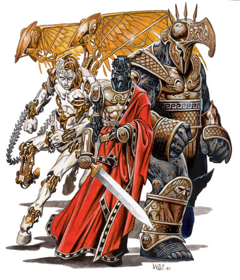
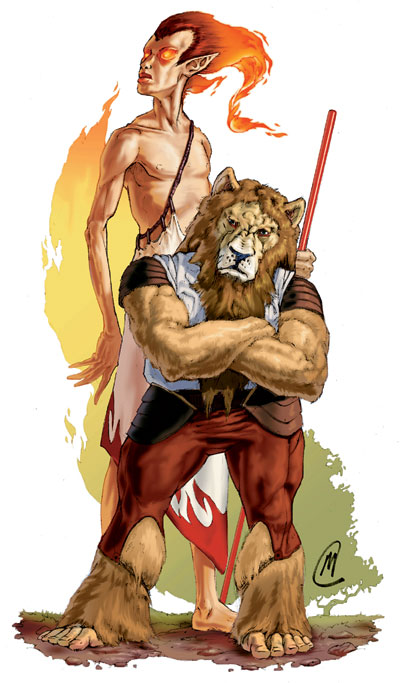
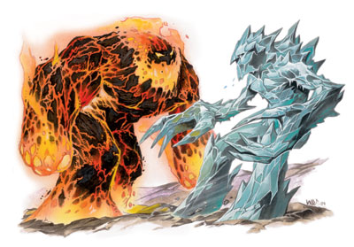
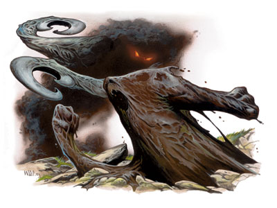
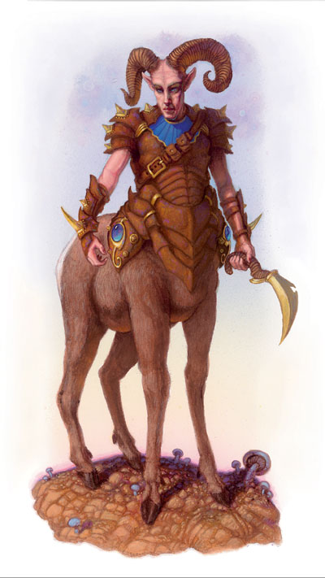

|
幽影生物
|
怪物
各个位面孕育了拥有无限种可能性且不计其数的生物，它们对于来自主位面的外来者而言是相当不可思议的存在。本章将会介绍一部分较常见的位面生物，它们有可能在主位面或别的地方与冒险者们遭遇。关于一些特殊攻击及特性的详细说明请参看怪物图鉴。
点击右下角的菜单选择其他内容
幽影生物
双头幽影兽
中型异界生物
生命骰：8d8+8（44 HP）
先攻值：+6（+2 敏捷，+4 精通先攻）
速度：30 英尺
防御等级：15（+2 敏捷，+3 天生）
攻击：2 爪抓 +10，尾刺 +8
伤害：爪抓 1d8+2，尾刺 1d4+1
面宽/触及：5英尺乘5英尺/10英尺
豁免：强韧 +7，反射 +8，意志 +8
属性：力量 14，敏捷 15，体质 13，智力 8，感知 15，魅力 13
技能：攀爬 +11，隐藏 +17，聆听 +9，感知方向 +9，潜行 +13，侦察 +13
专长：战斗反射，精通先攻，多重攻击
气候/地形：任意陆地及地底
组织：单独或成群（2-5）
挑战等级：3
宝物：1/10 钱币；50% 宝物；50% 物品
阵营：通常是中立
进化：9-12 HD（中型）；13-18 HD（大型）
幽影六腿马
大型异界生物
生命骰：10d8+40（85 HP）
先攻值：+3（敏捷）
速度：40 英尺；飞行 90 英尺（良好）
防御等级：22（-1 体型，+3 敏捷，+10 天生）
攻击：2 蹄踢 +15 近战
伤害：蹄踢 1d8+5
面宽/触及：5英尺乘10英尺/5英尺
特殊攻击：类法术能力
特性：不稳形态，融入阴影
豁免：强韧 +11，反射 +10，意志 +7
属性：力量 20，敏捷 16，体质 18，智力 6，感知 10，魅力 15
技能：隐藏 +7，感知方向 +13，聆听 +13，察言观色 +8，侦察 +13
专长：专攻武器（蹄踢），疾跑，专攻法术（幻影系）
气候/地形：任意陆地
组织：单独或成群（4-24）
挑战等级：9
宝物：无
阵营：通常是中立
进化：11-20 HD（大型）；21-30 HD（超大型）
幽影树怪
超大型异界生物
生命骰：15d8+75（142 HP）
先攻值：-1（敏捷）
速度：0 英尺
防御等级：18（-2 体型，-1 敏捷，+11 天生）
攻击：4 卷须 +18 近战
伤害：卷须 1d8+9
面宽/触及：10英尺乘10英尺/15英尺
特殊攻击：精通擒抱，猛拉上扯，力量伤害
特性：位面传送，伪装，植物特性，穿刺伤害减半
豁免：强韧 +14，反射 +4，意志 +4
属性：力量 29，敏捷 8，体质 21，智力 4，感知 9，魅力 12
气候/地形：任意森林
组织：单独
挑战等级：10
宝物：1/10 钱币；50% 宝物；50% 物品
阵营：通常是邪恶
进化：16-30 HD（超大型）；31-45 HD（巨型）
幽影生物来自于幽影位面，他们常常在各个位面上寻找属于自己的角色，如守护者，坐骑或是狩猎者。因此，它们身体的一部分由阴影构成，这使它们无论哪一种都会成为可怕的敌人。
双头幽影兽

双头幽影兽生活于幽暗的环境中，如峡谷，森林以及错综复杂的地下世界。它们即不喜欢过度的光亮也不喜欢过度的黑暗，这两者无论哪一个都会令它们觉得体乏神困。
一只双头幽影兽看起来看是一个有人类大小，全身覆盖着黑影的双头蜥蜴。它用它那四个看起来可有可无的腿部移动。而一对脑袋的轮廓则相当的清晰，就如同它那带刺的尾巴一样。它们不择手段的保护着自己的巢穴（比如一个有微光的古墓），攻击那些带来光源的侵入者，威协他们撤退。
战斗
双头幽影兽的主要活动是保护它们的阴暗巢穴——特别是当侵入者手中持有光源时。双头幽影兽隐藏在它可以找到的最深的坑中，然后跃起突然袭击它可以打倒的敌人。
因为是由阴影构成，双头幽影兽可以极可能大的伸展它的劲部和尾部，并且还允许达伸展到极限长度。疏忽的敌人会发现自己正试图以安全的距离绕过双头幽影兽时，竟会被它那黑色的利齿给咬中。
技能：双头幽影兽的阴影天性给予它在进行隐藏检定时有+4种族加值。
幽影六腿马
幽影六腿马是成群驰骋于幽影位面的马形生物。它们常常成为一些人的坐骑，只要这些人有能力驯服它们。
从远处来看幽影六腿马看起来如同一匹高大强壮的马。但它和马最大的区别在于它有六只腿，而其它的区别则要靠近观察才能看得出来。它的皮毛扁平为灰色，身体看起来则似乎非常的脆弱——在暗影般的皮肤下显现出身体内部的构造，包括头骨和其它骨架。在蹄部的卷鬓看起来朦胧不清，头部的鬃毛和尾巴也是如此。它还有着一对暗淡无光的眼睛。幽影六腿马不发出马嘶声，但却会发出低沉的吠声和哼声。它们用心灵感应与同类或是骑手沟通，但对于陌生者却绝不会这么做。
战斗
幽影六腿马用它的蹄子来进行踢击和踩击，无论哪一种攻击只要将接触到有影生物的影子就可以造成碾压伤害。如果战斗形势变得对自己不利时，它便会将自己虚体化，然后逃跑。
类法术能力：随意施展——寻找捷径，行影术；3次/天——防生物力场；1次/天——位面传送（仅限自己及骑手）。这些能力在施展时如同于一个15级的术士的同名法术（豁免 DC=12+法术等级）。
不稳形态（Su）：幽影六腿马可以用一个标凖动作使自己不稳定的身体变得虚体化。在这种状态时，它只能被被其它的虚体生物伤害，+1或更好的魔法武器，以及魔法都有50%的机率无法伤害到它们的身体。它可以随意的穿过固定的实物，而移动则总是悄无声息。它的防御等级将会变成14（-1 体型，+3 敏捷，+2 偏斜）。它的蹄踢则变为虚体触击，忽视一切天生护甲，铠甲及盾牌，近战加值为+13，可造成1d8点伤害。
隔入阴影（Su）：除了四处都有阳光照射的情况外，幽影六腿马可消失于阴影之中，得到十分之九的隐蔽。人造光源，甚至是光亮术和不灭明焰法术，都不能令此能力失效。但是昼明术却可以。
作为座骑的幽影六腿马
幽影六腿马厌恶被骑，而它承认的骑手可以平息它的狂野本性。若想尝试驯服，那么一个骑手必须先爬到这个生物的背上，要么紧紧的抱住它，要么就用魔法控制停止它的反抗。然后骑手必须能过一次成功的骑乘检定（DC 30）来平息幽影六腿马的狂燥（当马上无鞍时，骑乘检定会有-5罚值）。如果骑手检定失败，那么便要投——被愤怒的幽影六腿马进行一次借机攻击——或者从马背上跌下来受1d6点伤害。在检定失败的场合，幽影六腿马会选择化成虚体逃跑或是战斗。
一旦成功驯服幽影六腿马，它便会自动与骑手建立联系，然后忠诚的服待骑手如同一般的马匹般。之后仅限于同一个骑手，不会在无鞍时受到-5罚值，同时也可以分享幽影六腿马的虚体化能力。身上坐有骑手的幽影六腿马可以随时进行战斗，但是骑手若不进行一次成功的骑乘检定则不可马上参战（请见玩家手册72页关于骑乘的说明）。
有些骑手只是简单的用魔法支配它们并在它们背上安置马鞍，这样的话幽影六腿马的能力将不会作用到骑手身上。幽影六腿马会想尽方法的抗拒魔法控制，不令自己被支配。
幽影树怪
幽影树怪是存在于一些危险森林心腹之处的暗黑之树。它们融入到其它的森木之中，从林冠处落下套索勒杀那些有影的侵入者。
尽管它位于永久性的阴影之中，但幽影树怪看起来仍然和身边的森木无异，仅仅是体型较大而已。它那庞大的树根和树干部分可以覆盖近千平方英尺以上的面积，而其垂下的分枝则不可思议的延伸到20英尺长。隐藏着墨黑色卷须的分枝慢慢的在不知情的受害者身边滑动，然后将他们拉离地面再勒压他们。每当幽影树怪勒死一个受害者，卷须便便会把尸体扔到外露的树根处，令其腐烂并成为自己生存所需的养料。
幽影树怪使用木族语，但是它们很少说话。
战斗
幽影树怪知道如何将目标陷入自己的牢笼并且成功的发动突然袭击。因为是一个固定的植物，所以它不能在战斗对自己不利时逃跑，尽管它可以退到幽影位面中并在那里战斗。它会一直战斗到死亡为止，除非它能抓住一个人质借以来议和。
精通擒抱（Ex）：作为使用这个能力的前提，幽影树怪必须用第一次卷须攻击命中目标，且目标的体型必须为大型或更小。如果它突袭数个敌人，则可以试图擒抱四个目标，尽管会减少攻击加值，但是会令擒抱检定更容易成功（它最高的擒抱检定加值为+28）
猛拉上扯（Ex）：在幽影树怪抓住一个敌人的下一轮，如果仍然成功的将敌人抓住的话，它将会自动将被定身的目标向上猛拉20英尺直至空中。在目标从空中摔到地上之前会受到因擒抱而造成的2d6点伤害。
力量伤害（Su）：当幽影树怪将猎物拉起后，只要还保持着擒抱状态，它的每个卷须便会每轮对目标造成1d4点临时的力量伤害（同时也包括正常的卷须攻击伤害）。通过一次成功的强韧检定（DC 22）便可以在那一轮内回复受损的力量值。
位面传送（Su）：幽影树怪可以用一个即时动作将自己和被抓住的目标一起传送到幽影位面的一个森林中达5轮时间，效果与同名法术一样。当时间一到，幽影树怪和它身边20英尺范围内的生物便会回到主位面的起始位置，如果幽影树怪在幽影位面被消灭，那么幸存者将需要自己来寻找回家的道路。因为幽影树怪生于幽影位面，故它可以用同样的能力使自己从幽影位面传送到主位面的某个森林之中。
伪装（Ex）：因为当幽影树怪休息时和一般的树木无异，故必须要在它攻击之前通过一次成功的侦察技能检定（DC 25）来发现它的存在。野外求生技能和知识（植物或是药草）技能可以代替侦察技能来进行检定以发现幽影树怪。
植物特性：免疫所有影响心灵、毒素、睡眠、麻痹、震慑以及变形的效果，重击也无法对幽影树怪造成影响。
穿刺伤害减半（Ex）：穿刺类武器只能对幽影树怪造成一半的伤害，而最小值为1点。
新出现的译名
Ephemera 幽影生物
Dusk Beast 双头幽影兽
Ecalypse 幽影六腿马
Discorporate 不稳形态
Umbral Banyan 幽影树怪
Yank upward 猛扯上拉
|
|
能量生物
|
能量生物
正能量体·夏格-雅
中型异界生物（虚体）
生命骰：5d8+5（27 HP）
先攻值：+3
速度：飞行 20 英尺（良好）
防御等级：15（+3 敏捷，+4 偏斜）
攻击：4 虚体触击 +8 近战；或正能量射线 +8 远程
伤害：虚体触击 1d6点正能量伤害；正能量射线 1d8
面宽/触及：5英尺乘5英尺/5英尺
特性：虚体，正能量打击，驱散不死生物，爆裂
豁免：强韧 +5，反射 +7，意志 +4
属性：力量 -，敏捷 17，体质 12，智力 7，感知 10，魅力 18
技能：隐藏 +10，搜索 +5，察言观色 +8，侦察 +7
专长：战斗反射，额外驱散
气候/地形：任意陆地及地底
组织：单独或成群（2-8）
挑战等级：4
宝物：无
阵营：总是中立
进化：6-9 HD（中型）；10-15 HD（大型）
ENERGON
Xag-Ya
Medium-Size Outsider(Incorporeal)
Hit Dice:5d8+5(27 hp)
Initiative:+3
Speed:Fly 20 ft.(good)
AC:17(+3 Dex,+4 deflection)
Attacks:4 incorporeal touches +8 melee;or positive energy ray +8 ranged touch
Damage:Incorporeal touch 1d6 and positive energy;positive energy ray 1d8
Face/Reach:5 ft.by 5 ft./5 ft.
Special Qualities:Incorporeal,positive energy lash,turn undead,explosion
Saves:Fort +5,Ref +7,Will +4
Abilities:Str -,Dex 17,Con 12,Int 7,Wis 10,Cha 18
Skills:Hide +10,Search +5,Sense Motive +8,Spot +7
Feats:Combat Reflexes,Extra Turning
Climate/Terrain:Any land and underground
Organization:Solitary or cluster(2-8)
Challenge Rating:4
Treasure:None
Alignment:Always neutral
Advancement:6-9 HD(Medium-size);10-15 HD(Large)
负能量体·耶格-依
中型异界生物（虚体）
生命骰：5d8+5（27 HP）
先攻值：+3
速度：飞行 20 英尺（良好）
防御等级：15（+3 敏捷，+4 偏斜）
攻击：4 虚体触击 +8 近战；或负能量射线 +8 远程
伤害：虚体触击 1d6点负能量伤害；负能量射线 1d8
面宽/触及：5英尺乘5英尺/5英尺
特性：虚体，负能量打击，斥喝不死生物，爆裂
豁免：强韧 +5，反射 +7，意志 +4
属性：力量 -，敏捷 17，体质 12，智力 7，感知 10，魅力 18
技能：隐藏 +10，搜索 +5，察言观色 +8，侦察 +7
专长：战斗反射，额外驱散
气候/地形：任意陆地及地底
组织：单独或成群（2-8）
挑战等级：5
宝物：无
阵营：总是中立
进化：6-9 HD（中型）；10-15 HD（大型）
Xeg-Yi
Medium-Size Outsider(Incorporeal)
Hit Dice:5d8+5(27 hp)
Initiative:+3
Speed:Fly 20 ft.(good)
AC:17(+3 Dex,+4 deflection)
Attacks:4 incorporeal touches +8 melee;or negative energy ray +8 ranged touch
Damage:Incorporeal touch 1d6 and negative energy;negative energy ray 1d8
Face/Reach:5 ft.by 5 ft./5 ft.
Special Qualities:Incorporeal,negative energy lash,rebuke undead,explosion
Saves:Fort +5,Ref +7,Will +4
Abilities:Str -,Dex 17,Con 12,Int 7,Wis 10,Cha 18
Skills:Hide +10,Search +5,Sense Motive +8,Spot +7
Feats:Combat Reflexes,Extra Turning
Climate/Terrain:Any land and underground
Organization:Solitary or cluster(2-8)
Challenge Rating:5
Treasure:None
Alignment:Always neutral
Advancement:6-9 HD(Medium-size);10-15 HD(Large)

能量生物是一种来自外界的，有智力的微弱能量聚合体。在能量位面，它们四处飘移而仅仅只是为了满足自己的好奇心或是执行一些不明的计划。
夏格-雅来自正能量位面，耶格-依则来自负能量位面。这两种能量生物都是一种约2英尺宽的球体，在空中浮动闪烁，解放着温热（夏格-雅）或微寒（耶格- 依）的光芒。在球形身体的下部半球体处长着六到十二根触手。而其它的特征仅仅只是一对生于上半部球体，时隐时现的光点形眼睛。
因为是虚体生物，夏格-雅和耶格-依在有门、墙和家具特征的地方很难被发现，它们因着不可知的原由而从静静的从一个地方滑行到另一个地方。它们常常停下来观察其他的生物，往往会喜欢出现在有人出生或是死亡的地方。能量生物很少参战，但是它们的接触攻击是非常危险的，所以许多生物都会考虑吓跑它们或是试着驱散它们。
一些强大的死灵法术和牧师喜欢抓住一些能量生物，利用它们来保卫一个地区，参加宗教仪式或是加强不死生物的能力。一旦获得自由，两种能量生物都会非常感激救助者并助在往后的战斗中为了他们的利益而助战。
夏格-雅和耶格-依不会说话，甚至在它们自己的群体之中也是如此。而剩下的摄食和繁殖习性均为未知。
战斗
能量生物喜欢在战斗中四处绕行，用它们的虚体接触攻击实体的敌人。夏格-雅或耶格-依常会发射它们的能量射线，然后钻入固体实物中以避免反击。在近距战斗中，能量生物会试着飘向敌人无法容易习惯的地形，然后利用它们的战斗反射专长给予敌人额外的借机攻击。能量生物也可以用它们的四只触手进行攻击。
虚体：能量生物只能被其它的虚体生物伤害，+1或更好的魔法武器，以及魔法都有50%的机率无法伤害到它们的身体。它可以随意的穿过固定的实物，也可以直接穿过铠甲进行攻击。它们移动时常常悄无声息。
能量射线（Ex）：能量生物的能量射线的最大射程为30英尺。
爆裂（Su）：如果一个能量生物的生命值被减到0，那么它的身体会瞬间被破坏，同时爆炸并对20英尺半径内的每个生物造成1d8+9点正能量或负能量伤害（强韧豁免 DC 16 通过则减半）。如果一个夏格-雅看见别一个耶格-依，它们就会急速撞击到一起并产生爆裂，对30英尺半径内的每个生物造成2d8+18点伤害（强韧豁免 DC 16 通过则减半）。
Energons are faintly glowing coalescences of energy inhabited by alien intelligence.Native to the Energy Planes,they wander elsewhere to satisfy curiostity or fulfill some unknown plan.
Xag-yas hail from the Positive Energy Plane,while xeg-yis come from the Negative Energy Plane.Either type of energon is a translucent globe about 2 feet across that floats and shimmers in the air,giving off a warm(xag-ya)or cold(xeg-yi)glow.Emerging from the lower hemisphere of the globe are six to twelve tentacles.The only other feature is a pair of spots on the upper hemishpere that suggest eyes.
Incorporeal creatures,xag-yas and xeg-yis take no notice of features such as doors,walls,and furniture,silently gliding form place to place on unknowable errands.They often pause to observe other creatures,tending to favor places where birth or death is occurring.Energons rarely start fights,but their mere touch is dangerous,so many creatures consider them a threat and try to drive them off.
Some powerful necromancers and clerics capture energons,using them to guard a location,assist in a ritual,or strengthen undead minions.When freed,xag-yas and xeg-yis express gratitude by healing their rescuers or fighting on their behalf.
Xag-yas and xeg-yis do not speak,evan among themselves.Their feeding and reproductive habits remain unknown.
COMBAT
Energons like to move around in combat,using their incorporeality to outmaneuver material foes.A xag-ya or xeg-yi often fires its energy ray,then ducks into a solid object to avoid a couterattack.In melee combat,energons try to position their enemies can''t maneuver easily and try to use Combat Reflexes to make extra attacks of opportunity.An energon can fight with only four tentacles at a time.
Incorporeal:Energons can be harmed only by other incorporeal creatures,+1 or better magic weapons,or magic,with a 50% chance to ignore any damage from a corporeal source.They can pass through solid objects at will,and their attacks pass through armor.They always move silently.
Energy Ray(Ex):An energon''s energy ray has a range of 30 feet.
Explosion(Su):If an energon is reduced to 0 hit points,its body is instantaneously destroyed in an explosion of positive or negative energy that deals 1d8+9 points of damage to everyone in a 20-foot-radius burst(Fortitude save DC 16 half).If a xag-ya and xeg-yi see each other,they rush together are destroyed in an explosion that deals 2d8+18 points of damage within a 30-foot radius(Fortitude save DC 16 half).
正能量体·夏格-雅
夏格-雅是诞生于正能量之中的生物，它们可以根据自己的判断来医治同伴或是对不死生物造成额外的伤害。
正能量打击（Su）：夏格-雅可以通过用远距接触攻击或是虚体触击命中目标，借此来注入正能量。不死生物（包括虚体生物）将会受到2d8+5点额外伤害。夏格-雅还可以通过将正能量注入活着并合适的生物体内，借此可治疗2d8+5点伤害。夏格-雅可以控制自己的正能量不去治疗活着的敌对生物（仅会造成基本伤害）。这个能力夏格-雅一天可以使用五次。
驱散不死生物（Su）：夏格-雅可以在60英尺半径范围内散布正能量，借此来驱散不死生物。它的驱散不死生物能力如同于一个5级牧师的同名能力，一天可以使用五次。这个能力不可以摧毁不死生物。
Xag-Ya
The xag-ya,being a creature of positive energy,can heal friends and deal extra damage to undead at its discretion.
Positive Energy Lash(Su):A xag-ya can make a ranged touch attack or hit with an incorporeal touch attack to infuse a target with positive energy.Undead foes(even incorporeal ones)take an additional 2d8+5 points of damage.The xag-ya can channel this positive energy into living creaturs as well,healing up to 2d8+5 points of damage.The xag-ya can control its positive energy enough to avoid healing living foes(dealing only the base damage).This power can be used up to five times per day .
Turn Undead(Su):By suffusing a 60-feet-radius area with positive energy,a xag-ya can make the undead recoil.It turns undead as a 5th-level cleric and can do so five times per day.It cannot destroy undead.
负能量体·耶格-依
耶格-依是诞生于负能量之中的生物，它们可以根据自己的判断对活着的生物给予额外的伤害。
负能量打击（Su）：耶格-依可以通过用远距接触攻击或是虚体触击命中目标，借此来注入负能量。这将会对活着的生物造成2d8+5点伤害，而对不死生物则会治疗相同点数的伤害。耶格-依可以控制自己的负能量不去治疗敌对的不死生物（仅会造成基本伤害）。这个能力耶格-依一天可以使用五次。
斥喝不死生物（Su）：耶格-依可以在60英尺半径范围内散布负能量，借此来令不死生物感到恐惧。它的斥喝不死生物能力如同于一个5级牧师的同名能力，一天可以使用五次。这个能力不可以命令不死生物。
Xeg-Yi
The xeg-yi,being a creature of negative energy,can deal extra damage to living creatures at its discretion.
Negative Energy Lash(Su):A xeg-yi can make a ranged touch attack or hit with an in corporeal touch attack to infuse a target with negative energy.This deals an additional 2d8+5 points of damage to a living target but heals an undead creature by the same amount.A xeg-yi can control its negative energy enough to avoid healing an undead foe(dealing only the base damage).This power can be used up to five times per day.
Rebuke Undead(Su):A xeg-yi can flood a 60-foot-radius area with negative energy,making unded creatures cower in fear.It rebukes undead as a 5th-level eleric,doing so up to five times per day.It cannot command undead.
新出现的译名
Energon 能量生物
Xag-Ya 夏格-雅
Xeg-Yi 耶格-依
|
|
吉斯洋基人与吉斯瑟雷人
|
宿敌·吉斯洋基人与吉斯瑟雷人！
吉斯洋基人
中型异界生物（邪恶）
生命骰：1d8+1（5 HP）
先攻值：+1（敏捷）
速度：30 英尺
防御等级：16（+1 敏捷，+5 胸甲）
攻击：精制品巨剑 +3 近战；或复合长弓 +2 远程
伤害：巨剑 2d6；复合长弓 1d8
面宽/触及：5英尺乘5英尺/5英尺
特殊攻击：心灵异能
特性：心灵异能，法术抗力 可变（见说明）
豁免：强韧 +3，反射 +3，意志 +1
属性：力量 10，敏捷 12，体格 13，智力 11，感知 8，魅力 10
技能：手艺（铠匠） +2，手艺（武器工匠） +2，搜索 +4
专长：专攻武器（巨剑）
气候/地形：任意陆地及地底
组织：结伴（2-4 3级战士），组队（11-20 3级战士，外加2个7级士官，及1名9级指挥官和1头青年红龙），或成群（30-40 3级战士，另外每10名成员便有2名7级士官，5个7级尉官，3个9级指挥官，1个16级的最高司令官，以及每30个成员便附带1头成年红龙）
挑战等级：1
宝物：标凖
阵营：总是邪恶（任意）
进化：视人物职业而定
GITHYANKI
Medium-Size Outsider(Evil)
Hit Dice:1d8+1(5 hp)
Initiative:+1(Dex)
Speed:30 ft.
AC:16(+1 Dex,+5 breastplate)
Attacks:Masterwork greatsword +3 melee;or composite longbow +2 ranged
Damage:Greatsword 2d6;composite longbow 1d8
Face/Reach:5 ft.by 5 ft./5 ft.
Special Attacks:Psionics
Special Qualities:Psionics,SR variable(see text)
Saves:Fort +3,Ref +3,Will +1
Abilities:Str 10,Dex 12,Con 13,Int 11,Wis 8,Cha 10
Skills:Craft(armorsmithing) +2,Craft(weaponsmithing) +2,Search +4
Feats:Weapon Focus(greatsword)
Climate/Terrain:Any land and underground
Organization:Company(2-4 3rd-level fighters),squad(11-20 3rd-level fighters,plus 2 7th-level sergeants,1 9th-level captain,and 1 young red dragon),or regiment(30-100 3rd-level fighters,plus 1 7th-level sergeant per 10 members,5 7th-level lieutenants,3 9th-level captains,1 16th-level supreme leader,and 1 adult red dragon per 30 members)
Challenge Rating:1
Treasure:Standard
Alignment:Always evil(any)
Advancement:By character class
吉斯洋基人是生活于星界位面的古老类人生物，他们不断的在争斗、袭击和战争中填充着他们的军火库。
他们非常瘦弱，平均身高在6尺3寸左右，而标凖体重则为170磅。他们有着粗糙的黄色皮肤，加上常常扎有一个或更多小辫的黑色头发。还有暗淡无光的眼睛，尖尖的耳朵以及锯齿般的肯部。他们喜欢加工自己的铠甲，令它看起来比同伴的更为气度不凡。
吉斯洋基人使用他们自己的神秘语言，不过还是有许多人使用通用语和龙语。如同矮人一般，吉斯洋基人是手艺大师，尽管他们只把精力放在制造战争武器上。他们的物品非常有特色，而非吉斯洋基人若使用这次物品便会立刻遇到前来报复的吉斯洋基人。
玩家遭遇到的吉斯洋基人多为战士；不过，法师（他们称之为沃洛克）和高阶职业者（他们称之为吉西）也可以遇到。
战斗
吉斯洋基人是经验丰富的战士，他们了解各种战术如埋伏、隐慝以及从远处进行心灵狙击。不管怎么样，就算是会使自己的近战武器被毁他们也要与敌人面对面的交战。吉斯洋基人的武器通常是经过他们特别处理过的巨剑，重剑或是其它特别大型的武器，这些全都是精制品，而且每个都有自己的特色装饰及名字。吉斯洋基法师则极度精密的引导着力量帮助处于近战中的同伴。
心灵异能（Sp）：随意施展——锐耳术/鹰眼术，任意门，法师之手，心灵遥控。当吉斯洋基角色升至8级时，还可以一天使用一次位面传送。这些能力在施展时如同于一个16级法师的同名法术。
法术抗力（Ex）：吉斯洋基人的法术抗力为5+角色等级。
Githyanki are an ancient line of humanlike beings who reside in the Astral Plane,filling their armories for their next skirmish,raid,or war.
They are gaunt,averaging 6 feet 3 inches tall and typically weighing around 170 pounds.They possess rough,yellow skin and black hair that is often pulled into one or more topknots.Their eyes gleam darkly,and their ears are pointed and serrated in back.They enjoy elaborate dress armor,and it is not uncommon for githyanki to show more regard for their panoply than for a mate.
Githyanyi speak their own secret tongue,but most also know Common and Draconic.Like dwarves,githyanki are craftmasters,although they focus exclusively on items of warfare.Their items are distinctive,and nongithyanki who acquire them run the risk of immediate retribution should they encounter githyanki.
Most githyanki encountered outside their homes are fighters;however,wizards(called warlocks)and multiclass githyanki(called gish)are also found.
COMBAT
Githyanki are seasoned warriors,familiar with the tactical use of ambush,cover,and psionic sniper attacks from afar.However,they prefer to engage their enemies hand-to-hand so they can bring their devastating melee weapon to bear.Githyanki weapons are usually greatwords,bastard swords,and other particularly largebladed weapons of special githyanki manufacture,all masterwork and each distinctively decorated and named.Githyanki wizards direct their power with pinpoint accuracy to support their comrades in melee.
Psionics(Sp):At will--clairaudience/clairvoyance,dimension door,mage hand,telekinesis.Upon advancing to 8th character level,a githyanki can use plane shift once per day.These abilities are as the spells cast by a 16th-level wizard.
Spell Resistance(Ex):A githyanki has spell resistance of 5+1 per character level.
银刃
这些给人印象深刻的武器通常由7级或更高等级的吉斯洋基武士使用。出自于吉斯洋基人之手的银刃看起来非常象吉斯洋基人的标凖武器，它是一把+3的巨剑。每当银刃被投入到战斗中时，它的剑身就会变为银色的流体，在剑身的流动和闪烁中不断改变着形体。在没有精通异种武器专长的人手中，银刃将非常笨重（在攻击投骰上将会有-4罚值），而且仅仅只有它最基本的加值。而在星界的熟练使用者手中，银刃将会有斩断联接物质本体与星界联接的银线的能力。这些脆弱的线将视同有着与拥有者共同防御等级的可触目标，硬度为10，并有20点HP（请看玩家手册第135页关于攻击物体的说明）。一根银线在它于星界介质中褪色前将会在星界施行者的后面留下长5英尺的明显痕迹。攻击银钱将会引发星界旅行者的借机攻击。
当银线受到伤害时，星界施行者必须通一次成功的强韧检定（DC 13）否则便立即被迫返回到他的身体——当旅行者们不愿与处在主场位面的吉基洋基人冲突时，这倒是一个不错的逃跑办法。银钱一旦被斩断，那么目标在主位面的身体便会与星界失去联系。
一些银刃有着+5加值而且还有斩首的特性，但这是属于相对来说非常少量的制品，而且仅仅出自于一些英雄人物之手。当银刃落于非吉斯洋基人的手中时，吉斯洋基人会尽可能的去杀死持有者，实在不行的话就会去偷回或是与人谈判，而最后一着就是与偷窃者的敌人结盟来共同对付他。
施法者等级：11级；先决条件：制造魔法武器及铠甲，制造者必须为吉斯洋基人；交易价格：98，350枚金币；所需成本：49，000枚金币，920点经验。
Silver Swords
These impressive weapons are carried by githyanki combatants of 7th level and higher.Of githyanki make,a silver sword is a +3 greatsword that looks much like a standard githyanki weapon.However,when the weapon is drawn in melee,the blade transforms into a column of silvery liquid,altering the weapon's balance round by round as the blade's shape flows and shimmers.In the hands of someone without the appropriate Exotic Weapon Proficiency feat,the weapon is clumsy(-4 penalty on attack rolls)and possesses only its enhancement bonus.A proficient user on the Astral Plane,however,is able to attack the silver cord that connects the astral form to its material counterpart.The normally insubstantial cord is treated as a tangible object with the owner's AC,hardness 10,and 20 hit points(see Attack an Object page 135 of the Player's Handbook).A silver cord visibly trails 5 feet behind an astral traveler before fading into the astral medium.Attacking it draws an attack of opportunity from the astral traveler.
When the cord is damaged,the astral traveler must succeed at a Fortitude save(DC 13)or be immediately forced to return to its body--which might be a good idea anyway if the traveler is not up to fighting githyanki on their home plane.Severing the silver cord destroys both the astral form and the body on the Material Plane.
Silver swords with an enhancement bonus of +5 and vorpal characteristics exist,but these are minor artifacts,relatively few,and only handed down to heroes of the race.If a silver sword falls into the hands of a nongithyanki,githyanki kill the possessor if they can,steal the weapon if they have to,negotiate if they must,or ally with the thief's most potent foe as a last resort.
Caster Level:11th;Prerequisites:Craft Magic Arms and Armor,creator must be a githyanki;Market Price:98,350 gp;Cost to Creat:49,000 gp+3,920 XP.
吉斯洋基人的社会结构
在很久以前，夺心魔奴役着许多的种族，包括一些吉斯洋基人的祖先。数世纪的囚徒生活造就了这些奴隶们强烈的仇恨，而漫长的时间使他们也被慢慢灌输入一些心灵力量。于是，在一个强大的领袖（传说中的吉斯）的领导之下，拥有心灵异能的起义军发动了越位面的大起义，最终摧毁了夺心魔的帝国，给幸存的奴隶们带来了自由之身。但是，不久便因为人种等级而使他们分裂为吉斯洋基人，以及他们的宿敌吉斯瑟雷人（见下面关于吉斯瑟雷人的内容）。无论哪一边都不断的尝试着消灭对方。他们的仇恨之火燃烧了数世纪之久，使吉斯洋基人变得非常邪恶，并形成了如今的军国主义式的社会结构。两个种族对于夺心魔有着无以复加的恨意，如果有机会的话他们会暂时中断彼此的敌意而共同杀死这些邪恶的灵吸怪。
吉斯洋基人生活于飘浮在星界位面的大量军事要塞中。在那里他们进行贸易、铸造宝物、种植粮食以及过他们的生活。家庭居所是不存在的，吉斯洋基人更喜欢住自己的住宅；不管怎样，吉斯洋基人总会被发现正在进行集团练兵，以煅炼他们的战斗技艺。一个要塞一般都会包含等同于全体战斗人员20%数量的非战斗人员（大部分是孩子）。吉斯洋基人的男性和女性几乎从事任何的角色和职业。
吉斯洋基人不崇拜神，但是却会对一个巫妖女皇致以最崇高的敬意。做为一个好嫉妒的偏执狂，她是一个喜欢吸食吉斯洋基人精髓的16级角色。当她除去潜在的竞争对手时，就会吸食对方的生命精髓来增强自己的力量。
红龙协定：吉斯洋基人与红龙之间有着种族协定，使它们有时会如同马一般服务于吉斯洋基人。而与红龙交易时吉斯洋基人将会在交涉检定上获得+4的种族加值。在一个大型群体中，吉斯洋基人可以与红龙达成暂时的同盟，这点可以由城主来决定。
吉斯洋基人的角色
吉斯洋基人的天赋职业是战士。吉斯洋基人决不会有牧师，除非他们发誓抛弃对巫妖女皇的崇拜（这将是一个导致死亡的危险决定）。有一些强力的吉斯洋基军阀的职业则是黑暗卫士。
GITHYANKI SOCIETY
In eons past,the mind flayers enslved entire races,including the forerunners of the githyanki.Centuries of captivity bred hatred,nurtured resolve,and finally instilled psionic power into these slaves.With mental armaments of their own and a powerful leader to rally behind(the legendary Gith),the slaves instingated a cross-planar struggle that,in the end,threw down the mind flayer empire,bringing freedom to the surviving slaves.However,these soon split into the racially distinct githyanki and their mortal enemies,the githzerai(see the Githzerai entry,below).Each constantly attempts the extinction of the other.This animosity has burned through the centuries,warping the githyanki into the evil,militaristic creatures they are today.Both peoples'hatred of the mind flayers knows no bounds,though,and they break off hostilities to slay illithids if the opportunity presents itself.
Githyanki live within massive fortresses adrift in the Astral Plane.Here they conduct commerce,manufacture goods,grow food,and live out their lives.Family dwellings are nonexistent,since most githyanki prefer their own abode;however,githyanki are often found in groups,honing their fighting skills.A fortress contains nocombatants(mostly children)equal to 20% of the fighting population.Githyanki males and females may be found in almost any role or class.
The githyanki have no deity but pay homage to a lich-queen.A jealous and paranoid overlord,she devours the essence of any githyanki that rises above 16th character level.As she eliminates potential rivals,the lich-queen enhances her power with the stolen life essence.
Red Dragon Pact:Githyanki have a racial pact with red dragons,who sometimes serve githyanki as steeds.Individually,githyanki gain a +4 racial bonus on Diplomacy checks when dealing with red dragons.In large groups,they can make temporary alliances with red dragons a the option of the Dungeon Master.
GITHYANKI CHARACTERS
Fither is the favored class of the githyanki.Githyanki are never clerics,unless they've forsworn the lich-queen(a dangerous and ultimately lethal choice).Some of the most powerful githyanki warlords are blackguards.
吉斯瑟雷人
中型异界生物
生命骰：1d8（5 HP）
先攻值：+3（敏捷）
速度：30 英尺
防御等级：17（+3 敏捷，+4 惯性护甲）
攻击：匕首 +2 近战；或复合长弓 +4 远程
伤害：匕首 1d4；复合长弓 1d8
面宽/触及：5英尺乘5英尺/5英尺
特性：心灵异能，惯性护甲，法术抗力 可变（见说明）
豁免：强韧 +2，反射 +5，意志 +3
属性：力量 10，敏捷 16，体格 10，智力 8，感知 12，魅力 11
技能：专注 +4，搜索 +2
专长：专攻武器（匕首）
气候/地形：任意陆地及地底
组织：团队（3-12 3级学员），宗派（12-34 3级学员，外加2名7级教师和1个9级导师），或宗教集团（30-100 3级学员，另外每10成员便有2个7级教师，5个9级导师，2个13级大师，以及1个16级的禅师）
挑战等级：1
宝物：标凖
阵营：任意中立
进化：视人物职业而定
GITHZERAI
Medium-Size Outsider
Hit Dice:1d8(4 hp)
Initiative:+3(Dex)
Speed:30 ft.
AC:17(+3 Dex,+4 inertial armor)
Attacks:Dagger +2 melee;or composite longbow +4 ranged
Damage:Dagger 1d4;composite longbow 1d8
Face/Reach:5 ft.by 5 ft./5 ft.
Special Qualities:Psionics,inertial armor,SR variable(see text)
Saves:Fort +2,Ref +5,Will +3
Abilities:Str 10,Dex 16,Con 10,Int 8,Wis 12,Cha 11
Skills:Concentration +4,Search +2
Feats:Weapon Focus(dagger)
Climate/Terrain:Any land and underground
Organization:Fellowship(3-12 3rd-level students),sect(12-34 3rd-level students,plus 2 7th-level teachers and 1 9th-level mentor),or order(30-100 3rd-level students,plus 1 7th-level teacher per 10 adults,5 9th-level mentors,2 13th-level masters,and 1 16th-level sensei)
Challenge Rating:1
Treasure:Standard
Alignment:Any neutral
Advancement:By character class
吉斯瑟雷人是拥有坚毅心灵，居住在林勃混乱海的类人种族，安全的生活在他们隐蔽的禅林之中。
他们比人类的体形略为纤细且身高较高，而明显的特征则是一付长脸，以及灰色或黄色的眼睛。他们喜欢穿着深色调的衣服来体现吉斯瑟雷人个性中的沉稳与严肃。
作为法则，吉斯瑟雷人通常会紧闭嘴唇以保持缄默，并且很少相信他们之外的种族。他们使用自己的语言（与吉斯洋基人的语言相似，并且他们可以理解对方决定用交涉来代替战斗时的话语），不过仍然有很多人使用通用语。
很多吉斯瑟雷人都是武僧；不过，术士、游荡者以及高阶职业者（他们称之为色西斯）也是禅林中必不可少的成员。
战斗
吉斯瑟雷人不会害怕没有武装，因为他们的身体就是自己的武器。吉斯瑟雷武僧完全可以在无护甲和武器的情况下战斗，并且渴望用一场“精彩的战斗”来回敬他们的死敌，吉斯洋基人及夺心魔。在战斗中，吉斯瑟雷术士会尽全力的利用自己的力量去援助他们的武僧、心灵斗士及游荡者。
心灵异能（Sp）：随意施展——眩晕术，羽落术，粉碎音波。当吉斯瑟雷角色升至11级时，还可以一天使用一次位面传送。这些能力在施展时如同于一个16级术士的同名法术。
惯性护甲（Sp）：吉斯瑟雷人可以使用精神力量来抵挡敌人的攻击。这使吉斯瑟雷人在保持清醒状态时获得+4的防御加值。
法术抗力（Ex）：吉斯瑟雷人的法术抗力为5+角色等级。
Githzerai are a hard-hearted,humanlike people who dwell in the plane of Limbo,secure in the protection of their hidden monasteries.
They are thinner and taller than humans,with sharp features,long faces,and eyes of gray or yellow.Severe and serious,the githzerai tend toward somberness both in dress and personality.
As a rule,githzerai are close-mouthed,keep their own counsel,and trust few outside their own kind.They speak their own language(similar enough to the tongue of the githyanki that either could understand the other if they chose to speak instead of fight),but many also speak Common.
Many githzerai are monks;however,sorceres,rogues,and multiclass githzerai(called zerths)are also indispensable members of a monastery.
COMBAT
Githzerai do not fear being caught defenseless,because their bodies are weapons.Able to fight weaponless and armorless,githzerai monks yearn to bring the "good fight" to their enemies,the githyanki and the mind flayers.In melee,githzerai sorcerers often use their powers to enhance the monks,psychic warriors,and rogues.
Psionics(Sp):At will--daze,feather fall,shatter.Upon advancing to 11th character level,a githzerai can use plane shift once per day.These abilities are as the spells cast by a 16th-level sorcerer.
Inertial Armor(Sp):Githzerai can use psychic force to block an enemy's blows.This gives them a +4 armor bonus as long as they remain conscious.
Spell Resistance(Ex):A githzerai has spell resistance of 5+1 per character level.
吉斯瑟雷人的社会结构
吉斯瑟雷人的祖先在反叛者吉斯（见前面关于吉斯瑟雷人的部分）的带领下摧毁了夺心魔那横跨数个位面的庞大帝国。而在获得自由后，因为意识形态的不同，而最终导致他们分裂成为了基斯瑟雷人以及他们的宿敌，吉斯洋基人。吉斯瑟雷人的历史建立在如同囚禁于修道院的生活方式基础上，无论在哪里，吉斯瑟雷人从孩提时代就必须要学会如何消除潜在的压迫和敌人（绝不会是吉斯瑟雷人）。
吉斯瑟雷人生活于潜藏在混沌海旋涡深处的，类似于要塞的禅林之中。相对于外部空间的混乱，禅林内部则保持着相当的稳定。每一个修道院都由一个等级至少为 16的武僧禅师来对诵经、进餐以军事化训练等活动进行管理，禅师可以完全依个人的喜好及哲学来决定特殊的修习项目。一个修道院一般都会包含等同于全体战斗人员15%数量的非战斗人员（大部分是孩子）。吉斯洋基人的男性和女性可能从事任何的角色和职业。
拉克玛：出于特别的爱好，吉斯瑟雷人有时会组织起一支专门猎杀夺心魔的队伍，他们称之为拉克玛。一队拉克玛由4-5个8级吉斯瑟雷人及1-2个11级吉斯瑟雷人组成，队员基本都是武僧，不过至少会包含一个术士，并且可能会带有一个游荡者。一队拉克玛在杀死至少与他们的队员同样数目的灵吸怪之前绝不能回到自己所属的修道院之中。
吉斯瑟雷人的角色
吉斯瑟雷人的天赋职业是武僧（这样的角色将会是守序中立阵营）。
GITHZERAI SOCIETY
The githzerai forerunners united under the command of the rebel Gith(see the Githyanki entry,above)and threw down the plane-spanning empier of the mind flayers.Once free,the former slaves split ideologically and eventually racially,becoming the githzerai and their foes,the githyanki.The githzerai's history of imprisonment was the foundation of their monastic lifestyle,where all githzerai learn from childhood how to eradicate potential oppressors and enemies(anyone not a githzerai).
Githzerai live within self-contained,fortresslike monasteries hidden deep in the swirling chaos of Limbo.While disorder rules outside,stability holds sway inside.Each monastery is ultimately under the control of a sensei,a monk of at least 16th level,and follows a strict schedule of chants,meals,martial arts training,and devotions,according to a particular sensei's philosophy.A monastery contains noncombatants(mostly children)equal to 15% of the fighting population.Githzerai males and females may be found in almost any role or class.
Rrakkma:As a special devotion,githzerai sometimes organize mind flayer hunting parties called rrakkma.A rrakkma consists of 4-5 githzerai of 8th level and 1-2 of 11th level,mainly monks,but also containing at least on sorcerer and possibly a rogue.A rrakkma does not return to its home monastery before slaying at least as many illithids as its membership.
GITHZERAI CHARACTERS
A githzerai's favored class is monk(such characters are of lawful neutral alignment).
新出现的译名
Silver Swords 银刃
Inertial armor 惯性护甲
|
|
机械境的制裁者
|
机械境的制裁者三人组~

制裁者
追迹者
大型构装生物（守序）
生命骰：8d10（44 HP）
先攻值：+0
速度：50 英尺，飞行 60 英尺（一般）
防御等级：27（-1 体型，+10 天生，+8 马铠）
攻击：2 刺链 +10 近战
伤害：刺链 2d4+5 附加 1d6点电击伤害
面宽/触及：5英尺乘10英尺/10英尺
特殊攻击：类法术能力
特性：伤害减免 30/+3，法术抗力 20，快速治疗 5
豁免：强韧 +2，反射 +2，意志 +5
属性：力量 21，敏捷 11，体质 -，智力 8，感知 17，魅力 15
气候/地形：任意陆地及地底
组织：单独
挑战等级：9
宝物：无
阵营：总是守序中立
进化：9-16 HD（大型）；17-24 HD（超大型）
INEVITABLE
Zelekhut
Large Construct(Lawful)
Hit Dice:8d10(44 hp)
Initiative:+0
Speed:50 ft.,fly 60 ft.(average)
AC:27(-1 size,+10 natural,+8 plate barding)
Attacks:2 spiked chains +10 melee
Damage:Spiked chain 2d4+5 and 1d6 electricity
Face/Reach:5 ft.by 10 ft./10 ft.
Special Attacks:Spell-like abilities
Special Qualities:Damage reduction 30/+3,SR 20,fast healing 5
Saves:Fort +2,Ref +2,Will +5
Abilities:Str 21,Dex 11,Con -,Int 8,Wis 17,cha 15
Climate/Terrain:Any land and underground
Organization:Solitary
Challenge Rating:9
Treasure:None
Alignment:Always lawful neutral
Advancement:9-16 HD(Large);17-24 HD(Huge)
协约者
中型构装生物（守序）
生命骰：13d10（71 HP）
先攻值：+1（敏捷）
速度：30 英尺
防御等级：26（+10 天生，+6 混织铁甲）
攻击：吸血鬼之触 +11/+6 近战；弱能射线 +10 远程接触攻击
伤害：吸血鬼之触 5d6；弱能射线 如同同名法术
面宽/触及：5英尺乘5英尺/5英尺
特殊攻击：类法术能力，吸血鬼之触，弱能射线
特性：伤害减免 30/+3，法术抗力 22，快速治疗 5
豁免：强韧 +4，反射 +5，意志 +7
属性：力量 14，敏捷 13，体质 -，智力 10，感知 17，魅力 16
气候/地形：任意陆地及地底
组织：单独
挑战等级：12
宝物：无
阵营：总是守序中立
进化：14-22 HD（中型）；23-39 HD（大型）
Kolyarut
Medium-size Construct(Lawful)
Hit Dice:13d10(71 hp)
Initiative:+1(dex)
Speed:30 ft.
AC:26(+10 natural,+6 banded mail)
Attacks:Vampiric touch +11/+6 melee;or enervation ray +10 ranged touch
Damage:Vampiric touch 5d6;enervation ray as spell
Face/Reach:5 ft.by 5 ft./5 ft.
Special Attacks:Spell-like abilities,vampiric touch,enervation ray
Special Qualities:Damage reduction 30/+3,SR 22,fast healing 5
Saves:Fort +4,Ref +5,Will +7
Abilities:Str 14,Dex 13,Con -,Int 10,Wis 17,cha 16
Climate/Terrain:Any land and underground
Organization:Solitary
Challenge Rating:12
Treasure:None
Alignment:Always lawful neutral
Advancement:14-22 HD(Medium-size);23-39 HD(Large)
猎杀者
大型构装生物（守序）
生命骰：15d10（82 HP）
先攻值：+1（敏捷）
速度：40 英尺
防御等级：28（-1 体型，+11 天生，+8 链铠）
攻击：2 挥击 +17 近战
伤害：挥击 2d4+7 附加 3d6点音波伤害或3d6点电击伤害
面宽/触及：5英尺乘5英尺/10英尺
特殊攻击：类法术能力，电闪雷鸣拳
特性：伤害减免 40/+4，法术抗力 25，快速治疗 10
豁免：强韧 +5，反射 +6，意志 +8
属性：力量 25，敏捷 13，体质 -，智力 12，感知 17，魅力 18
气候/地形：任意陆地及地底
组织：单独
挑战等级：15
宝物：无
阵营：总是守序中立
进化：16-28 HD（大型）；29-45 HD（超大型）
Marut
Large Construct(Lawful)
Hit Dice:15d10(82 hp)
Initiative:+1(dex)
Speed:40 ft.
AC:28(-1 size,+11 natural,+8 platemail)
Attacks:2 slams +17 melee
Damage:Slam 2d6+7 and 3d6 sonic or 3d6 electricity
Face/Reach:5 ft.by 5 ft./10 ft.
Special Attacks:Spell-like abilities,fists of thunder and lightining
Special Qualities:Damage reduction 40/+4,SR 25,fast healing 10
Saves:Fort +5,Ref +6,Will +8
Abilities:Str 25,Dex 13,Con -,Int 12,Wis 17,cha 18
Climate/Terrain:Any land and underground
Organization:Solitary
Challenge Rating:15
Treasure:None
Alignment:Always lawful neutral
Advancement:16-28 HD(Large);29-45 HD(Huge)
制裁者是来自于守序中立的位面机械境的构装生物，它们唯一的生存目标就是执行多元宇宙中的自然法规。
每种制裁者都会特别有针对性的寻找某种特别的犯罪案例，专门打击那些违反基本法规的个人或团队，诸如“犯罪必须要受到惩罚”，“协约必须要遵守”或“每个人必须会死亡”。每当一个制裁者被创造出来，它便会接到第一个任务，然后去发现各种犯罪并给予适当的处罚。尽管审判的结果多为死罪，但有些制裁者还是会放过一些犯了错误的人，并用指使术和正义烙印来代替行刑。作为执行任务的前提，制裁者会专注于它的目标身上。然后不管如何也要努力不令自己失去目标的踪迹。大海或是别的地形不会阻挡它们的进行，制裁者会知道如何在海底中穿行，并在数月后从另一个大陆的海崖线上浮现出来。
制裁者往往是单独执行任务，并在得到指令后会离开无罪者。若有生物攻击制裁者的目标，那么制裁者便会将这个生物视为攻击的目标，并会在程序驱使下与之发生冲突。甚至有许多现役的制裁者会周期性被召回机械境以更新程序。
制裁者很乐意为了完成任务而牺牲自己，但是它们决不会自杀。在陷入险境时，它们会想办法撤退并努力寻找任何可以反击的机会。它们不会攻击残障的敌人。它们会与愿意帮助它们完成任务的人结成盟友，但是这个联盟只能维持有限的时间。而且制裁者会不加思索的牺牲它的盟友以完成任务。
当一个制裁者完成它的任务后，它会逗留在那个地方观察当地人民的生活，一旦当它发现另一件违反法规的案例，便会将之视为自己的新任务。它们在处于观察模式时，通常会在人群中显得格外显眼，不过它们似乎很擅长于不让别人注意自己。有些人传闻说一个执行任务中的制裁者的外形为一个装着饰有黄金的铠甲，身高为 12英尺的物体，它们总会行走于乡村中，找寻着它口中所谓的犯罪者。因为它们的决定基于自己的特制程序，所以它们绝不进行任何担保。
制裁者的形态各异，不过它们都是一种由金与银制的钟表装置构成的生物，齿轮与活塞便是它们的血与肉。而它们的双眼则散发着灼热的光辉。制裁使用深渊语，天界语，炼狱语，以及它们首个目标的母语。
与其它构装生物不同，制裁者拥有自己的智力，并且可以思考、学习及记忆。
战斗
除非是威协到自身的安全，否则制裁绝不会把专注于目标的精力转移到别的地方，完全无视其他人。制裁者会攻击任何阻碍它完成任务的人，不过若出于任务的考虑，它们也不会与敌人一直纠斗下去。制裁者会努力的保护自己；而任何人若尽全力的攻击一个制裁者便会招致它更为致命的反击。
构装生物特性：构装生物对影响心灵、毒素、疾病及类似的效果免疫。同时也不会受重击、淤伤、能力伤害、能量吸取的影响，更不会因巨创而死亡。
快速治疗（Ex）：制裁者在每回合开始时必定会治疗至少1点的伤害。不过却不能治疗因受过祝福及混乱特性武器而造成的伤害。
Hailing from the lawful nentral plane of Mechanus,inevitable are constructs whose sole aim is to enforce the natural laws of the universe.
Each type of inevitable is designed to find and punish a particular kind of transgression,hunting down a person or group that has violated a fundamental principle such as "The guilty should be punished","Bargains should be kept", or"Everyone dies eventually".When an inevitable is created,it receives its first mission,then finds the transgressors and metes out appropriate punishment.The sentence is usually death,although some inevitables insist on recompense to the wronged party instead,using geas and mark of justice to ensure compliance.From its first step,an inevitable focuses totally on its target.It continues its efforts no matter how cold the trail of hopeless the task.Unable to cross an ocean any other way,inevitables have been known to walk into te waves,traversing the seabed to emerge on another continent months later.
Inevitables are single-minded in pursuit of their quarry,but they are under orders to leave innocents alone.Accomplices to their prey are fair game,however,which sometimes creates conflicts within their programming.Even the most effective inevitables are periodically recalled to Mechanus for reprogramming.
Inevitables gladly sacrifice themselves to complete a mission,but they aren''t suicidal.Faced with impending defeat,they are likely to withdraw and seek a way to even the odds.They''re determined but patient foes.They ally with other if that helps accomplish their mission,but they have a hard time keeping allies for long.It''s apparent to anyone who spends much time with one that an inevitable sacrifices an ally to fulfill its purpose without a second thought.
When an inevitable completes its task,it wanders the landscape and passively observes life around it.Wien it discerns another transgression of the principle it''s dedicated to,it has new mission.Inevitables tend to stick out in a crowd while they''re in observation mode,but they seem oblivious to the attention.Those in the know who hear about a 12-foot-rall,golden-armored statue roaming the countryside might seek out the inevitable and present a case,hoping it will take on the alleged trangressor.The decision is basded on the idiosyncrasies of the inevitable''s programming,so there''s no guarantee.
Their forms vary,but all inevitables are gold-and-silver clockwork creatures,with gears and pistons where muscles would be on flesh-and-blood creatures.Their eyes glow with a golden radiance.Inevitables speak Abyssal,Celestial,Infernal,and the native language of their first target.
Note that unlike most contructs,inevitables have an Intelligence score and can think,learn,and remember.
COMBAT
Unless their very existence is threatened,inevitables focus completely on the transgressor they''ve been assigned to,ignoring other combatants completely.An inevitable might attack anyone who hinders its progress,but it won''t tarry beyond the point where it can reengage its quarry.Inevitables take self-defense very seriously;anyone who attack an inevitable with what the creature perceives as deadly force is met with deadly force in return.
Construct:Immune to mind-influencing effects,poison,disease,and similar effects.Not subject to critical hits,subdual damage,ability damage,energy drain,or death from massive damage.
Fast Healing(Ex):An inevitable heals a certain amount of damage each round as long as it has at least 1 hit point.However,damage dealt by blessed and chaotic weapons heals at the normal rate.
追迹者
追迹者否则猎捕那些违抗正义的人——特别是那些逃避法律制裁的人。它们综合固有的技巧和魔法来找出隐藏起来的逃亡者。而一旦找到罪犯，它们就会贯彻自己的判决。
追迹者是一个由钟表装置构成的半人马物体，而它们白色的外肤上而覆盖着装饰有黄金的铠甲。它的手臂前端突出一对刺链。而在背上则安着一对黄金色的翅膀。
战斗
每当追迹者发现逃亡者时，它便会使用自己的高机动性和类法术能力来尽可能多的封锁住敌人的退路。然后它还会去保护那些无鼙的旁观者。最后，它会使用刺链逮捕目标，当有必要时，还会用刺链绊倒敌人或是解除他们的武装。当犯人被判决为死罪时，追迹者会在些许的忙乱或自耀中将其押送刑场。
类法术能力：随意施展——锐耳术/鹰眼术，次元锚，解除魔法，恐惧术，人类定身术，生物定位术，真知视域；3次/天——怪物定身术，正义烙印；1次/周——次型指使术。这些能力在施展时如同于一个8级术士的同名法术（豁免 DC=12+法术等级）。
ZELEKHUT
Zelekhut are charged with hunting down those who would deny justice--especially those who flee to escape punishment.They use a combination of natural skill and magic to find fugitives wherever they may hide.And once they''ve found them,they carry out a sentence of their own.
A zelekhut is a centauroid clockwork construct with ornate golden armor over alabaster skin.It wields two spiked chains that spring forth from it forearms.Golden metallic wings emerge from its back on command.
Combat
Once it has found its fugitive,a zelekhut uses its maneuverability and spell-like abilities to cover the most likely escape routes.Then it immobilizes any defenders while protecting any innocent bystanders.Finally,it apprehends the fugitive with its spiked chains,tripping and disarming the foe as needed.If the sentence is death,the zelekhut carries it out with little fuss or fanfare.
Spell-Like Abilities:At will--clairaudience/clairvoyance,dimensional anchor,dispel magic,fear,hold person,locate creature,ture seeing;3/day--hold monster,mark of justice;1/week--lesser geas.These abilities are as the spells cast by an 8th-level sorcerer(save DC=12+spell level).
协约者
协约者的职责在于强迫契约的执行——它们惩罚那些胆敢破坏协定和誓约的人。在机械境时它们主要是处罚背叛者，而在主位面，则从恶德商人到军队中的叛徒都将是它们打击的目标。尽管协约者会忽略一些不合理的交易和轻率的誓言，但是一旦有人食言便会惹怒它们。
在开始攻略一个违约者之前，协约者会极可能的去学习有关该项协定或誓约的资料。协约者不会去理会那些无意中或是被迫破坏协定的理由——仅只有他们在协约者的同意下自动中止协定才不会受到惩罚。如果纸制协定被撕毁，协约者会拿出它的复印件作为证据。协约者是制裁者中拥有最多人类特征的一员，表现为一个由钟表装置构成的类人物体，披着一件飘动的红色长袍并装着饰有黄金的铠甲。它们常常十分喜欢交谈，并编造一些可信的理由以及使用适当的礼貌来行事，比如在向别人索问情报之前会先行问好，以给人以良好的印象。它们会使用变形自身术来让自己拥有各种人类的特征——如果当它们需要秘密行事的时候。
战斗
一如所有其它的制裁者，协约者在开始攻击之前有足够的耐性去研究目标。它们会在攻击毁约者时随时提防他们的特殊能力，并有着专门针对这些能力的好办法。而当它们进入战斗时，会尽可能快的结束战斗，将流血和破坏控制在最小范围内。无论如何，协约者从不会去关心那些会拖延或危及它们任务的无鼙者。
协约者最喜欢的战术是例用隐形术或变形自身术使自己悄悄的靠近目标，在目标可能发现自己之前用吸血鬼之触料理掉对方。协约者从不会后悔对着盟友使用吸血鬼之触来增强自己的实力，不过在战斗之后它还是会救助这些盟友。
类法术能力：随意施展——变形自身，辨知谎言，恐惧术，人类定身术，隐身术，生物定位术，暗示术；1次/天——怪物定身术，正义烙印；1次/周——指使术。这些能力在施展时如同于一个11级术士的同名法术（豁免 DC=13+法术等级）。
吸血鬼之触（Su）：协约者可以使用此能力如同近战接触攻击一般，吸取敌人的生命力量，其效果等同于一个10级术士的同名法术。
弱能射线（Su）：协约者可以发射一道黑色的弱能射线以攻击200英尺范围内的敌人。它的效果将等同于一个10级术士所施展的弱能法术。
KOLYARUT
Kolyaruts represent the ultimate enforcement clause in a contract--they mete out punishment to those who break bargains and oaths.Originally sent from Mechanus to avenge major betrayals,once on the Material Plane they hunt down everyone from unscrupulous merchants to army deserters.Anyone who reneges on a deal could draw the ire of a kolyarut,although the creature usually ignores inconsequential deals and rashly sworn oaths.
Before beginning a missionn against a deal-breaker,the kolyarut learns as much about the contract or oath as possible.It''s not interested in those who break deals accidentally or against their will--only those who willingly break contracts violate the principle that kolyaruts are created to uphold.If a written contract was broken,the kolyarut typically carries a copy of the contract with it.Kolyarut are the most human-looking of the inevitables,appearing as colckwork humanoids dressed in flowing red robes and ornate golden armor.They''re also the most talkative,making credible attempts at social niceties such as proper greetings before getting down to the matter at hand.They use alter self to appear as almost any humanoid--useful if they need to go undercover to catch their quarry.
Combat
Like all inevitables,kolyaruts are patient enough to study a target before striking.They have a good idea of the deal-breaker''s abilities and defenses before they enter battle.When they fight,they try to get the conflict over as soon as possible,minimizing excess bloodshed and mayhem.They don''t let concern for innocents delay or endanger their mission,however.
A kolyarut''s favorite tactic is to use invisibility or alter self to sneak close,then eliminate the quarry with vampiric touch before it can react.Kolyaruts have no compunctions about using their vampiric touch ability on allies to increase their own power,if it helps them complete their mission.
Spell-Like Abilities:At will--alter self,discern lies,fear,hold person,invisibility,locate creature,suggestion;1/day--hold monster,mark of justice;1/week--geas/quest.These abilities are as the spells cast by an 11th-level sorcerer(save DC=13+spell level).
Vampiric Touch(Su):As a melee touch attack,a kolyarut can drain life force from its foe,as the vampiric touch spell cast by a 10th-level sorcerer.
Enervation Ray(Su):The kolyarut can fire a black enervation ray at targets within 200 feet.This is identical with the enervation spell cast by a 10th-level sorcerer.
猎杀者
猎杀者代表着自然的死亡。它使那些试图抗拒这项法则的人面对自己的坟墓。
若有任何人试图用不自然的方法来延长自己的寿命（如巫妖），便将会成为猎杀者的目标。而那些用非常的手段来逃脱一死的人（比如牺牲数百人的性命来使自己从一场瘟疫中获救的人）同样也会被猎杀者视为犯罪者。而用法术来进行复活某人（比如说死者复活法术）则不会引起猎杀者的注意，除非这种法术被大量的使用。
猎杀者看起来象是一个穿着饰金装甲的玛瑙石像。猎杀者不屑于任何的武器或装备，它们行走坚稳，从不宽恕它们的敌人，并且永不休眠。
战斗
每当猎杀者发现目标，它便为其带来死亡的裁决。那些亵渎了死亡的死灵术士将会被它们施行指使术及/或正义烙印以强迫他们走回正道。它会使用力墙术来切断对方的退路，然后在接近到一定距离时使用出它的连锁闪电术。每当它挥舞起硕大的双拳时，会使出死亡环来对付复数的防御者。对于施法者，猎杀者会用高等解除魔法来对付他们，而当他们逃跑时又会使用随意门和生物定位术来进行追捕。
类法术能力：随意施展——毁灭法阵，随意门，支配人类，恐惧术，高等解除魔法，生物定位术，真知视域；1次/天——连锁闪电，残废环，正义烙印；1次/周——地震术，指使术，位面传送。这些能力在施展时如同于一个14级术士的同名法术（豁免 DC=14+法术等级）。
电闪雷呜拳（Su）：每当猎杀者的左拳击中物体时会发出震耳的雷鸣声，造成额外的3d6点音波伤害并可能令目标耳聋2d6轮时间（强韧豁免 DC 17 通过则不会耳聋）。而猎杀者的右拳可以造成额外的3d6点电击伤害并可能令目标在电光闪耀中失明2d6轮时间（强韧豁免 DC 17 通过则不会失明）。
MARUT
Maruts represent the inevitability of death.They confront those who would try to deny the grave itself.
Any who use unnatural means to extend their life span(such a lich)could be targeted by a marut.Those who take extraordinary measures to cheat death in some other way(such as sacrificing hundreds of others to keep oneself safe from a plague)might be labeled transgressors as well.Those who use magic to reverse death(raise dead spells,for example)aren''t worthy of a marut''s attention unless they do so repeatedly or on a massive scale.
A marut appears as an onyx statue garbed in golden armor.Disdaining weapons or other equipment,maruts walk surely and implacably toward their foes,never resting.
Combat
Once it has found its target,a marut brings it the death it has been trying to avoid.Those who defile death through necromancy may instead receive a geas and/or mark of justice to enforce proper respect.It typically uses wall of force to shut off any escape routes,then opens up with chain lighting while it closes to melee range.Once there,it strikes with its massive fists,using circle of death if beset by numbers of defenders.It hits spellcasting opponents with greater dispelling after greater dispelling and uses dimension door and locate creature to track down foes who flee.
Spell-Like Abilities:At will--circle of doom,dimension door,dominate person,fear,greater dispelling,locate creature,true seeing;1/day--chain lightning,circle of death,mark of justice;1/week--earthquake,geas/quest,plane shift.These abilities are as the spells cast by an 14th-level sorcerer(save DC=14+spell level).
Fists of Thunder and Lightning(Su):The marut''s left fist delivers a loud thunderclap whenever it hits something,dealing an additional 3d6 points of sonic damage and deafening the target for 2d6 rounds(Fortitude save DC 17 negates the deafness).The right fist delivers a shock for an additional 3d6 points of electricity damage,and the flash of lightning blinds the target for 2d6 rounds(Fortitude save DC 17 negates the blindness).
新出现的译名
Inevitable 制裁者
Zelekhut 追迹者
Kolyarut 协约者
Enervation Ray 弱能射线
Marut 猎杀者
Fists of Thunder and Lightning 电闪雷鸣拳 |
|
塔纳里恶魔
|
三魔塔纳里众~~

恶魔
疾鼠魔（塔纳里魔）
中型异界生物（混乱，邪恶）
生命骰：7d8+7（38 HP）
先攻值：+3（+3 敏捷）
速度：40 英尺
防御等级：15（+3 敏捷，+2 天生）
攻击：2 爪抓 +8 近战，啮咬 +6 近战；或 尾击 +10/+5 远程
伤害：爪抓 1d4+1，啮咬 1d6；尾击 1d2+1
面宽/触及：5英尺乘5英尺/5英尺
特殊攻击：麻痹啮咬，尾部鞭击，类法术能力，鼠类共鸣，召唤塔纳里魔
特性：伤害减免 10/+1，法术抗力 17，塔纳里魔特性，嗅觉灵敏
豁免：强韧 +6，反射 +8，意志 +7
属性：力量 13，敏捷 17，体质 13，智力 8，感知 14，魅力 14
技能：动物认同 +12，隐藏 +13，聆听 +11，潜行 +13，侦察 +12
专长：盲斗，多重攻击
气候/地形：任意陆地及地底
组织：单独，成队（2-5），或成群（2-5 外加 10-40只老鼠或5-8只狂暴老鼠）
挑战等级：6
宝物：标凖
阵营：总是混乱邪恶
进化：8-16 HD（中型）；17-21 HD（大型）
DEMON
Uridezu(Tanar''ri)
Medium-Size Outsider(Chaostic,Evil)
Hit Dice:7d8+7(38 hp)
Initiative:+3(+3 Dex)
Speed:40 ft.
AC:15(+3 Dex,+2 Natural)
Attacks:2 claws +8 melee,bite +6 melee;or tail slap +10/+5 ranged
Damage:Claw 1d4+1,bite 1d6;tail slap 1d2+1
Face/Reach:5 ft.by 5 ft./5 ft.
Special Attacks:Paralysis bite,whip tail,spell-like abilities,rat empathy,summon tanar''ri
Special Qualities:Damage reduction 10/+1,SR 17,tanar''ri qualities,scent
Saves:Fort +6,Ref +8,Will +7
Abilities:Str 13,Dex 17,Con 13,Int 8,Wis 14,Cha 14
Skills:Animal Empathy +12,Hide +13,Listen +11,Move Silently +13,Spot +12
Feats:Blind-Fight,Multiattact
Climate/Terrain:Any land and underground
Organization:Solitary ,pack(2-5),or troupe(2-5 plus 10-40 rats or 5-8 dire rats)
Challenge Rating:6
Treasure:standard
Alignment:Always chaotic evil
Advancement:8-16 HD(Medium-size);17-21 HD(Large)
刺铠魔（塔纳里魔）
大型异界生物（混乱，邪恶）
生命骰：5d8+15（37 HP）
先攻值：0
速度：40 英尺，飞行 40 英尺（笨拙）
防御等级：25（-1 体型，+6 天生，+8 刺铠，+2 大盾）
攻击：重型长枪 +6 近战（或重链枷 +9 近战），2 蹄踢 +4 近战
伤害：重型长枪 1d8+5，重链枷 1d10+5，蹄踢 1d6+2
面宽/触及：5英尺乘10英尺/5英尺
特殊攻击：冲刺，召唤塔纳里魔
特性：伤害减免 20/+2，法术抗力 18，塔纳里魔特性
豁免：强韧 +7，反射 +4，意志 +5
属性：力量 20，敏捷 11，体质 17，智力 8，感知 12，魅力 13
技能：聆听 +11，侦察 +12，野外求生 +4
专长：快速骑乘攻击，跺踏
气候/地形：任意陆地
组织：单独，结伴（5-8），或部队（8-18 外加 1个狂战魔）
挑战等级：7
宝物：标凖
阵营：总是混乱邪恶
进化：6-10 HD（大型）；11-15 HD（超大型）
Armanite(Tanar''ri)
Large Outsider(Chaostic,Evil)
Hit Dice:5d8+15(37 hp)
Initiative:0
Speed:40 ft.fly 40 ft.(poor)
AC:25(-1 size,+6 Natural,+8 plate barding,+2 large shield)
Attacks:Heavy lance +9 melee(or heavy flail +9 melee),2 hooves +4 melee
Damage:Heavy lance 1d8+5,heavy flail 1d10+5,hoof 1d6+2
Face/Reach:5 ft.by 10 ft./5 ft.
Special Attacks:Charge,summon tanar''ri
Special Qualities:Damage reduction 20/+2,SR 18,tanar''ri qualities
Saves:Fort +7,Ref +4,Will +5
Abilities:Str 20,Dex 11,Con 17,Int 8,Wis 12,Cha 13
Skills:Listen +11,Spot +12,Wilderness Lore +4
Feats:Ride-By Attack,Trample
Climate/Terrain:Any land
Organization:Solitary ,company(5-8),or troop(8-18 plus 1 hezrou)
Challenge Rating:7
Treasure:standard
Alignment:Always chaotic evil
Advancement:6-10 HD(Large);11-15 HD(Huge)
巨牛魔（塔纳里魔）
超大型异界生物（混乱，邪恶）
生命骰：16d8+96（168 HP）
先攻值：-1（敏捷）
速度：40 英尺
防御等级：23（-2 体型，-1 敏捷，+16 天生）
攻击：2 挥击 +23 近战；或岩石 +13/+8/+3 远程
伤害：挥击 2d6+13;岩石 2d8+9
面宽/触及：10英尺乘5英尺/10英尺
特殊攻击：踩压，类法术能力，投掷岩石
特性：快速医疗 5，伤害减免 20/+2，法术抗力 22，塔纳里魔特性
豁免：强韧 +16，反射 +9，意志 +12
属性：力量 29，敏捷 8，体质 23，智力 5，感知 15，魅力 13
技能：威吓 +20，跳跃 +13，聆听 +11，察言观色 +21，侦察 +12
专长：盲斗，顺势攻击，精通冲撞，猛力攻击，精通击破武器
气候/地形：任意陆地及地底
组织：单独或成双
挑战等级：13
宝物：无
阵营：总是混乱邪恶
进化：17-23 HD（大型）；24-48 HD（超大型）
Goristro(Tanar''ri)
Huge Outsider(Chaostic,Evil)
Hit Dice:16d8+96(168 hp)
Initiative:-1(Dex)
Speed:40 ft.
AC:23(-2 size,-1 Dex,+16 Natural)
Attacks:2 slams +23 melee;or rock +13/+8/+3 ranged
Damage:Slam 2d6+13;rock 2d8+9
Face/Reach:10 ft.by 5 ft./10 ft.
Special Attacks:Stamp,spell-like abilities,rock throwing
Special Qualities:Fast healing 5,Damage reduction 20/+2,SR 22,tanar''ri qualities
Saves:Fort +16,Ref +9,Will +12
Abilities:Str 29,Dex 8,Con 23,Int 5,Wis 15,Cha 13
Skills:Intimidate +20,Jump +13,Listen +11,Sense Motive +21,Spot +12
Feats:Blind-Fight,Cleave,Improved Bull Rush,Power Attack,Sunder
Climate/Terrain:Any land and underground
Organization:Solitary or pair
Challenge Rating:13
Treasure:None
Alignment:Always chaotic evil
Advancement:17-23 HD(Huge);24-48 HD(Gargantuan)
无底深渊有着数不清的层面，每一层都生存着令人恐惧的恶魔。塔纳里魔则是许多恶魔军队的核心中最为有力的一个族群。
疾鼠魔，刺铠魔及巨牛魔喜欢在共同的暴行中分享些许乐趣。他们堕落，贪婪而且喜怒无常。换而言之，他们完全适应于被他们称之为家的位面。
这些恶魔使用深渊语，天界语及龙语。
战斗
恶魔们是凶猛的战士，从不给予或乞求饶恕（除非是用于诡计或是出于反常的举动）。他们常常“玩弄”弱小的对手，在吃掉他们之前侵犯他们。而对于强大的敌人，他们会先使用他们可以使用的最强攻击，然后在情况不妙之下溜之大吉。
召唤塔纳里魔（Sp）：塔纳里魔能够如同施展召唤怪物术般召唤其它的塔纳里魔，但它们的成功机率受一定限制。掷百分骰：如果失败，便没有任何塔纳里魔回应此次召唤。召唤而来的生物会逗留1个小时，之后便自动返回无底深渊中自己的家。被召唤而来的塔纳里魔，在1个小时内无法使用自己的召唤能力。
多数塔纳里魔不会随便使用此能力，因为这样会使自己有欠于被召唤的生物。通常情况下，只有在生死关头才会使用它。
塔纳里魔特性
免疫（Ex）：塔纳里魔对毒素及电击免疫。
提升抗力（Ex）：塔纳里魔拥有20点抗寒、抗火及抗酸能力。
心灵感应（Su）：塔纳里魔能够通过心灵感应与周围100英尺范围内任何一种会使用语言的生物进行沟通。
The Abyss has hundreds of layers,each with a bewildering array of fearsome demons.The tanar''ri are the most powerful group of demons and form the core of many demonic armies.
Uridezu,armaites,and goristros have little in common other than a shared delight in destructive violence.They are utterly depraved,greedy,and fickle.In other words,they''re perfectly suited to the plane they call home.
These demons speak Abyssal,Celestial,and Draconic.
COMBAT
Demons are fierce fighters,never giving quarter or asking for it(except as a trick or for perverse amusement).They''ll often "play" with weaker opponents,torturing them before devouring them.Against strong foes,they deliver the best attacks they can,then flee rather than put themselves at undue risk.
Summon Tanar''ri(Sp):Tanar''ri can summon others of their kind as though casting a summon monster spell,but they have only a limited chance of success.Roll d% n a failure,on tanar''ri answer the summons.Summoned creatures remain for 1 hour,then return to their homes in the Abyss.A tanar''ri that is itself summoned cannot use its own summon ability for 1 hour. n a failure,on tanar''ri answer the summons.Summoned creatures remain for 1 hour,then return to their homes in the Abyss.A tanar''ri that is itself summoned cannot use its own summon ability for 1 hour.
Many tanar''ri are loath to use their summon ability,because doing leaves them in the debt of the tanar''ri they summon.They only risk owing such a debt if their own lives are at risk.
Tanar''ri Qualities
Immunities(Ex):Tanar''ri are immune to poison and electricity.
Resistances(Ex):Tanar''ri have acid,and fire resistance 20.
Telepathy(Su):Tanar''ri can communicate telepathically with any creature within 100 feet that has a language.
疾鼠魔
这些老鼠的朋友可以在无底深渊外部的大多数恶魔中找到。它们常常被其它强大的塔纳里魔指使进入主位面去完成各种任务。有一些疾鼠疯可以在一个地方隐藏数百年的时光，协助那片区域内的老鼠令附近的人们居于悲惨的生活之中，它们会因主人的夸奖而高兴，并且乐于去为主人做任何事情。
疾鼠魔类似于无毛的鼠人，直立行走并且用鼻子上的触须嗅着周边的空气。它们有着长且柔软的尾巴和凶猛的爪子。许多了解疾鼠魔的生物都可以找到丑恶的它们，生活于其它位面的疾鼠魔总会居住于地下的巢穴里并在那里秘藏起它们的隐私。疾鼠魔命令一个区域内的老鼠来充当它的侦察兵或情报员，以及它们的食物。
战斗
疾鼠魔喜欢在战斗中使用突袭，并指使它的老鼠们当侦察员同时削弱对手的实力。然后它令整片区域都覆盖上黑暗术，再尝试用它的尾巴解除一个目标的武器，接着利用啮咬攻击将对方麻痹。被麻痹的受害者往往被疾鼠魔或是它的老鼠给撕成碎片。
麻痹啮咬（Ex）：被狂鼠魔的啮咬攻击击中时必须要通过一次成功的强韧检定（DC 14）否则就被麻痹2d6分钟。
尾部鞭击（Ex）：狂鼠魔可以运用它的尾巴如同鞭子一般，通常将其用来进行绊摔或是解除目标的武器。即使它绊摔或是解除武器失败，也不会失去它的尾巴。
类法术能力：随意施展——黑暗术，亵渎术，侦测善良；1次/天——邪影击。这些能力在施展时如同于一个14级的术士（豁免 DC=12+法术等级）
鼠类共鸣（Ex）：普通及狂暴的老鼠会在本能中识别并服从疾鼠魔如同它们的首领与主人一样。这给予疾鼠魔在进行影响动物状态的检定上有+4的种族加值，并允许疾鼠魔传递简单的信息给它们，比如“朋友”，“敌人”，“逃跑”以及“攻击”。
召唤塔纳里魔（Sp）：疾鼠魔一天有一次机会召唤另一只疾鼠魔，成功率为40%。
URIDEZU
These rat-fiends are among the most common demons found outside the Abyss.They are often sent to the Material Plane on errands for more powerful tanar''ri.Some have been trapped there for centuries,befriending the local rats and making life miserable for nearby residents.Craven creatures,they delight in praise from their masters and do nearly anything to please them.
Uridezu resemble hairless rat-people,walking upright but sniffing the air with whiskered snouts.They have long,flexible tails and feral claws.Aware that most creatures find them hideous,uridezu stranded on another plane often lair underground where they have a measure of privacy.They command local rats to act as scouts and spies while scavenging for their own food.
Combat
An uridezu likes to attack from surprise,using its rats to act as scouts and soften up opponents.Then it covers the area in darkness,attempts to disarm an opponent with its tail,and paralyzes it with its bite.Paralyzed victims are often dragged off to feed the uridezu or its rats.
Paralysis Bite(Ex):Those hit by an uridezu''s bite must succeed at a Fortitude save(DC 14)or be paralyzed for 2d6 minutes.
Whip Tail(Ex):An uridezu can wield its tail like a whip,generally to trip or disarm opponents.Even if it fails a trip or disarm attempt,the uridezu cannot lose its tail.
Spell-Like Abilities:At will--darkness,desecrate,detect good;1/day--unholy blight.These abilities are as the spells cast by a 14th-level sorcerer(save DC=12+spell level).
Rat Empathy(Ex):Normal and dire rats instinctively recognize an uridezu as their lord and master.This gives the uridezu a +4 racial bonus on checks when influencing the animal''s attitude and allows the communication of simple concepts and commands such as "friend,""foe,""flee,"and "attack."
Summon Tanar''ri(Sp):Once per day,an uridezu can attempt to summon another uridezu with a 40% chance of success.
刺铠魔
刺铠魔是有魔性的重装骑兵，它们带着不受拘束的嗜血欲及狂暴排列冲刺到敌人的阵中。它们从无底深渊中跃起与所有的善良者与守序者作战到底。
看起来就象是带有牛角的苍白色不死生物，刺铠魔在战场上是个恐怖的存在。它们装备着全身铠甲，而在铠甲的各个间隙处都附有可怕的尖刺和锐骨。
战斗
刺铠魔明白它们在战场上的角色并且喜好大干一场。它们用有计划的冲刺来达到最大限度的破坏及残害。一旦进入近战状态，它们便切换出重链枷以及骨刺，然后摇动起它们的重链枷就象他们踢起自己的双蹄一般。
冲刺（Ex）：当刺铠魔用长枪进行冲刺时，便会象骑在马上的枪骑兵一般可造成双倍的伤害。出于专长选择的考虑，它们将视同拥有骑乘战斗专长（但仅仅只是完成先决条件；它并没有实际的游戏效果）。
召唤塔纳里魔（Sp）：刺铠魔一天有一次机会召唤1d10只怯魔或是另一个刺铠魔，成功率为30%。
ARMANITE
Armanites are demonic heavy cavalry,charging into the ranks of their foes with uncontained blood lust and fury.They rise from the Abyss to make war on all that is good and lawful.
Looking like pale,undead centaurs with the horns of bulls,armanites are a terror to behold on the battlefield.They wear full plate barding,with the bristles and spines of their inhuman form sticking through gaps in the armor.
Combat
Armanites know their role on the battlefield and take to it with great relish.Their charges are designed to deliver maximum destruction and mayhem.Once engaged in melee,they switch to heavy flails and spin wildly,swinging their flails as they kick with their hooves.
Charge(Ex):When armanites charge wit lances,they deal double damage just as mounted lancers do.For the purposes of feat selection,they are considered to have the Mounted Combat feat (only to satisfy prerequisites;it has no game effect).
Summon Tanar''ri(Sp):Once per day,an armanite can attempt to summon 1d10 dretches or another armanite with a 30% chance of success.
巨牛魔
笨拙的巨牛魔向来都是毁灭性的攻城器，并且也常是强大的恶魔领主们的宠儿。作为愚蠢的生物，它们的存在仅仅只是为了击碎所有它们可以击碎的物体。在无底深渊的无数个世纪里，巨牛魔总是会在各种任务中造成令人惊讶的影响。
巨牛魔看起来类似于人类和野牛的杂种，当它蹲下时，可以看到一个强壮的身体和宽阔的肩膀，在顶上则长着一个带角的脑袋。它的一对手臂过度的粗长，这使它可以象大猩猩一般用双手支撑着行走。
战斗
巨牛魔没有实施精秘行动的能力，它们仅仅只会动用最为粗野的战术。它们常常冲锋进入战斗，用它们那巨大的拳头击打敌人直到战斗结束。如果对方是多数的小型目标，巨牛魔则会使用它的踩踏能力。与其他塔纳里魔不同的是，巨牛魔并不能召唤其它的塔纳里魔。
踩踏（Ex）：当它们那巨大的双足踩踏在地面上时，巨牛魔可以产生一阵冲击波令它身边的敌人身体倾斜并失去平衡。冲击破会持续1轮时间，之间所有站在地面上、且在巨牛魔身边60英尺范围内的生物无法移动或攻击。在此能力的影响范围内的施法者必须通过一次成功的专注检定（DC 20+法术等级）否则便会失去他们试图施放的法术。所有在此能力影响范围内的生物必须要通过反射检定否则便会摔倒。在许多地面上的建筑中或是处于地下巢穴的关口处，此能力还可以对那些抓着或压在碎石之下的目标造成8d6点伤害（反射检定 DC 15 通过则减半）。巨牛魔一天有三次机会使用踩踏能力。
类法术能力：随意施展——恐惧术，此能力在施展时如同于一个10级的术士（豁免 DC=11+法术等级）。巨牛魔还可以如同一个10级术士一般连续施展识破隐形法术。
投掷岩石（Ex）：受训过的巨牛魔可以投掷60至80磅之间的岩石。这些岩石的攻击距离最大为140英尺。
GORISTRO
The hulking goristros are kept as destructive siege engines and pets by powerful demon lords.Stupid creatures,they exist only to smash anything they can.Centuries in the Abyssal breeding pits have rendered them frighteningly effectiv at that task.
A goristro looks like a twisted cross between a bison and a human,with a squat,musculat body and broad shoulders supporting a massive horned head.Its arms are overly long,enabling the goristro to walk on its knuckles like a gorilla.
Combat
Goristros are incapable of subtlety and have only a feral grasp of combat tactics.They usually charge into battle and beat enemies with their massive fists until the fight is over.They use their stamp ability if they''re outnumbered by smaller creatures.Unlike other tanar''ri,goristros cannot summon other tanar''ri.
Stamp(Ex):By stamping its massive feet on the ground,a goristro can produce a shock wave that sends its foes careening off-balance.The shock lasts 1 round,during which time creatures on the ground within 60 feet of the goristro can''t move or attack.Spellcasters within range must make successful Concentration checks(DC 20+spell level)or lose any spells they try to cast.All creatures standing in range must make Reflex saves or fall down.Most structures on open ground and caverns underground collpse,dealing 8d6 points of damage to those caught within or beneath the rubble(Reflex DC 15 half).The goristro can stamp this way three times per day.
Spell-Like Abilities:At will--fear as the spell by a 10th-level sorcerer(save DC=11+spell level).A goristro can continuously use see invisibility as the spell cast by a 10th-level sorcerer.
Rock Throwing(Ex):Goristro are trained to throw rocks weighting 60 to 80 pounds.These missiles have a range increment of 140 feet.
新出现的译名
Uridezu 疾鼠魔
Paralysis bite 麻痹啮咬
whip tail 尾部鞭击
Armanite 刺铠魔
Goristro 巨牛魔
Stamp 踩踏
|
|
巴特兹魔鬼
|
巴特兹双魔组
魔鬼
棘刺魔（巴特兹魔）
小型异界生物（守序，邪恶）
生命骰：3d8（13 HP）
先攻值：+1（+1 敏捷）
速度：飞行 120 英尺（一般）
防御等级：16（+1 体型，+1 敏捷，+4 天生）
攻击：钩爪 +4 近战；或 2 刺钉 +5 远程
伤害：钩爪 1d4 附加 1d4点火炎伤害；刺钉 1d4+1
面宽/触及：5英尺乘5英尺/5英尺
特殊攻击：类法术能力，召唤巴特兹魔
特性：法术抗力 18，刺钉再生，塔纳里魔特性
豁免：强韧 +3，反射 +4，意志 +4
属性：力量 10，敏捷 13，体质 11，智力 8，感知 13，魅力 13
技能：交涉 +7，隐藏 +8，聆听 +7，侦察 +7
专长：近程射击
气候/地形：任意陆地及地底
组织：单独或成群（2-5）
挑战等级：4
宝物：无
阵营：总是守序邪恶
进化：4-6 HD（小型）；7-9 HD（中型）
DEVIL
Spinagon(Baatezu)
Small Outsider(Evil,lawful)
Hit Dice:3d8(13 hp)
Initiative:+1(+1 Dex)
Speed:Fly 120 ft.(average)
AC:16(+1 size,+1 Dex,+4 Natural)
Attacks:Talons +4 melee;or 2 spikes +5 ranged
Damage:Talons 1d4 and 1d4 fire;spike 1d4+1
Face/Reach:5 ft.by 5 ft./5 ft.
Special Attacks:spell-like abilities,summon baatezu
Special Qualities:SR 18,spike regeneration,baatezu qualities
Saves:Fort +3,Ref +4,Will +4
Abilities:Str 10,Dex 13,Con 11,Int 8,Wis 13,Cha 13
Skills:Diplomacy +7,Hide +8,Listen +7,Spot +7
Feats:Point Blank Shot
Climate/Terrain:Any land and underground
Organization:Solitary or flock(2-5)
Challenge Rating:4
Treasure:None
Alignment:Always lawful evil
Advancement:4-6 HD(Small);7-9 HD(Medium-size)
奈尔兹魔（巴特兹魔）
中型异界生物（守序，邪恶）
生命骰：10d8+10（55 HP）
先攻值：+2（+2 敏捷）
速度：20 英尺
防御等级：25（+2 敏捷，+4 天生，+8 刺钉铠甲，+1 小圆盾）
攻击：重型长枪 +14/+9 近战；或重型十字镐 +14/+9 近战
伤害：重型长枪 1d8+4；或重型十字镐 1d6+4
面宽/触及：5英尺乘5英尺/5英尺
特殊攻击：幽怨凝视，类法术能力，召唤巴特兹魔
特性：伤害减免 20+2，法术抗力 23，塔纳里魔特性
豁免：强韧 +8，反射 +9，意志 +8
属性：力量 18，敏捷 14，体质 13，智力 12，感知 13，魅力 19
技能：威吓 +17，知识（界域） +13，骑乘 +15，搜索 +14，查言观色 +14，侦察 +7，野外求生 +14
专长：精通重击（重型十字镐），骑乘战斗，快速骑乘攻击
气候/地形：任意陆地
组织：单独（包括坐骑）或成双（包括坐骑）
挑战等级：9
宝物：标凖
阵营：总是守序邪恶
进化：视人物职业而定
Narzugon(Baatezu)
Medium-size Outsider(Evil,lawful)
Hit Dice:10d8+10(55 hp)
Initiative:+2(+2 Dex)
Speed:20 ft.
AC:25(+2 Dex,+4 Natural,+8 spiked plate mail,+1 small shield)
Attacks:Heavy lance +14/+9 melee;or heavy pick +14/+9 melee
Damage:Heavy lance 1d8+4;heavy pick 1d6+4
Face/Reach:5 ft.by 5 ft./5 ft.
Special Attacks:Baleful gaze,spell-like abilities,summon baatezu
Special Qualities:Damage reduction 20/+2,SR 23,baatezu qualities
Saves:Fort +8,Ref +9,Will +8
Abilities:Str 18,Dex 14,Con 13,Int 12,Wis 13,Cha 19
Skills:Intimidate +17,Knowledge(the planes) +13,Ride +15,Search +14,Sense Motive +14,Spot +14,Wilderness Lore +14
Feats:Improved Critical(heavy pick),Mounted Combat,Ride-By Attack
Climate/Terrain:Any land
Organization:Solitary(with mount) or pair(with mount)
Challenge Rating:9
Treasure:Standard
Alignment:Always lawful evil
Advancement:By character class
巴托位面的魔鬼们通常都披着邪恶的外衣。他们是黑暗的奴仆，计划着想推翻所有的善良社会，并将自己立于残暴体制的顶端。
许多居于巴托的魔鬼都是巴特兹魔。因为他们常常来自于不同的位面，所以他们的形态各异，难于加以分辨。他们说话时倾向于使用礼貌及各种道理，借此来隐藏他们的残酷本性。
巴特兹魔使用炼狱语，天界语及龙语。
战斗
魔鬼喜欢进行有组织的战斗，他们会使用小集团战术从侧翼偷袭或是包围敌人，用远程攻击削弱敌人的实力，并用他们的类法术能力进行广域的攻击，他们将会一步步的实施自己的作战计划。
召唤巴特兹魔（Sp）：许多巴特兹魔能够如同施展召唤怪物术般召唤其它的巴特兹魔，但它们的成功机率受到一定的限制，掷百分骰：如果失败，便没有任何巴特兹魔回应此次召唤。召唤而来的生物会逗留1个小时，但是被召唤的生物无法再使用他们自己的召唤能力。在等级森严的巴特兹魔社会里，无论如何召唤者通常都会强制的去报答被召唤者。很多魔鬼都会尽量的避免被这类家伙纠缠。
巴特兹魔特性
免疫（Ex）：巴特兹魔对毒素及火焰免疫。
提升抗力（Ex）：巴特兹魔拥有20点抗寒及抗酸能力。
黑暗中视物（Su）：所有魔鬼无论是哪种形式的黑暗中都能清楚地看见东西，即使是因深幽黑暗术所形成的黑暗也是一样。
心灵感应（Su）：巴特兹魔能够通过心灵感应与周围100英尺范围内任何一种会使用语言的生物进行沟通。
Baator's devils seek to place the planes under a shroud of evil.Their dark minions scheme to overthrow all that is good,establishing a tyrannical structure with themselves on top.
Most fiends inhabiting Baator are baatezu.Because they come from such a regimented palne,it's often difficult to tell apart members of a particular baatezu type.They tend to dress alike and speak alike,because individuality gets stamped out ruthlessly.
The baatezu described below speak Infernal,Celestial,and Draconic.
COMBAT
Devils favor organized battles,and they use small-group tactics whenever they can to flank or surround foes,soften up targets with ranged attacks,and divide up large groups with spell-like abilities before tacking them piecemeal.
Summon Baatezu(Sp):Most baatezu can summon their cohorts much as though casting a summon monster spell,but they have only a limited chance of success,Roll d%n a failure,no baatezu answer the summons.Summoned creatures automatically return whence they came after 1 hour,and they can't use their own summoning ability if they were summoned themselves.And in the rigid caste society of the baatezu,the summoner is always obliged to repay the summoned baatezu somehow.Many devils are loath to entangle themselves so.
Baatezu Qualities
Immunities(Ex):Baatezu are immune to fire and poison.
Resistances(Ex):Baatezu have cold and acid resistance 20.
See in Darkness(Su):All devils can see perfectly in darkness of any kind,even that created by deeper darkness spells.
Telepathy(Su):Baatezu can communicate telepathically with any creature within 100 feet that has a language.
棘刺魔
在最小型的魔鬼之中，棘刺魔很喜欢成群结队的去寻找他们可以对付的受害者并残酷的折磨拷打他们。而有个别的棘刺魔则替他们的黑暗主子充当信使及间谍。很多巴特兹魔嘲笑棘刺魔在战斗中的弱小，但既然他们是巴特魔的眼与耳，所以聪的魔鬼领主在和他们沟通时带有少量的尊敬。
棘刺魔看起来象是从头到脚都充满着大量尖刺的石像鬼。他们的手脚都带有锐利的钩爪，而他们的眼睛则散发着阴暗的火光。他们那高音的尖叫与笑声时常令身边的魔鬼感到困挠。
战斗
棘刺魔很少在战斗中接近他们的敌人，他们会预先环绕着敌人飞行，保持一定的距离并发射身上的刺钉进行攻击。当他们发现战斗形势不妙时，会从两种方法中选择一个，要么召唤其它的援兵，要么使用群体恐吓术及臭云术来充斥他们身边的空间。
类法术能力：随意施展——变形自身，燃火术，群体恐吓术，臭云术。这些能力在施展时如同于一个8级的术士（豁免 DC=11+法术等级）。
刺钉再生（Su）：棘刺魔每轮可以发射两颗身上的刺钉出去进行攻击。这些刺钉在一轮内又会自动重生，所以棘刺魔有着无限的弹药。这些刺钉最大攻击射程为30英尺。
召唤巴特兹魔（Sp）：棘刺魔一天有一次机会召唤1d3只棘刺魔，成功率为35%。
SPINAGON
Among the smallest of the devils,spinagons form massive groups to cruelly torture any victims they can find. Individually,they act as messengers and spies for their dark lords.Many baatezu scorn them for their weakness in a fight,but spinagons are the eyes and ears of Baator,so the wisest devil lords treat them with a modicum of respect.
Spinagons look like gargoyles that bristle with spikes from head to toe.They have razor-sharp talons on their feet,and their eyes glow a dull red.Their high-pitched giggles and shrieks annoy even other devils.
Combat
Spinagons rarely close into melee combat with their enemies,prerring to fly circles around them and fire their body spikes from a distance.If the combat situation seems particularly dire,they either try to summon reinforcements or use scare and stinking cloud to cover their escape.
Spell-Like Abilities:At will--change self,produce flame,scare,stinking cloud.These abilities are as the spells cast by an 8th-level socerer(save DC=11+spell level).
Spike Regeneration(Su):A spinagon can fire two spikes from its body each round.These spikes regenerate within a round,so the spinagon has unlimeited ammunition.The spikes have a range increment of 30 feet.
Summon Baatezu(Sp):Once per day,a apinagon can attempt to summon 1d3 additional spinagons with a 35% chance of success.
奈尔兹魔
奈尔兹魔是巴特兹魔中的精锐骑兵，骑着梦魇或是别的奇异马类行走在各个位面中执行各种邪恶的任务。每当有人逃出巴托位面，奈尔兹魔便会出发去追杀这些逃犯。而当需要快速的从主位面的某个地方拖来生物充当魔鬼的苦役们时，奈尔兹魔便会在夜光之下俳徊于那片地区。
很少会有奈尔兹魔不装备着那作工精良，可说是他们的象征物的刺钉铠甲。在他们的面甲后面，是一张看起来好似苍白的，灰色的人脸，而双眼中则带有异常的悲哀——不过凝视奈尔兹魔的脸完全是自寻死路。
许多奈尔兹魔在巴特兹魔交代的任务中都骑着梦魇。而有些则骑着高大的犬魔，炼狱凶暴猪甚至是龙。
战斗
奈尔兹魔骑乘着他们的坐骑是为其最大的优势，在动用高机动性，冲刺及快速骑乘攻击时可以达到极佳的效果。不过当他们的坐骑有可能阵亡时会尽量且小心的远离战斗。在战斗的开始奈尔兹魔会引导坐骑使用其特殊能力，随后便会冲锋进行近距战斗。如果战斗的结果无法确定，那么奈尔兹魔便会打开自己的钢盔面甲以进行凝视攻击。
幽怨凝视（Su）：那些见过脱去面甲的奈尔兹魔面孔的人，将会看到一些最为恐怖的映像。他们就象是被这凝视定住了般，直到那些恐怖的影像呈现出真实的轮廓。幽怨凝视的效果如同于一个10级术士所施展出的幽影杀手法术（豁免 DC 18），射程为30英尺。
类法术能力：随意施展——亵渎术，厄运术，人类定身术，燃火术，暗示术；1次/天——秩序之怒或邪影击。这些能力在施展时将会如同一个10级术士一般（豁免 DC=14+法术等级）
奈尔兹魔还可以如同一个12级术士般对自己及坐骑施展凖确传送术。
召唤巴特兹魔（Sp）：奈尔兹魔一天有一次机会召唤1d3个魅魔或另一个奈尔兹魔，成功率为30%。
NARZUGON
Narzugons are the baatezu's elite cavalry,riding nightmares or other fantastic steeds across the planes on errands of evil.When someone escapes Baator,narzugons are sent to chase the escapee down.And when the devils'dirty work needs to be done quickly on the Material Plane,narzugons travel there to prowl the countryside by night.
Narzugons are rarely seen without their hallmark spiked palte armor,of masterwork construction.Behind their visors,they resemble pale,gray humans whose eyes betray an incomparable sadness--but to gaze at the narzugon's face is to court death itself.
Most narzugons ried nightmares when on missions for the baatezu.Some ride greater barghests,fiendish dire boars,or even dragons.
Combat
Narzugons use their mounts to great advantage,employing maneuverability,charges,and ride-by attacks to good effect.But they're cautious enough to withdraw from combat if the mounts is likely to perish.A narzugon starts a fight by directing the mount to use its spectial abilities,then follows up with its own melee attacks.If the outcome of the battle is uncertain,the narzugon opens the visor on its helmet and makes gaze attacks.
Baleful Gaze(Su):Those who see the narzugon's unmasked face see their own worst fears reflected in its eyes.As they hold its gaze,the fearsome image grows like a hallucination until it blocks out reality completely.The baleful gaze functions as a phantasmal killer spell cast by a 10th-level sorcerer(save DC 18)against all within 30 feet.
Spell-Like Abilities:At will--desecrate,doom,hold person,produce flame,suggestion;1/day--order's wrath or unholy blight.These abilities are as the spells cast by a 10th-level sorcerer(save DC=14+spell level).
At will,a narzugon can teleprot without error itself and its mount as the spell cast by a 12th-level sorcerer.
Summon Baatezu(Sp):Once per day,a narzugon can attempt to summon 1d3 erinyes or another narzugon with a 30% chance of success.
新出现的译名
Spinagon 棘刺魔
spike regeneration 刺钉再生
Narzugon 奈尔兹魔
Baleful Gaze 幽怨凝视
|
|
尤哥罗斯魔
|
尤哥罗斯魔~~！！
尤哥罗斯魔
卡诺罗斯魔
中型异界生物（邪恶）
生命骰：5d8（22 HP）
先攻值：+4（精通先攻）
速度：50 英尺
防御等级：20（+10 天生）
攻击：舌头 +8 近战，啮咬 +6 近战
伤害：舌头 1d4+3，啮咬 2d6+1
面宽/触及：5英尺乘5英尺/5英尺（舌头 20英尺）
特殊攻击：类法术能力，盲感，精通擒抱，麻痹攻击，召唤尤哥罗斯魔
特性：伤害减免 10/+1，法术抗力 18，尤哥罗斯魔特性，嗅觉灵敏
豁免：强韧 +4，反射 +4，意志 +7
属性：力量 17，敏捷 10，体质 11，智力 5，感知 17，魅力 12
技能：隐藏 +5，聆听 +11，潜行 +7，侦察 +11
专长：精通先攻，多重攻击
气候/地形：任意陆地及地底
组织：单独，成队（3-7）
挑战等级：6
宝物：标凖
阵营：总是中立邪恶
进化：6-10 HD（中型）；11-15 HD（大型）
YUGOLOTH
Canoloth
Medium-Size Outsider(Evil)
Hit Dice:5d8(22 hp)
Initiative:+4(Improved Initiative)
Speed:50 ft.
AC:20(+10 Natural)
Attacks:Tongue +8 melee,bite +6 melee
Damage:Tongue 1d4+3,bite 2d6+1
Face/Reach:5 ft.by 5 ft./5 ft.(tongue 20 ft.)
Special Attacks:Spell-like abilities,blindsight,improved grab,paralysis,summon yugoloth
Special Qualities:Damage reduction 10/+1,SR 18,yugoloth qualities,scent
Saves:Fort +4,Ref +4,Will +7
Abilities:Str 17,Dex 10,Con 11,Int 5,Wis 17,Cha 12
Skills:Hide +5,Listen +11,Move Silently +7,Spot +11
Feats:Improved Initiative,Multiattact
Climate/Terrain:Any land and underground
Organization:Solitary,pack(3-7)
Challenge Rating:6
Treasure:None
Alignment:Always neurtral evil
Advancement:6-10 HD(Medium-size);11-15 HD(Large)
梅佐罗斯魔
中型异界生物（邪恶）
生命骰：8d8+8（44 HP）
先攻值：+4（精通先攻）
速度：40 英尺
防御等级：18（+8 天生）
攻击：2 爪抓 +11 近战（或三叉予 +12/+7 近战）；或 三叉予 +12 远程
伤害：爪抓 1d4+3；三叉予 1d8+3
面宽/触及：5英尺乘5英尺/5英尺
特殊攻击：类法术能力，召唤尤哥罗斯魔
特性：伤害减免 10/+1，法术抗力 22，尤哥罗斯魔特性
豁免：强韧 +7，反射 +6，意志 +6
属性：力量 16，敏捷 11，体质 13，智力 7，感知 10，魅力 14
技能：隐藏 +9，威吓 +10，聆听 +11，潜行 +9，侦察 +11
专长：精通重击（三叉予），精通先攻，专攻武器（三叉予）
气候/地形：任意陆地及地底
组织：单独，成队（4-8），或成排（10-18 外加一个超等罗斯魔）
挑战等级：7
宝物：标凖
阵营：总是中立邪恶
进化：9-18 HD（中型）；19-24 HD（大型）
Mezzoloth
Medium-Size Outsider(Evil)
Hit Dice:8d8+8(44 hp)
Initiative:+4(Improved Initiative)
Speed:40 ft.
AC:18(+8 Natural)
Attacks:2 claws +11 melee(or trident +12/+7 melee);or trident +12 ranged
Damage:Claw 1d4+3;trident 1d8+3
Face/Reach:5 ft.by 5 ft./5 ft.
Special Attacks:Spell-like abilities,summon yugoloth
Special Qualities:Damage reduction 10/+1,SR 22,yugoloth qualities
Saves:Fort +7,Ref +6,Will +6
Abilities:Str 16,Dex 11,Con 13,Int 7,Wis 10,Cha 14
Skills:Hide +9,Intimidate +10,Listen +11,Move Silently +9,Spot +11
Feats:Improved Critical(trident),Improved Initiative,Weapon Focus(trident)
Climate/Terrain:Any land and underground
Organization:Solitary,squad(4-8),or platoon(10-18 plus 1 ultroloth)
Challenge Rating:7
Treasure:Standard
Alignment:Always neurtral evil
Advancement:9-18 HD(Medium-size);19-24 HD(Large)
聂卡罗斯魔
大型异界生物（邪恶）
生命骰：11d8+33（82 HP）
先攻值：+2（敏捷）
速度：40 英尺，飞行 90 英尺（良好）
防御等级：17（-1 体型，+2 敏捷，+6 天生）
攻击：2 爪抓 +15 近战；或 超大型巨斧 +15/+10 远程
伤害：爪抓 1d6+5；超大型巨斧 2d8+7
面宽/触及：5英尺乘5英尺/10英尺
特殊攻击：类法术能力，精通擒抱，耙抓 1d6+5，持续创伤，召唤尤哥罗斯魔
特性：伤害减免 20/+2，法术抗力 24，尤哥罗斯魔特性
豁免：强韧 +10，反射 +9，意志 +7
属性：力量 20，敏捷 14，体质 17，智力 13，感知 10，魅力 16
技能：专注 +11，隐藏 +12，知识（界域） +8，聆听 +14，潜行 +16，侦察 +14
专长：闪避，飞越攻击，灵活移动
气候/地形：任意陆地及地底
组织：单独，成队（4-8）
挑战等级：13
宝物：一半钱币；一半宝物；双倍物品
阵营：总是中立邪恶
进化：12-24 HD（大型）；25-33 HD（超大型）
Nycaloth
Large Outsider(Evil)
Hit Dice:11d8+33(82 hp)
Initiative:+2(Dex)
Speed:40 ft.,fly 90 ft.(good)
AC:17(-1 size,+2 Dex,+6 Natural)
Attacks:2 claws +15 melee;or Huge greataxe +15/+10 ranged
Damage:Claw 1d6+5;Huge greataxe 2d8+7
Face/Reach:5 ft.by 5 ft./10 ft.
Special Attacks:Spell-like abilities,improved grab,rake 1d6+5,wounding,summon yugoloth
Special Qualities:Damage reduction 20/+2,SR 24,yugoloth qualities
Saves:Fort +10,Ref +9,Will +7
Abilities:Str 20,Dex 14,Con 17,Int 13,Wis 10,Cha 16
Skills:Concentration +11,Hide +12,Knowledge(the planes) +8,Listen +14,Move Silently +16,Spot +14
Feats:Dodge,Flyby Attack,Mobility
Climate/Terrain:Any land and underground
Organization:Solitary,squad(4-8)
Challenge Rating:13
Treasure:Half coins;half goods;bouble items
Alignment:Always neurtral evil
Advancement:12-24 HD(Large);25-33 HD(Huge)
超等罗斯魔
中型异界生物（邪恶）
生命骰：13d8+13（71 HP）
先攻值：+3（敏捷）
速度：30 英尺
防御等级：21（+3 敏捷，+8 天生）
攻击：长剑 +14/+9/+4 近战；或 弱能射线 +17 远程
伤害：长剑 1d8+1；弱能射线如同法术
面宽/触及：5英尺乘5英尺/5英尺
特殊攻击：类法术能力，催眠凝视，召唤尤哥罗斯魔
特性：伤害减免 30/+3，法术抗力 25，尤哥罗斯魔特性
豁免：强韧 +9，反射 +11，意志 +10
属性：力量 13，敏捷 16，体质 13，智力 16，感知 15，魅力 19
技能：唬骗 +20，专注 +16，聆听 +18，潜行 +19，探知 19，搜索 +19，察言观色 +18，辨识法术 +19，侦察 +18
专长：近程射击，精凖射击，专攻法术（附魔系），专攻武器（射线）
气候/地形：任意陆地及地底
组织：单独或成双
挑战等级：16
宝物：双倍标凖
阵营：总是中立邪恶
进化：14-30 HD（中型）；31-39 HD（大型）
Ultroloth
Medium-Size Outsider(Evil)
Hit Dice:13d8+13(71 hp)
Initiative:+3(Dex)
Speed:30 ft.
AC:21(+3 Dex,+8 Natural)
Attacks:Longsword +14/+9/+4 melee;or enervation ray +17 ranged
Damage:Longsword 1d8+1;enervation ray as spell
Face/Reach:5 ft.by 5 ft./5 ft.
Special Attacks:Spell-like abilities,hypnotic gaze,summon yugoloth
Special Qualities:Damage reduction 30/+3,SR 25,yugoloth qualities
Saves:Fort +9,Ref +11,Will +10
Abilities:Str 13,Dex 16,Con 13,Int 16,Wis 15,Cha 19
Skills:Bluff +20,Concentration +16,Listen +18,Move Silently +19,Scry +19,Search +19,Sense Motive +18,Spellcraft +19,Spot +18
Feats:Point Blank Shot,Precise Shot,Spell Focus(Enchantment),Weapon Focus(ray)
Climate/Terrain:Any land and underground
Organization:Solitary or pair
Challenge Rating:16
Treasure:Double standard
Alignment:Always neurtral evil
Advancement:14-30 HD(Medium-size);31-39 HD(Large)
作为外层位面中最贪婪、最自私的生物，尤哥罗斯魔统治着焦热炼狱位面上绝大多数邪恶的异界生物。
尤哥罗斯魔时常充当类似于雇佣兵的角色，为恶魔、魔鬼或是其它的强大存在服务。他们是狂热的护卫和军人，因为他们可以在伤害对方时得到最大的快乐，不过如果对方可以出得起更好的价格，尤哥罗斯魔会马上出卖自己的主人。这些生物也喜欢拷打敌人，因为他们可以因别人的不幸而高兴。
尤哥罗斯魔的首领由拥有非凡力量的超等罗斯魔（如焦炎将军）来担当，他们用强权进行着统治——在自己的扩张范围之内。这种统治决不会蔓延到自己领土的有效范围之外，并且会因为干涉了别人的独立而感到有些行许的悔意。焦炎将军统治着蠕行城，一个由成千上万只接在底部的腿支撑着的大都市，它缓慢的爬行在焦热炼狱的火山地面上。
无论从来自何处，尤哥罗斯魔的身边总是会弥漫着硫磺的味道。而在焦热炼狱，他们会选择居住在有微弱火山灰的地区，除非他们执意不这么做。
尤哥罗斯魔使用深渊语，龙语和炼狱语。
战斗
一般而言，尤哥罗斯魔是狂热的战斗者。他们会选择攻击落单的目标直到他倒下，然后再攻向另一个敌人。他们的战斗步骤相当的混乱，会先去使用自己最佳的攻击方式和类法术能力然后立刻撤离，甚至连他们自己也不确定自己面对的是什么。
召唤尤哥罗斯魔（Sp）：尤哥罗斯魔能够如同施展召唤怪物术般召唤其它种类的尤哥罗斯魔，但它们的成功机率受一定限制。掷百分骰：如果失败，便没有任何尤哥罗斯魔回应此次召唤。召唤而来的生物会逗留1个小时，之后便自动返回自己的来处。被召唤而来的尤哥罗斯魔在1个小时内无法使用自己的召唤能力。
召唤尤哥罗斯魔要冒相当大的危险。召唤后会有25%的机会令被召唤的尤哥罗斯魔倒戈，立刻攻击召唤它的人（并且会向第一个进行召唤的尤哥罗斯魔勒索赏金）。
尤哥罗斯魔特性
免疫（Ex）：尤哥罗斯魔对毒素及强酸免疫。
提升抗力（Ex）：尤哥罗斯魔拥有20点抗寒、抗火及抗电能力。
心灵感应（Su）：尤哥罗斯魔能够通过心灵感应与周围100英尺范围内任何一种会使用语言的生物进行沟通。
Possibly the greediest,most selfish beings in the Outer Planes,yugoloths reign supremeamong the evil outsiders of Gehenna.
Yugoloths often act as mercenaries for demons,devils,and other planar powers.They are enthusiastic bodyguards and soldiers because they take such glee in hurting others,but they turn on their masters if the enemy makes them a better offer.They also make good torturers,because they delight in misery.
They yugoloths are led by an ultroloth of surpassing power known as the General of Gehenna,who rules with an iron fist--exactly as far as his reach extends.There's no widespread outside his immediate sphere of influence have little compunction about acting independently.The General rules from the Crawling City,a great metropolis supported by thousands of grafted-together legs that slowly wanders the volcanic Gehennan landscape.
Whatever their form,yugoloths tend to have the smell of sulfur around them.In their native form,they leave a faint trail of ash unless they consciously choose not to.
Yugoloths speak Abyssal,Draconic,and Infernal.
COMBAT
In general,yugoloths are focused combatants.They choose one opponent out of a group and attack until it falls,then move on to the next foe.They fight at a frantic pace,using their best attacks and spell-like abilities right away,even if they're not sure what they're facing.
Summon Yugoloth(Sp):Yugoloths can summon other of their kind as though casting a summon monster spell,but they have only a limited chance of success,Roll d%n a failure,no yugoloths answer the summons.Summoned creatures remain for 1 hour,then return whence they came.A yugoloth that is itself summoned cannot use its own summon ability for 1 hour.
Summoning a yugoloth poses a serious risk.There is a 25% chance that a summoned yugoloth turns on its summoner,attacking immediately(and hoping for a reward form whoever was threatening the first yugoloth).
Yugoloth Qualities
Immunities(Ex):Yugoloths are immune to poison and acid.
Resistances(Ex):Yugoloths have cold,fire,and electricity resistance 20.
Telepathy(Su):Yugoloths can communicate telepathically with any creature within 100 feet that has a language.
卡诺罗斯魔
作为尤哥罗斯魔大军中的侦察员和小型战斗员，卡诺罗斯魔通常充当它们那些邪恶主人的护卫及保镖。它们随时警惕着那些隐秘的敌人，一旦发现就用自己险恶且生刺的舌头进行攻击。
卡诺罗斯魔看起来象是一只有人类大小的着铠牛头犬，其嘴巴分为两个部分：垂直的部分和里侧扁平的部分。它没有眼睛，完全依赖听觉和嗅觉来发现侵入者。卡诺罗斯魔最大的特点便是它那有数英寸厚的生刺舌头，它可以将舌头伸出20英尺之远去攻击自己的敌人。
战斗
卡诺罗斯魔的战斗策略相当简单：使用它们灵敏的嗅觉和听觉能力捕捉到敌人的所在，然后用自己的舌头绕住他们，将目标拉到嘴边不断的啃咬直到他变成嘴里的碎肉为止。
类法术能力：随意施展——惊恐术，亵渎术，侦测善良，侦测魔法。这些能力在施展时如同于一个5级的术士的同名法术（豁免 DC=11+法术等级）。
盲感（Ex）：卡诺罗斯魔可以清楚的确定40英尺范围内敌人的位置，就好象它可以看见他们一般。而如果在范围以外，那么对方就会得到完全的隐蔽效果（请见玩家手册第八章关于隐蔽的说明）。
卡诺罗斯魔在战斗中的嗅觉和听觉相当的灵敏，但不管怎么样，它们也会受到极大噪音、音波法术（比如说幻音术或沉默术）以不可抗拒的臭味（比如臭云术，死云术或焚云术）的影响。当受到以上效果影响时，卡诺罗斯魔还是可以用自己残留的感官机能来进行盲斗（如同盲斗专长一样）。如果两种感觉器官都被影响，那么卡诺罗斯魔才是真正的瞎掉了。
精通擒抱（Ex）：在使用这个能力之前，卡诺罗斯魔必须得用它的舌头击中敌人。如果成功，它就可以在同一轮中将被抓住的敌人（目标必须是中型或以下体型）拖到自己的嘴里进行啮咬攻击。卡诺罗斯魔还可以用一次成功的攻击检定令对方定身，它甚至还可以把目标麻痹（见下）。
麻痹攻击（Ex）：被此特技击中后必须要通过一次成功的强韧检定（DC 12）否则就会被麻痹1d6+2分钟。
召唤尤哥罗斯魔（Sp）：卡诺罗斯魔一天有一次机会召唤一只梅佐罗斯魔或是1d3只卡诺罗斯魔，成功机率为40%。
CANOLOTH
The scouts and skirmishers in yugoloth armies,canoloths are also asked to serve as guardians and bodyguards by their dark mastes.Their keen senses spot stealthy adversaries,which are then apprehended with their wicked,barbed tongues.
A canoloth looks like an armored bulldog the size of a human,with two sets of jaws:vertical set inside a horizontal set.It has no eyes,relying totally on hearing and smell to find intruders.Its most prominent feature is a barbed tongue several inches thick that it can flick out at a target up to 20 feet away.
Combat
The canoloth's combat strategy is simple:Use scent and hearing to track down an opponent,then grab it with the tongue,pull it back to the mouth,and chew until it's a meal,not an enemy.
Spell-Like Abilities:At will--cause fear,desecrate,detect good,detect magic.These abilities are as the spells cast by a 5th-level sorcerer(save DC=11+spell level).
Blindsight(Ex):Canoloths can ascertain all foes within 40 feet as a sighted creature would.Beyond that range,they treat all targets as having total concealment(see Concealment in Chapter 8 of the Player's Handbook).
Canoloths are susceptible to sound-and scent-based attacks,however,and are affected normally by loud noises and sonic spells(such as ghost sound or silence)and overpowering odors(such as stinking cloud,cloudkill,or incense-heavy air).Negating a canoloth's sense of smell or hearing reduces this ability to normal BlindFight(as the feat).If both senses are negated,the canoloth is effectively blinded.
Improved Grab(Ex):To use this ability,the canoloth must hit with its tongue attack.It can pull a grabbed opponent of Medium-size or smaller into its mouth on the same round and make a bite attack.The canoloth can establish a hold with a successful attack even if the victim isn't paralyzed(see below).
Paralysis(Ex):Those hit by a canoloth's tongue attack must succeed at a Fortitude save(DC 12)or be paralyzed for 1d6+2 minutes.
Summon Yugoloth(Sp):Once per day,a canoloth can attempt to summon a mezzoloth or 1d3 canoloths with a 40% chance of success.
Immunities(Ex):Canoloths are immune to gaze attacks,visual effects,illusions,and other attack forms that rely on sight.

梅佐罗斯魔
梅佐罗斯魔在尤哥罗斯大军中的地位是最低下的步兵。虽然它们对战争知之甚少，但却对自己所拥有的技巧熟练到令人害怕的地步。当它们不进行战斗的时候，会去思考如何更有效的去伤害它们的敌人以及刻苦磨练自己的战斗技巧。
梅佐罗斯魔看起来如同一只人类大小的昆虫生物，全身披挂着厚重的甲壳并且四只手臂上都生有锐利的尖爪。它的那对复眼在它生气的时候会发出红光（它几乎随时都在生气）。在战斗之中排列成阵时，梅佐罗斯魔会挥发着三叉予和扛着盾牌进行战斗。
战斗
每当确定了目标的方向，梅佐罗斯魔会先用死云术削弱敌人的实力，然后再用它的三叉予结束战斗。如果敌人会使用一些类似于蛮力术或石肤术的强化法术，那么有少数梅佐罗斯魔便会在开始战斗之前用广域解除魔法法术来对付他们。当战斗变得不利时，梅佐罗斯魔便会使用黑暗术和无误传送术逃掉。
它们的战术和大型军队的战斗很相似。用一小队装备着三叉予的梅佐罗斯魔作为尤哥罗斯魔大军的主力时，它们会把自己传送到战斗中，对着敌人喷射死云术，然后拿着三叉予冲刺到黄色的云雾之中。
类法术能力：随意施展——惊恐术，黑暗术，亵渎术，燃火术，识破隐形；2次/天——死云术，解除魔法。这些能力在施展时如同于一个8级的术士的同名法术（豁免 DC=12+法术等级）。
召唤尤哥罗斯魔（Sp）：梅佐罗斯魔一天有一次机会召唤另一只梅佐罗斯魔，成功机率为40%。
MEZZOLOTH
Mezzoloths are the most common foot soldiers in the yugoloth armies.They understand little beyond combat,but their skill in battle is fearsome.When they aren't fighting,they're imagining new ways to hurt their enemies and practing their martial skills.
A mezzoloth looks like a human-sized insect with heavy chitin and four limbs tipped with sharp claws.Its wide-set eyes glow red when it's angry(which is almost always).When arrayed for battle,mezzoloths wield tridents and carry shields.
Combat
When directed to attack an opponent,mezzoloths first try to weaken it with cloudkill,then close and attack with their tridents.If the enemy is likely to use enhancing magic such as bull's strength or stoneskin,a few mezzoloths attempt area dispel magic before melee begins.If the battle is going poorly,mezzoloths use darkness and teleport without error to make a getaway.
Their tactics are similar in a large army battle.Squads of tridentwielding mezzoloths are the backbone of a yugoloth force.They teleport into battle,launch cloudkill at the enemy,then charge into the yellow mist with their tridents.
Spell-Like Abilities:At will--cause fear,darkness,desecrate,produce flame,see invisibility;2/day--cloudkill,dispel magic.These abilities are as the spells cast by a 8th-level sorcerer(save DC=12+spell level).
Summon Yugoloth(Sp):Once per day,a mezzoloth can attempt to summon another mezzoloth with a 40% chance of success.
聂卡罗斯魔
聂卡罗斯魔是尤哥罗斯大军中的精锐骑兵，他们从敌人侧翼进行俯冲突袭以截断敌人的队伍。他们用引已为傲的打击能力发动奇袭，然后在敌人发动反击之前消失得无影无踪。
聂卡罗斯魔看起来如同一只生有绿色厚实的皮肤，以及一对蝙蝠翅膀的石像鬼。所有的四支手臂都长有锋利的尖爪。他的头部与犬类相似，并长有成网状的耳朵和角。有些聂卡罗斯会在战斗用使用超大型巨斧打击敌人。
战斗
聂卡罗斯魔最喜欢的战术是使用隐形法术令自己接近地面上的敌人，然后对他们伸出自己的利爪。如果敌人躲过这一击，那么聂卡罗斯魔就会擒抱住对方然后飞起来，当到达足够高的位置时再将对方扔到地面上。
类法术能力：随意施展——深幽黑暗术，亵渎术，恐惧术，隐形术，镜影术，识破隐形。这些能力在施展时如同于一个11级术士的同名法术（豁免 DC=13+法术等级）。
聂卡罗斯魔还可以随意施展无误传送术（除自己外还可以附带最大50磅重的物体）如同于一个12级术士的同名法术。
精通擒抱（Ex）：在使用此能力之前，聂卡罗斯魔必须要用他的双爪攻击命中敌人。一旦令对手定身，便可以进行耙抓。他还可以在空中使出此能力。如果将一个中型或更小的非空中生物定身，聂卡罗斯魔可以抓着敌人向上飞升。可搬动的生物体重若超过230磅，聂卡罗斯魔的飞行速度便减半并且在进行隐藏及潜行检定时受到-3罚值。聂卡罗斯魔的最大搬动重量为496磅。
耙抓（Ex）：聂卡罗斯魔可以用自己的后腿对被定身的目标进行两次耙抓攻击（+15 近战），并每次造成1d6+5点伤害。
持续创伤（Ex）：聂卡罗斯魔的爪击造成的伤口会不断的持续流血。每个渗血的伤害在形成后的每轮都会造成1点伤害。而多重爪击伤害会造成累积的血液流失（两道创伤便会每轮造成2点伤害，以此类推）。出血状态可以用一次成功的医疗检定（DC 15）来停止，或是使用任意一种治疗法术及其它有治疗效果的法术来停止（治愈术，医疗法阵，以此类推）。
召唤尤哥罗斯魔（Sp）：聂卡罗斯魔一天有一次机会召唤另一只聂卡罗斯魔或1d3只梅佐罗斯魔，成功机率为30%。
NYCALOTH
Nycaloths act as elite cavalry in yugoloth armies,swooping down onto enemy flanks and tearing up unsuspecting troops.They pride themselves in their ability to strike without warning,then disappear before the enemy has time to launch a reprisal.
A nycaloth looks like a big gargoyle with powerful batwings and thick,green skin.All four limbs have razor-sharp claws.The head is vaguely canine,with small webbed ears and horns.Some nycaloths carry Huge greataxes into battle.
Combat
A nycaloth's favorite tactic is to use invisibility to approach an enemy on the ground,then dive in with claws extended.If the opponent survives the attack,the nycaloth grabs it and takes off,grappling the enemy until it can drop it from a great height.
Spell-Like Abilities:At will--deeper darkness,desecrate,fear,invisibility,mirror image,see invisibility.These abilities are as the spells cast by a 11th-level sorcerer(save DC=13+spell level).
At will,a nycaloth can use teleport without error(self plus 50 pounds of objects only)as the spell cast by a 12th-level sorcerer.
Improved Grab(Ex):To use this ability,the nycaloth must hit with both claw attack.If it gets a hold,it can rake.The nycaloth can only use this ability if it is airborne.If it gets a hold on a nonflying opponent of Medium-size or smaller,the nycaloth can ascend with the grabbed creature.When carrying a creature weighing more than 230 pounds,its fly speed drops to 60 feet and it receives a -3 penalty on Hide and Move Silently checks.The nycaloth can't carry a load of mor than 496 pounds.
Rake(Ex):A nycaloth that gets a hold can make two rake attack(+15 melee)with its hind legs for 1d6+5 points of damage each.
Wounding(Ex):A nycaloth claw attacks continue to bleed long after the wound was inflicted.Each wound bleeds for 1 point of damage per round there after.Multiple claw wounds result in cumulative bleeding loss(two wounds deal 2 points of damage per round,and so on).The bleeding can be stopped only by a successful Heal check(DC 15)or the application of any cure spell or other healing spell(heal,healing circle,and so on).
Summon Yugoloth(Sp):Once per day,a nycaloth can attempt to summon another nycaloth or 1d3 mezzoloths with a 30% chance of success.

超等罗斯魔
超等罗斯魔是尤哥罗斯魔大军中的高等干事，领导着军队并识破敌人的谋略。在焦热炼狱的竞争环境中，他们时常担当另一个超等罗斯魔手下的要职，并随时都在计划着令自己变得更强大。
超等罗斯魔有着非常残忍的合适声誉。他们常常折磨被击倒的敌人，辱骂并侵攻他们，并认为这样更胜于给予对方快速的死亡。许多磨损严重的受害者的手指就象项链一样戴在他们的脖子上。他们很少亲自战斗，通常都把这样的工作交给他们的奴才来处理。
一个超等罗斯魔的外形为身着长袍的人形生物，关有着一个凸长的头颅，在脑袋的前端则生有一对没有什么特点并不断改变颜色的巨大眼睛。而它深灰色的皮肤上则点缀着许多斑点。
战斗
超等罗斯魔向来都在由梅佐罗斯魔及聂卡魔斯组成的队列后行事，使用他们的类法术能力不断的令敌人失去平衡。一个超等罗斯魔指挥官通常都会放出火墙术来援助前线的军队。如果战斗形势变得不妙，那么超等罗斯魔便会使用魔法徽记来分裂敌人。超等罗斯魔在残酷的近战中总是会不断退却，而从点来看他往往已经打败了一场战争。作为完美主义者，超等罗斯魔并不只会完全只会用战斗来处理对方。他会用隐形术或变形自身术来接近敌人，然后解释他们的催眠凝视能力。一旦成功，敌人便可被他的其它能力任意鱼肉了。
类法术能力：随意施展——变形自身术，深幽黑暗术，亵渎术，恐惧术，气化形体，隐形术，窥视魔眼，探知术，识破隐形，误导术，火墙术；3次/天——束缚大法，指使术，群体误导术；1次/天——魔法徽记。这些能力在施展时如同于一个13级术士的同名法术（豁免 DC=16+法术等级）。
超等罗斯魔还可以随意施展无误传送术（除自己外还可以附带最大50磅重的物体）如同于一个13级术士的同名法术。
催眠凝视（Su）：效果如同于13级术士的催眠图纹法术，但是没有HD限制，射程30英尺，意志检定DC 20，通过则无效。
召唤尤哥罗斯魔（Sp）：超等罗斯魔一天有一次机会召唤1d4只聂卡罗斯魔，1d6只梅佐罗斯魔或是另一个超等罗斯魔，成功机率为35%。
ULTROLOTH
Ultroloths are the officers in yugoloth armies,leading troops and disrupting enemy plans.In the competitive environment of Gehenna,they're frequently at one another's throats,and they continually scheme to enhance their power.
Ultroloths have a well-deserved reputation for cruelty.They often linger over fallen foes,taunting and torturing them rather than granting them a quick death.Many wear the severed fingers of their victims as grisly necklaces.But they rarely engage in a stand-up fight themselves,leaving such work to their minions.
An ultroloth is a robed humanoid with an elongated head that is featureless beyond two large eyes that swirl with color.Its skin is a mottled dark gray.
Combat
Ultroloths prefer to work behind ranks of mezzoloths or nycaloths,using their spell-like abilities to keep foes off balance.An ultroloth captain usually puts up walls of fire to assist frontline troops.If the battle hangs in the balance,it uses symbol to disrupt the enemy.An ultroloth engaged in serious melee almost always retreats,reasoning that it's lost the battle already at that point.Ideally,ultroloths don't fight at all.They use invisibility or alter self to get close to their enemies,then reveal their hypnotic gaze.Once entranced,opponents are easy prey for the ultroloth's other abilities.
Spell-Like Abilities:At will--alter self,deeper darkness,desecrate,fear,gaseous form,invisibility,prying eyes,scrying,see invisibility,suggestion,wall of fire;3/day--binding,geas/quest,mass suggestion;1/day--symbol.These abilities are as the spells cast by a 13th-level sorcerer(save DC=14+spell level;enchantment abilities have a save DC of 16+spell level).
At will,an ultroloth can use teleport without error(self plus 50 pounds of objects only)as the spell cast by a 13th-level sorcerer.
Hypnotic Gaze(Su):Hypnotic pattern as cast by a 13th-level sorcerer,no HD limit,30 feet,Will DC 20 negates.
Summon Yugoloth(Sp):Once per day,a ultroloth can attempt to summon 1d4 nycaloths, 1d6 mezzoloths, or another ultroloth with a 35% chance of success.
|
|
位面商人
|
位面商人
大型异界生物（守序）
生命骰：7d8+21（52 HP）
先攻值：+2（敏捷）
速度：30 英尺
防御等级：15（-1 体型，+2 敏捷，+4 天生）
攻击：精制品弯刃大刀 +9/+4 近战
伤害：弯刃大刀 2d4+3
面宽/触及：5英尺乘5英尺/10英尺
特性：法术抗力 25，类法术能力，心灵感应
豁免：强韧 +8，反射 +7，意志 +8
属性：力量 15，敏捷 15，体质 16，智力 20，感知 17，魅力 15
技能：估价 +19，唬骗 +12，交涉 +16，搜集信息 +12，暗语沟通 +15，威吓 +9，知识（神秘） +15，知识（界域） +15，察言观色 +15，侦察 +9
专长：寓守于攻，精通卸除武器
气候/地形：任意陆地及地底
组织：商队（1-4名位面商人及3-18名5级战士护卫）
挑战等级：5
宝物： 双倍标凖
阵营：总是守序中立
进化：视人物职业而定
MERCANE
Large Outsider(Lawful)
Hit Dice:7d8+21(52 hp)
Initiative:+2(Dex)
Speed:30 ft.
AC:15(-1 size,+2 Dex,+4 natural)
Attacks:Masterwork falchion +9/+4 melee
Damage:Falchion 2d4+3
Face/Reach:5 ft.by 5 ft./10 ft.
Special Qualities:SR 25,Spell-like abilities,telepathy
Saves:Fort +8,Ref +7,Will +8
Abilities:Str 15,Dex 15,Con 16,Int 20,Wis 17,cha 15
Skills:Appraise +19,Bluff +12,Diplomacy +16,Gather Information +12,Innuendo +15,Intimidate +9,Knowledge(arcana) +15,Knowledge(the planes) +15,Sense Motive +13,Spot +9
Feats:Expertise,Improved Disarm
Climate/Terrain:Any land and underground
Organization:company(1-4 mercane and 3-18 5th-level fighter bodyguards)
Challenge Rating:5
Treasure:Double standard
Alignment:Always lawful neutral
Advancement:By character class
位面商人是特殊的界域经商者，旅行于一个又一个的位面，贩买着武器、魔法以及其它的宝物。
位面商人声称自己在所有位面的冲突与争斗中处于中立一方，他们宁可去做自己的买卖也不愿参于其中。不过在位面商人们公平竞争的表象下，他们却有着自己的私人动机，而因为这种种动机使他们常常雇佣一些投机者来使自己安置在他们的位面中。
位面商人的模样在大多数集市区显得特别的醒目。他们的样子是一个身高12英尺，蓝色皮肤，且穿着许多袍子的生物，他们行走缓慢且仪态优雅。他们的手指如蜘蛛一般细长且灵巧，同时每个手指都有着许多的指节。
每个位面商人都使用深渊语，天界语，龙语，炼狱语，以及至少两种其它语言。
战斗
位面商人常会远离他们那处于战斗中的奴才和护卫——他们知道自己的优势在于谈判桌上，而不是在战场上。如果被迫战斗，他们就会试图解除对方的武器，或者使用隐形术和随意门逃跑。一个位面商人总会用李欧蒙秘藏箱来随时凖备填充宝物和魔法，他会毫不犹豫的抓住机会回收秘藏箱——或者用来贿赂令人苦恼的敌人。
类法术能力：随意施展——随意门，隐形术；1次/天——李欧蒙秘藏箱，位面传送。这些能力在施展时如同于一个14级术士的同名法术。
心灵感应（Su）：位面商人能够通过心灵感应与周围100英尺范围内任何一种会使用语言的生物进行沟通。
技能：因为他们常年经商，这使得位面商人在进行估价检定时有+4的种族加值。
Mercanes are extraplanar merchants,selling weapons,magic,and other treasures from plane to plane.
They profess neutrality in the conflicts and rivalries of the planes,preferring to do their business and move on.But beneath the mercanes'veneer of impartiality are motives of their own,and they often hire adventurers to set their plans in motion.
A mercane stands out in the most crowded bazaar.A 12-foot tall,blue-skinned creature dressed in voluminous robes,it moves with a slow,languid grace.Its hands are spidery and delicate,with an extra joint on each finger.
Each mercane speaks Abyssal,Celestial,Draconic,Infernal,and at least two other languages.
COMBAT
Mercanes leave the fighting to their minions and bodyguards--they know that their advantages lie at the negotiating table,not on the battlefield.When pressed,they attempt to disarm their opponents or use invisibility or dimension door to escape.A mercane almost always has a Leomund's secret chest full of treasure and magic ready,and it won't hesitate to recall the chest to grab a potent wand--or simply bribe a worrisome foe.
Spell-Like Abilities:At will--dimension door,invisibility;1/day--Leomund's secret chest,plane shift.These abilities are as the spells cast by a 14th-level sorcerer.
Telepathy(Su):Mercanes can communicate telepathically with any creature within 100 fett that has a language.
Skills:Because they grow up in a mercantile culture,mercanes receive a +4 racial bonus on Appraise checks.
位面商人的社会结构
出于游散的生活本质，位面商人常常四处旅行，买卖着他们的货物。他们爱好广泛，所以当他们会暂时留居时会租下一座别墅或是宫殿用来居住。因为他们是很出名的商人，所以身边总会有一队贴身护卫以保护他们的安全。因为他们随意提防着歹徒和小偷，所以位面商人对于前来会面的陌生人的态度会相当的谨慎。
位面商人非常谦虚且有耐性，并用这种态度努力的经营着自己的生意。他们之间从不吵架，就算是在竞争中被对方侮辱，位面商人也会将怨恨忍耐下来。他们的家庭构和繁殖习性均为未知，从没有人在他们当中见到过未成年人或是老者。
一小队5级的战士是一个位面商人的标凖护卫队，不过他也可以雇佣其他类型的护卫，将他们编入到护卫队中。比如说一队在无底深渊经营贸易的位面商人旅队，他们的队伍中很可能会伴随着泰夫林或是恶魔。不寻常且危险的贸易目标会需要更多的帮助，所以，一个位面商人旅队完全有理由在适当的时候租用一些投机者的服务。
位面商人信仰魔法之神博卡布。
位面商人的角色
位面商人的天赋职业是法师；在商队中地位较高的位面商人的职业多为法师。而位面商人的牧师则信仰魔法之神博卡布。
MERCANE SOCIETY
Nomadic by nature,mercanes travel widely,buying and selling their wares.They favor opulence,so they often rent or borrow villas or palaces when they'll be settling down for a while.Because they're known as rich merchants,mercanes always have a squad of bodyguards nearby.They attract bandits and thiefs,so mercanes tend to be cautious about any strangers they come into contact with.
Mercanes present a demeanor of patience and elegance as they ply their trade.They never quarrel among themselves,and a rival who insults one mercane often finds that others also bear a grudge.Their family structure and mating habits are unknown,since juveniles and the elderly are never seen by those not of their race.
A squad of 5th-level fighters is a typical bodyguard for a mercane,but it may hire bodyguards for each speciftc job,tailoring them to the task.If a company of mercanes has business in the Abyss,for example,they'll probably he accompanied by tieflings or demons.Unusually dangerous trade missions require extra help,of course,and a company of mercanes sometimes has reason to hire the services of adventurers.
The patron deity of mercanes is Boccob.
MERCANE CHARACTERS
A mercane's favored class is wizard;the senior mercane in any company is usually a wizard.Mercanes who are clerics worship Boccob.
新出现的译名
Mercane 位面商人
|
|
天界生物
|
天界生物

吟游天使（爱刺天族）
中型异界生物（混乱，善良）
生命骰：8d8+8（44 HP）
先攻值：+6（+2 敏捷，+4 精通先攻）
速度：40 英尺；飞行 90 英尺（完美）
防御等级：24（+2 敏捷，+12 天生）
攻击：+3 巨剑 16/+11 近战（或 挥击 +13/+8 近战）；或者 +5 标枪 +15/+10 远程
伤害：+3 巨剑 2d6+10；挥击 1d6+7 及 1d6 火焰伤害；+5 标枪 1d6+10
面宽/触及：5英尺乘5英尺/5英尺
特殊攻击：类法术能力，法术，凝视
特性：伤害减免 20/+2，法术抗力 27，歌唱，反邪恶法阵，天界生物特性，变换外形
豁免：强韧 +7，反射 +8，意志 +9
属性：力量 20，敏捷 14，体质 12，智力 17，感知 16，魅力 18
技能：唬骗 +15，专注 +12，交涉 +19，易容 +15，知识（界域） +14，表演 +17，察言观色 +14，辩识法术 +14
专长：飞越攻击，精通先攻，专攻技能（表演）
气候/地形：任意陆地及地底
组织：单独，剧团（2-5）
挑战等级：10
宝物：没有钱币；双倍宝物；标凖物品
阵营：总是混乱善良
进化：9-16 HD（中型）；17-24 HD（大型）
CELESTIAL
Firre(Eladrin)
Medium-Size Outsider(Chaostic,Good)
Hit Dice:8d8+8(44 hp)
Initiative:+6(+2 Dex,+4 Improved Initiative)
Speed:40 ft.;fly 90 ft.(perfect)
AC:24(+2 Dex,+12 Natural)
Attacks:+3 greatsword 16/+11 melee(or slam +13/+8 melee);or +5 javelin +15/+10 ranged
Damage:+3 greatsword 2d6+10;slam 1d6+7 and 1d6 fire;+5 javelin 1d6+10
Face/Reach:5 ft.by 5 ft./5 ft.
Special Attacks:Spell-like abilities,spells,gaze
Special Qualities:Damage reduction 20/+2,SR 27,song,magic circle aginst evil,celestial qualities,alternate form
Saves:Fort +7,Ref +8,Will +9
Abilities:Str 20,Dex 14,Con 12,Int 17,Wis 16,Cha 18
Skills:Bluff +15,Concentration +12,Diplomacy +19,Disguise +15,Knowledge(the planes) +14,Perform +17,Sense Motive +14,Spellcraft +14
Feats:Flyby Attack,Improved Initiative,Skill Focus(Perform)
Climate/Terrain:Any land and underground
Organization:Solitary or troupe(2-5)
Challenge Rating:10
Treasure:No coins;dougle goods;standard items
Alignment:Always chaotic good
Advancement:9-16 HD(Medium-size);17-24 HD(Large)
狮首神使（盖丁天族）
中型异界生物（善良）
生命骰：12d8+24（78 HP）
先攻值：+3（+3 敏捷）
速度：60 英尺
防御等级：27（+3 敏捷，+14 天生）
攻击：2 爪抓 +17 近战，啮咬 +12 近战
伤害：爪抓 1d6+5，啮咬 1d8+2
面宽/触及：5英尺乘5英尺/5英尺
特殊攻击：怒吼，猛扑，耙抓 1d6+5，类法术能力
特性：伤害减免 25/+3，法术抗力 28，护体灵气，天界生物特性
豁免：强韧 +10，反射 +11，意志 +10
属性：力量 21，敏捷 17，体质 15，智力 14，感知 14，魅力 15
技能：平衡 +22，隐藏 +22，知识（任意） +17，聆听 +17，移动无声 +22，察言观色 +14，侦察 +17，野外求生 +17
专长：闪避，灵活移动，踊跃攻击，追踪
气候/地形：任意陆地及地底
组织：单独或狮群（4-16）
挑战等级：12
宝物：没有钱币；双倍宝物；标凖物品
阵营：总是中立善良
进化：13-18 HD（中型）；19-36 HD（大型）
Leonal(Guardinal)
Medium-Size Outsider(Good)
Hit Dice:12d8+24(78 hp)
Initiative:+3(+3 Dex)
Speed:60 ft.
AC:27(+3 Dex,+14 Natural)
Attacks:2 claws +17 melee,bite +12 melee
Damage:Claw 1d6+5,bite 1d8+2
Face/Reach:5 ft.by 5 ft./5 ft.
Special Attacks:Roar,pounce,improved grab,rake 1d6+5,spell-like abilities
Special Qualities:Damage reduction 25/+3,SR 28,protective aura,celestial qualities
Saves:Fort +10,Ref +11,Will +10
Abilities:Str 21,Dex 17,Con 15,Int 14,Wis 14,Cha 15
Skills:Balance +22,Hide +22,Knowledge(any) +17,Listen +17,Move Silently +22,Sense Motive +14,Spot +17,Wilderness Lore +17
Feats:Dodge,Mobility,Spring Attack,Track
Climate/Terrain:Any land and underground
Organization:Solitary or pride(4-16)
Challenge Rating:12
Treasure:No coins;dougle goods;standard items
Alignment:Always neutral good
Advancement:13-18 HD(Medium-size);19-36 HD(Large)
外层位面中的天堂山孕育了许多令人吃惊的善良生物。尽管在他们之间存在着很大的差异，但是所有天堂山上的生物会极尽全力的去帮助那些迷失的旅行者去对抗地狱的恶魔。
盖丁天族（中立善良）和爱刺天族（混乱善良）的外形非常漂亮，尽管他们的模样差异很大。被他们帮助过的主位面生物总是会把他们看作是“天使”。
就象所有其他的天界生物，盖丁天族和爱刺天族使用天界语，炼狱语和龙语。
The Outer Planes that celestials call home foster an astounding variety of good creatures.Despite their great diversity,all celestials unite to battle fiends from the infernal realms or to assist lost travelers.
Guardinals(neutral good)and eladrins(chanotic good)are invariably creatures of great beauty,though their appearances vary.Creatures they''''''''ve helped on the Material Plane sometimes refer to them simply as "angels."
Like all celestials,the guardinal and eladrin presented here speak Celestial,Infernal,and draconic.
战斗
因为天性直率仁慈，没有特别的理由天界生物便不会冒然攻击——他们常常因为路见不平而拨刀相助。如果可以获取战斗的胜利，他们会尽力不使用致命的攻击，并且避免伤害无鼙者。他们利用自己的灵活和法术能力在敌人之中穿梭自如。他们会小心翼翼的实施作战计划，只要一击命中便立即从战斗中脱离。
COMBAT
Creatures of forthright goodness,celestials don''''''''t attack without compelling reason--it often takes a direct assault or a threat against a defenseless victim to rouse them to violence.They try to spare innocents and bystanders whenever possible and use nonlethal attacks if they can win the fight that way.Their mobility and array of magical abilities make them cagey foes.The take the time to plan their attacks carefully,only wading immediately into melee if the situation is dire.
天界生物特性
巧言（Su）：所有天界生物都能与各种拥有语言能力的生物交谈，其效果如同于14级的术士所施展的“巧言术）。这项能力一直都处于启用状态。
免疫（Ex）：所有天界生物都对电击及石化攻击免疫。
抗力（Ex）：盖丁天族和爱刺天族拥有20点抗寒及抗酸能力。所有天界生物在对毒素进行检定时可获得+4的种族加值。
视觉极佳（Ex）：所有天界生物都拥有昏暗视觉及60英尺黑暗视觉。
CELESTIAL QUALITIES
Tongues(Su):All celestials can speak with any creature that has a language,as though using a tongues spell cast by a 14th-level sorcerer.This ability is always active.
Immunities(Ex):All celestials are immune to electricity and petrification attacks.
Resistances(Ex):Guardinals and eladrins have cold and acid resistance 20.All celestials receive a +4 racial bonus on Fortitude saves against poison.
Keen Vision(Ex):All celestials have low-light vision and 60-foot darkvision.
吟游天使
吟游天使（发音为“feer”）热爱在夜行的营火旁歌舞远胜于任何事情，但这样看似轻率的活动无法掩盖他们认真严肃如同艺术家般的意图。为了保护他们所热爱的事物，吟游天使会拿起武器去保护那些珍贵的艺术品和创造它们的艺术家，甚至愿意为此而献身。作为爱刺天使中最喜爱旅行的代表，吟游天使喜欢到远方去倾听吟游诗人的歌唱，凝望特别眩目的日落，或是观看精美绝伦的戏剧。
一个吟游天使给人的第一印象类似于一个红发的精灵，不过因为继承了天界生物的特性，所以他有一对明亮灼热的双眼。那里没有虹膜或是瞳孔，仅仅只是闪烁跳动着的火焰。吟游天使可以随意的在一道火柱中使自己变化成各种样子。
战斗
吟游天使在战斗前会尽可能的去发现对方的破绽，然后旋放出一道道的法术及类法术能力。当有可能时，在他们的回合会尽力的去保护无鼙者和贵重的物品以免他们被敌人发现。当他们参战时，会操纵着火柱，借此来变换为人型来使用他们的凝视攻击和法术攻击，最后，他们还会挥舞着自己的+3巨剑及投掷+5标枪（许多吟游天使均随身携带四支标枪）来攻击敌人。
类法术能力：随意施展--侦测思维，火球术，高等隐形术，常驻幻像，变形自身，识破隐形，火墙术；1次/天--虹光喷射。这些能力在施展时如同于一个10级的术士（豁免 DC=14+法术等级）
法术：人型形态的吟游天使可以施展混乱，火，善良及魔法领域的牧师神术，视同于一个12级的牧师（豁免 DC=13+法术等级）
歌唱（Su）：吟游天使有着迷人的歌喉并且可以如同吟游诗人一般进行吟唱，使听到这歌声的人受到激励或是被迷醉（详细请见玩家手册第三章关于吟唱的部分）。和吟游诗人不同的是，吟游天使可以随时随意的时行吟唱。
凝视（Su）：变成人类形状时，此技能将会象法术一样造成2d6点火焰伤害并且可导致目盲，射程为60英尺，强韧检定 DC 16，通过则无效。
反邪恶法阵（Su）：吟游天使的身边总是会环绕着一个反邪恶法阵，其效果等同于8级术士所施展的同名法术。该效果可以进行驱散，但必须在吟游天使施展了此能力后的下一轮里用一个即时动作来完成。（法环的效果不可以累积）
变换外形（Su）：吟游天使可以用一个标凖动作在火焰真身形态和人类形态间变换。变成人类型态时，它不能飞行或挥击，但却可以使用凝视攻击和类法术能力，使用武器攻击，歌唱及施展法术。而在变成火柱般的真身形态时，他便可以飞行，使用挥击，及使用类法术能力，但却不能歌唱，施展法术或者使用凝视攻击。
吟游天使会固定维护一个形体，直到他转换为另一个形态为止。这种外形的改变无法被解除，就算是吟游天使被杀死也不会转变成任何特定的形体。而使用真实视域则可同时看穿他的两种形态。
FIRRE
The firee(pronounced feer)eladrins love nothing more than an evening spent dancing and singing around the campfire,but such frivolity masks their serious purpose as guardians of artistry and beauty.Devotees of all things precious and lovely,firres take up arms to protect works of art and the artists who create them.They''''''''re the most widely traveled of the eladrins,going far and wide to hear a noted bard,gaze at a particularly dazzling sunset,or witness a finely acted drama.
A firre resembles a red-haired elf at first glance,but its brightly glowing eyes give its celestial heritage away.There is no iris or pupil,just flickering,dancing flames.Firres can also transform themselves at will into floating pillars of fire.
Combat
Firres seek to disrupt a battle with their wide array of apells and spell-like abilities before a fight can begin in earnest.When possible,they protect any innocents and precious items in the vicinity from harm before turning their attention to the enemy.When they do fight,they maneuver as pillars of fire,then transform into humanoid from to use their gaze and spell attacks,and finally wade into combat with their +3 greatsword or throw their +5 javelins(most firres carry four)
Spell-Like Abilities:At will--detect thoughts,fireball,improved invisibility,persistent image,polymorph self,see invisibility,wall of fire;1/day--prismatic spray.These abilities are as the spells cast by a 10th-level sorcerer(save DC=14 + spell level).
Spells:Firres in humanoid form can cast divine spells from the cleric list and the Chaos,Fire,Good,and Magic domains as 12th-level clerics(save DC=13 + spell level)
Song(Su):A firre has a captivating voice and can use bardic music just as a bard can,inspiring competence,or giving suggestions to those who hear it(see Bardic Music in Chapter 3 of the Player''''''''s Handbook).Unlike a bard,however,a firre can sing as often as it likes.
Gaze(Su):In humanoid form,deals 2d6 points of fire damage and causes blindness as the spell,range 60 feet,Fortitude DC 16 negates.
Magic Circle against Evil(Su):A magic circle against evil effect always surrounds firres,identical with the spell cast by an 8th-level sorcerer.The effect can be dispelled,but the firre can create it again during its next turn as a free action.(The defensive benefits from the circle are not included in the statistics block.)
Alternate Form(Su):A firre can shift between its humanoid and fiery forms as a standard action.In humanoid form,it cannot fly or use is fire attacks,but it can use its gaze attack and spell-like abilities,make weapon attacks,sing and cast spells.In the form of a pillar of fire,it can fly,make slam attacks,and use spell-like abilities,but it cannot sing,cast spells,or use its gaze attack.
A firre remains in on form until it chooses to take the other form.A change in form cannot be dispelled,nor does a firre revert to any particular form when killed.A true seeing spell reveals both forms simultaneously.
狮首神使
作为最有力的守护者，狮首神使全身上下都拥有和主位面的狮子一般的帝王之气。在面对敌人时，他会动用他那惊天动地的强力怒吼声以及如剃刀般锐利的双爪。
当狮首神使蹲下时，外形是一个强壮的，全身覆盖着棕色毛头的类人生物。他有一个狮首，还有完全黄金色的鬃毛和短小的鼻口。在他打哈欠时，嘴里会暴露出尖利的长牙。
战斗
狮首神使喜欢直接了当的战斗。在战斗开始时，他们用怒吼声令敌人失去平衡，然后用狂怒的爪击和啮咬进行攻击。他们兼顾着其他人的自尊，监视并破坏想从侧翼进行偷袭的人。
怒吼（Su）：狮首神使每有三次机会使用怒吼攻击。每当怒吼发出时，会形成一道60英尺长的锥形冲击破，它会造成如同神术圣言术一般的效果，同时还会附加2d6点音波伤害（强韧豁免 DC 18，通过即无效）。
猛扑（Ex）：如果狮首神使在战斗的第一轮期间扑向对手，就算他已经做出移动的动作，仍然可以进行全力攻击动作。
精通擒抱（Ex）：使用这项能力之前，狮首神使必须先用他的啮咬攻击命中目标。他一旦将目标定身，还可以对目标进行耙抓。
耙抓（Ex）：狮首神使将对手定身时，可用后腿做出两次耙抓攻击（+17 近战），每次造成1d6+5点的伤害。如果狮首神使猛扑一名对手，他也可以进行耙抓。
类法术能力：随意施展——侦测思维，辨识阵营，火球术，怪物定身术，变形自身，力墙术；3次/天——治疗重伤，中和毒素，移除疾病；1次/天——治疗术。这些能力在施展时如同于一个10级的术士（豁免 DC=12+法术等级）
护体灵气（Su）：狮首神使能以即时动作在他身体周围环绕一道半径为20英尺的光轮。此光轮的效果等同于一名12级术士所施展的两倍效果的反邪恶法阵法术，以及普通效果的次级法术无效结界。护体灵气的效果可以被解除，但狮首神使可在下一轮用一个即时动作重新产生。
技能：狮首神使在进行平衡，隐藏以及移动无声的极定时有+4的种族加值。
LEONAL
One of the most powerful guardinal forms,a leonal is every bit as regal as a lion of the Material Plane.And as a foe,it can be just as terrifying,bellowing mighty roars and slashing with razor-sharp claws.
A leonal is squat,muscular humanoid covered in short,tawny fur.It has the head of a lion,complete with a golden,flowing mane and a short muzzle.Its yawn exposes rows of long,sharp teeth.
Combat
Leonals like their battles as straightforward as can be.They begin with a roar to put their foes off balance,then follow up with a frenzy of claw and bite attacks.They closely coordinate with others in their pride,watching one another''''''''s flanks and setting up devastating attacks.
Roar(Su):A leonal can roar up to three times a day.Each roar releases a blast in a 60-foot cone that duplicates the effects of a holy word spell and deals an additional 2d6 points of sonic damage(Fortitude save DC 18 negates).
Pounce(Ex):If a leonal leaps on a foe during the first round of combat,it can make a full attack even if it has already taken a move action.
Improved grab(Ex):To use this ability,the leonal must hit with its bite attack.If it gets a hold,it can rake.
Rake(Ex):A leonal that gets a hold can make two rake attacks(+17 melee)with its hind legs for 1d6+5 points of damage each.If the leonal pounces on an opponent,it can also rake.
Spell-Like Abilities:At will--detect thoughts,discern alignment,fireball,hold monster,polymorph self,wall of force;3/day--cure critical wounds,neutralize poison,remove disease;1/day--heal.These abilities are as the spells cast by a 10th-level sorcerer(save DC=12 + spell level).
Protective Aura(Su):As a free action,a leonal can surround itself with a nimbus of light having a redius of 20 feet.This acts as a double-strength magic circle against evil and as a minor globe of invulnerability,both as cast by a 12th-level sorcerer.The aura can be dispelled,but the leonal can create it again as a free action on its next turn.
Skills:Leonals receive a +4 racial bonus on Balance,Hide,and Move Silently checks.
新出现的译名
Firre 吟游天使
Leonal 狮首神使 |
|
巨灵
|
巨灵

土巨灵
大型异界生物（土，邪恶）
生命骰：8d8+16（52 HP）
先攻值：+0
速度：20 英尺
防御等级：17（-1 体型，+8 天生）
攻击：挥击 +13/+8 近战
伤害：挥击 1d8+9
面宽/触及：5英尺乘5英尺/10英尺
特殊攻击：类法术能力，大地熟悉，推进
特性：位面传送，心灵感应
豁免：强韧 +8，反射 +6，意志 +8
属性：力量 22，敏捷 11，体质 14，智力 11，感知 15，魅力 15
技能：估价 +11，手艺（任意） +11，察言观色 +13，辨识法术 +9，侦察 +13
专长：顺势斩，猛力攻击，精通击破武器
气候/地形：任意陆地及地底
组织：单独，成群（2-4）或结队（6-15）
挑战等级：7
宝物：标凖钱币；双倍宝物；标凖物品
阵营：总是中立邪恶
进化：9-12 HD（大型）；13-24 HD（超大型）
GENIE
Dao
Large Outsider(Earth,Evil)
Hit Dice:8d8+16(52 hp)
Initiative:+0
Speed:20 ft.
AC:17(-1 size,+8 natural)
Attacks:Slam +13/+8 melee
Damage:Slam 1d8+9
Face/Reach:5 ft.by 5 ft./10 ft.
Special Attacks:Spell-like abilities,earth mastery,push
Special Qualities:Plane shift,telepathy
Saves:Fort +8,Ref +6,Will +8
Abilities:Str 22,Dex 11,Con 14,Int 11,Wis 15,cha 15
Skills:Appraise +11,Craft(any) +11,Sense Motive +13,Spellcraft +9,Spot +13
Feats:Cleave,Power Attack,Sunder
Climate/Terrain:Any land and underground
Organization:Solitary,company(2-4) or band(6-15)
Challenge Rating:7
Treasure:Standard coins;double goods;standard items
Alignment:Always neutral evil
Advancement:9-12 HD(Large);13-24 HD(Huge)
水巨灵
大型异界生物（混乱，水）
生命骰：11d8+22（71 HP）
先攻值：+3（敏捷）
速度：20 英尺，游泳 60 英尺
防御等级：19（-1 体型，+3 敏捷，+7 天生）
攻击：挥击 +16/+11 近战
伤害：挥击 1d8+9
面宽/触及：5英尺乘5英尺/10英尺
特殊攻击：类法术能力，水域熟悉，浸湿，旋涡
特性：法术抗力 27，位面传送，心灵感应
豁免：强韧 +9，反射 +10，意志 +9
属性：力量 22，敏捷 16，体质 14，智力 16，感知 15，魅力 15
技能：手艺（任意两种） +17，脱逃 +12，威吓 +16，聆听 +16，潜行 +17，察言观色 +16，侦察 +16，辨识法术 +17
专长：顺势斩，猛力攻击
气候/地形：任意陆地及地底
组织：单独，成群（2-4）或结队（6-15）
挑战等级：9
宝物：双倍于标凖
阵营：总是混乱中立
进化：12-15 HD（大型）；16-33 HD（超大型）
Marid
Large Outsider(Chaotic,Water)
Hit Dice:11d8+22(71 hp)
Initiative:+3(Dex)
Speed:20 ft.,swim 60 ft.
AC:19(-1 size,+3 Dex,+7 natural)
Attacks:Slam +16/+11 melee
Damage:Slam 1d8+9
Face/Reach:5 ft.by 5 ft./10 ft.
Special Attacks:Spell-like abilities,water mastery,drench,vortex
Special Qualities:SR 27,plane shift,telepathy
Saves:Fort +9,Ref +10,Will +9
Abilities:Str 22,Dex 16,Con 14,Int 16,Wis 15,cha 15
Skills:Craft(any) +17,Escape Artist +12,Intimidate +16,Listen +16,Move Silently +17,Sense Motive +16,Spot +16,Spellcraft +17
Feats:Cleave,Great Cleave,Power Attack
Climate/Terrain:Any land and underground
Organization:Solitary ,company(2-4) or band(6-15)
Challenge Rating:9
Treasure:Double standard
Alignment:Always chaotic neutral
Advancement:12-15 HD(Large);16-33 HD(Huge)
所有的巨灵都居住在元素位面，他们多数与领近的主位面有着密切的来往。一些巨灵住在贮有财宝的洞穴中，但往往会招来各种麻烦和危险。
出于自然的天性，巨灵的外形通常会如同人类一般，只是有些许不同而已。比如说土巨灵，他们矮胖且强壮；而水巨灵的皮肤则往往是蓝色的。所有的巨灵都是幻术系的大师，所以他们很少以真面目示人。
巨灵的言谈举止都与他们生存的位面息息相关。土巨灵渴望交易宝石与金币，而水巨灵则象变幻无常的大海般不断的改变自己的脾气。所有的巨灵都有着好奇的天性，他们常会离开自己那雄伟的元素宫殿去猎奇或去主位面与人交战。
战斗
介于他们那多样的类法术能力，巨灵们有着各种战斗方法。他们倾向于在战斗中积极的思考，尝试使用不同的技巧以及发现敌人的弱点。
位面传送（Sp）：巨灵可以进入星界位面，主位面或是任何一个元素位面。这个能力除了会对巨灵本身生效外，还可以外带六个与巨灵手牵手的生物。除此之外，此能力与等于同名法术。
心灵感应（Su）：巨灵能够通过心灵感应与周围100英尺范围内任何一种会使用语言的生物进行沟通。
Of all the creatures that inhabit the Elemental Planes,genies interact the most closely with the Material Plane.Some genies live in bored opulence,but many are drawn to variety and danger.
In their natural form,genies are generally humanlike but betray some hint true nature.Dao,for example,are stocky and muscular,while a marid''s skin often has a bluish tint.All genies are masters of illusion magic,so their appearance can rarely be taken at face value.
Their behavior also mimics an aspect of whatever plane they call home.Dao are eager traders of gems and gold,while marids can change their moods as capriciously as a calm sea comes stormy.All genies share an inquisitive temperament,though,often leaving their vast elemental palace to get caught up in the many agendas and conflicts of the Material Plane.
COMBAT
With their wide array of spell-like abilities,genies have a number of ways they can approach a fight.They tend to consider combat as a puzzle,trying different techniques and probing for weaknesses.
Plane Shift(Sp):A genie can enter any of the Elemental Planes,the Astral Plane,or the Material Plane.This ability transports the genie and up to six other creatures,provided they all link hands with the genie.It is otherwise similar to the spell of the same name.
Telepathy(Su):A genie can communicate telepathically with any creature within 100 fett that has a language.
土巨灵
土巨灵来自土元素位面，他们常常在那里或是主位面从事采掘宝石的工作。他们喜爱藏量丰富的矿脉，但是他们也是势利的生物，当矿脉资源耗尽时，便会弃之离去。
土巨灵的外形如同一个健壮的人类，身穿流光彩逸的丝制长袍，他们的身上几乎总是装饰着各种珠宝。虽然本体是高大的人形生物，但是因为巨灵的天性使他们总是喜欢在合适的场合把自己变成一个普通的人类或是矮人。
在土元素位面，许多土巨灵都居住在被他们称为“阴暗巨穴”的地下世界，在那里他们强迫一些基本元素奴仆来挖掘宝石矿区。阴暗巨穴是由一次地震形成的，面积有一个大陆那么大，无论哪一个土巨灵都会觉这相当有趣。在土巨灵当中，总是有人在不停的竞争着大可汗的宝座。
在其它地方的土巨灵，常常在迷宫般的地下世界组成自己的团队组织，由阿塔曼（首领）或是赫尔曼（司令官）来担当领导，用他们无情的压迫来强逼其他的土巨灵和奴隶替他们挖掘矿脉。
土巨灵使用土族语，水族语和通用语。
战斗
在战斗中，土巨灵往往会组成各种适合战场地形的阵形进行作战。他们使用石墙术，穿墙术，化石为泥术来封闭（或创造）环境不令敌人脱逃，并操纵这些环境来进行有效的攻击。然后他们热衷于用充满力量的双拳检验自己在混战之中的实力。
类法术能力：随意施展——变身术，侦测善良，侦测魔法，气化形体，隐形术，误导术，穿墙术，常驻幻影，石墙术；3次/天——地动术，化石为泥；1次/天 ——给予三个有限愿望（只能给非巨灵生物）。这些能力在施展时如同于一个19级的术士的同名法术（豁免 DC=12+法术等级）。
大地熟悉（Ex）：当土巨灵和敌人都与地面发生接触时，土巨灵便会在攻击加值和战斗伤害投骰上有+1加值。如果敌人是在空中或水中，那么土巨灵便会在攻击加值和战斗伤害投骰上有-4罚值。（上述调整值没有包含在资料列之内。）
推进（Ex）：土巨灵可以展开冲撞动作而不会引发借机攻击。大地熟悉特性所提供的修正值在进行冲撞的力量检定时也同样适用。
DAO
Genies from the Elemental Plane of Earth,dao often run gem-mining operations there or on the Material Plane.They love to barter for power and wealth but are apt to discount lesser creatures as mere resources to be exploited,then thrown away.
Resembling muscular humans in flowing silk robes,dao are almost always festooned with jewelry.Their natural forms are too tall to pass for human,but like many genies,they employ alter self to appear as a normal human or dwarf when it suits them.
On the Plane of Earth,many dao live in a great underground complex called the Great Dismal Delve,where they force elemental slaves to toil in their gem mines.The Great Dismal Delve is the size of a continent and racked with frequent quakes,which dao find entertaining.The rivalries anmong those who would become the Great Khan of the dao are intense and unending.
Elsewhere,bands of dao organize themselves in vast underground mazeworks led by an ataman or hetman,who rules with a stony fist over the other dao and whatever slaves do their mining for them.
Dao speak Terran,Aquan,and Common.
Combat
In a fight,a dao rearranges the battlefield to suit it.Using wall of stone,passwall,and transmute rock to mud,it divides its foes,seals off(or creates)escape routes,and prevents them from maneuvering effectively.Then it eagerly puts its strength to the test,wading into the thick of a melee with both fists flailing.
Spell-Like Abilities:At will--alter self,detect good,detect magic,gaseous form,invisibility,misdirection,passwall,persistent image,wall of stone;3/day--move earth,transmute rock to mud;1/day--grant up to three limited wishes(to nongenies only).These abilities are as the spells cast by a 19th-level sorcerer(save DC=12+spel level).
Earth Mastery(Ex):A dao gains a +1 bonus on attack and damage rolls if both it and its foe touch the ground.If an opponent is airborne or waterborne,the dao suffers a -4 penalty on attack and damage rolls.(These modifiers are not inluded in the statistics block.)
Push(Ex):A dao can start a bull rush maneuver without provoking an attack of opportunity.The combat modifiers given in Earth Mastery,above,also apply to the dao''s opposed Strength checks.
水巨灵
水巨灵的个性有如大海一般的激烈且难以自制。无论是在处于元素界的宫殿中还是在主位面的大海里，水巨灵都非常热衷于潜入深海寻找珍珠或是其它的宝藏。生活于主位面的水巨灵还有一种娱乐：掀翻船只并将水手溺死于水中。
水巨灵看起来象是一个高16英尺，皮肤为蓝色的人类。当他们脱去所有的衣物时，将会畅通无阻的在水中游行。一些水巨灵穿着完全由海草编织而成的衣服，并装饰着珊瑚或是珍珠。
水巨灵的社会结构比起其他的巨灵来要松散得多。在水元素界，有着由一个帕拉夏支配着的松散帝国，而很多水巨灵根本不承认他们的领袖。任何时候都会有相当数目的继承者竞争珊瑚之王的宝座——他们可不希望等到帕拉夏自然地结束他的统治。
战斗
每个水巨灵都知道在水中他们是最安全的，故很少有水巨灵会在由其它元素构成的地形中作战。而在水域中，水巨灵将会是相当可怕的。他们的战术通常是用力掀翻敌人的船只，再将落水者吸入旋涡之中。
类法术能力：随意施展——造水术，侦测邪恶，侦测善良，侦测魔法，隐形术，变形自身，净化食品及饮料（仅限于水），识破隐形；5次/天——操控水位，气化形体，重雾术，水中呼吸法；1次/年——有限愿望（仅只能对非巨灵生物使用）。
水域熟悉（Ex）：当水巨灵和敌人都与水源发生接触时，水巨灵便会在攻击加值和战斗伤害投骰上有+1加值。如果敌人是在陆地上，那么水巨灵便会在攻击加值和战斗伤害投骰上有-4罚值。（上述调整值没有包含在资料列之内。）
水巨灵可能会恐吓经过他身边的船只。他可以轻松的掀翻长55英尺的船只，或令长110英尺的船只停止航行，甚至是使长220英尺的船只降到半速。
浸湿（Ex）：水巨灵的触碰可以熄灭火炬、营火、曝露在外的灯火，以及其它大型或更小的非魔法且无保护的火焰。水巨灵还可以解除他可以碰到的魔法火焰，效果如同11级术士的解除魔法法术一般。
旋涡（Su）：水巨灵只要是在水里，每隔10分钟就能将自己转达成一道旋涡，这种形态只能维持5轮时间。变成旋涡后，水巨灵能以他的游泳速度在水中或沿着水底移动。
旋涡的基部有5英尺宽，顶部最大有30英尺宽，高度为10到40英尺。水巨灵可以自已控制旋涡的高度和大小。大型或是更小的生物若被吸入旋涡，便会受到伤害。受旋涡影响的生物必须通过一次成功的反射检定（DC 19）不然就会受到2d6点伤害。然后还要再通过第二次成功的反射检定保持固定自己的身体以免被强力的水流吸入，以及每轮受到与上述相同的伤害。被卷入旋涡的生物每轮都可以做一次反射检定来尝试挣脱旋涡的影响。如果通过了该检定，便可以逃出旋涡，但仍然要受到伤害。水巨灵可以随时把困在旋涡中的生物抛出去，并丢到旋涡目前所在的位置。
如果旋涡的基部触碰到水底，将会产生一个旋转的沙砾云。这个沙砾云以水巨灵为中心，其直径相当于旋涡高度的一半。沙砾云会遮蔽所有5英尺范围外的视觉能力，包括黑暗视觉在内。距离5英尺的生物为二分之一隐蔽，距离更远的生物则是完全遮蔽（请见玩家手册133页关于遮蔽的详细说明）。在沙砾云中的施法者必须要通过一次成功的专注检定（DC 19）才可以施展法术。
MARID
Marids are fiercely independent genies as hard to control as the ocean itself.Whether in their palaces on the Elemental Plane of Water or in the seas of the Material Plane,marids love to hunt for sport through the depths and gather pearls and other treasures from the sea floor.Those on the Material Plane have another pastime:capsizing ships and drowning sailors.
Marids look like 16-foot-tall,blueskinned humans.When they deign to wear clothing at all,it''s something that won''t impede swimming.Some marids dress in finery woven entirely from seaweed,with a brocade of coral and pearls.
As a group,marids have a much looser social structure than other genies.On the Elemental Plane of Water,there is a loose empire ruled by a padishah,but many marids don''t recognize its auth hority.At any on time,there are a number of heirs vying for the Coral Throne--and many are unwilling to wait for the current padishah''s reign to end naturally.
Combat
Every marid knows that it''s much safer in the water,so it rarely fights outside its element.But within the waves,the marid is a terror.Its tactics often entail capsizing any enemy ships,then sucking swimmers into a vortex.
Spell-Like Abilities:At will--create water,detect evil,detect good,detect magic,invisibility,polymorph self,purify food and drink(water only),see invisibility;5/day--control water,gaseous form,solid fog,water breathing;1/year--limited wish(to nongenies only).
Water Mastery(Ex):A marid gains a +1 bonus on attack and dagame rolls if both it and its oppnent touch water.If the opponent or the marid is landbound,the marid suffers a -4 penalty on attack and damage rolls.(These modifiers are not included in the statistics block.)
A marid can be a serious threat to a ship that crosses its path.It can easily overturn craft less than 55 feet long and stop vessels of up to 110 feet in length.Even ships as long as 220 feet can be slowed to half speed.
Drench(Ex):The marid''s touch puts out torches,campfires,exposed lanterns,and other open flames of nomagical origin if these are of Large size or smaller.The marid can dispel magical fire it touches as dispel magic cast by an 11th-level sorcerer.
Vortex(Su):The marid can transform itself into a whirlpool once every 10 minutes,provided itis underwater,and remain in that form for up to 5 rounds.In vortex form,the marid can move through the water or along the bottom at its swim speed.
The vortex is 5 feet wide at the base,up to 30 feet wide at the top,and 10 feet to 40 feet tall.The marid sets the height of the vortex within that range.Creatures smaller than Large might take damage when caugh in the vortex and may be swept up by it.An affected creature must succeed at a Reflex save(DC 19)when it comes into contact with the vortex or take 2d6 points of damage.It must also succeed at a second Reflex save or be picked up bodily and held suspended in the powerful currents,automatically taking damage each round.A creature that can swim is allowed a Reflex save each round to escape the vortex.The creature still takes damage but can leave if the save is successful.The marid can eject any carried creatures whenever it wishes,depositing them wherever the vortex happens to be.
If the vortex''s base touches the bottom,it creates a swirling cloud of debris.This cloud is centered on the marid and has a diameter of half the vortex''s height.The cloud obscures all vision,including darkvision,beyond 5 feet.Creatures 5 feet away have one-half concealment,while those farther away have total concealment(see Concealment,page 133 of the Player''s Handbook).Those caught in the cloud must succeed at a Concentration check(DC 19)to cast a spell.
新出现的译名
Dao 土巨灵
Marid 水巨灵
|
|
侧元素
|
侧元素
冰元素，小型
小型元素生物（风，酸）
生命骰：2d8（9 HP）
先攻值：+1（敏捷）
速度：30 英尺
防御等级：16（+1 体型，+1 敏捷，+4 天生）
攻击：冰柱 +3 近战
伤害：冰柱 1d4 附加 1d4点寒冷伤害
面宽/触及：5英尺乘5英尺/5英尺
特殊攻击：冻寒金属
特性：元素生物特性，寒系亚种
豁免：强韧 +0，反射 +4，意志 +0
属性：力量 10，敏捷 13，体质 10，智力 4，感知 11，魅力 11
技能：聆听 +5，侦察 +5
专长：战斗反射，武器娴熟（冰柱）
冰元素，中型
中型元素生物（风，酸）
生命骰：4d8+8（26 HP）
先攻值：+3（敏捷）
速度：30 英尺
防御等级：17（+3 敏捷，+4 天生）
攻击：冰柱 +6 近战
伤害：冰柱 1d6+1 附加 1d6点寒冷伤害
面宽/触及：5英尺乘5英尺/5英尺
特殊攻击：冻寒金属
特性：元素生物特性，寒系亚种
豁免：强韧 +3，反射 +7，意志 +1
属性：力量 12，敏捷 17，体质 14，智力 4，感知 11，魅力 11
技能：聆听 +7，侦察 +7
专长：战斗反射，武器娴熟（冰柱）
冰元素，大型
大型元素生物（风，酸）
生命骰：8d8+24（60 HP）
先攻值：+5（敏捷）
速度：30 英尺
防御等级：19（-1 体型，+5 敏捷，+5 天生）
攻击：冰柱 +10/+5 近战
伤害：冰柱 2d6+2 附加 2d6点寒冷伤害
面宽/触及：5英尺乘5英尺/10英尺
特殊攻击：冻寒金属
特性：元素生物特性，寒系亚种
豁免：强韧 +5，反射 +11，意志 +2
属性：力量 14，敏捷 21，体质 16，智力 6，感知 11，魅力 11
技能：聆听 +12，侦察 +12
专长：战斗反射，闪避，武器娴熟（冰柱）
冰元素，超大型
大型元素生物（风，酸）
生命骰：16d8+64（136 HP）
先攻值：+7（敏捷）
速度：30 英尺
防御等级：19（-2 体型，+7 敏捷，+5 天生）
攻击：冰柱 +17/+12/+7 近战
伤害：冰柱 2d8+4 附加 2d8点寒冷伤害
面宽/触及：10英尺乘5英尺/15英尺
特殊攻击：冻寒金属
特性：元素生物特性，伤害减免 10/+2，寒系亚种
豁免：强韧 +9，反射 +17，意志 +5
属性：力量 18，敏捷 25，体质 18，智力 6，感知 11，魅力 11
技能：聆听 +18，侦察 +18
专长：战斗反射，闪避，灵活移动，武器娴熟（冰柱）
冰元素，巨型
大型元素生物（风，酸）
生命骰：21d8+84（178 HP）
先攻值：+8（敏捷）
速度：30 英尺
防御等级：25（-2 体型，+8 敏捷，+9 天生）
攻击：冰柱 +17/+12/+7 近战
伤害：冰柱 2d8+5 附加 2d8点寒冷伤害
面宽/触及：10英尺乘5英尺/15英尺
特殊攻击：冻寒金属
特性：元素生物特性，伤害减免 10/+2，寒系亚种
豁免：强韧 +11，反射 +20，意志 +7
属性：力量 20，敏捷 27，体质 18，智力 6，感知 11，魅力 11
技能：聆听 +23，侦察 +23
专长：战斗反射，闪避，灵活移动，跳跃攻击，武器娴熟（冰柱）
冰元素，元老
大型元素生物（风，酸）
生命骰：24d8+96（204 HP）
先攻值：+9（敏捷）
速度：30 英尺
防御等级：26（-2 体型，+9 敏捷，+9 天生）
攻击：冰柱 +23/+18/+13/+8 近战
伤害：冰柱 2d8+5 附加 2d8点寒冷伤害
面宽/触及：10英尺乘5英尺/15英尺
特殊攻击：冻寒金属
特性：元素生物特性，伤害减免 15/+3，寒系亚种
豁免：强韧 +11，反射 +20，意志 +7
属性：力量 22，敏捷 29，体质 18，智力 6，感知 11，魅力 11
技能：聆听 +26，侦察 +26
专长：战斗反射，闪避，灵活移动，跳跃攻击，武器娴熟（冰柱）
熔岩元素，小型
小型元素生物（土，火）
生命骰：2d8+2（11 HP）
先攻值：-1（敏捷）
速度：30 英尺
防御等级：16（+1 体型，-1 敏捷，+6 天生）
攻击：挥击 +5 近战
伤害：挥击 1d4+4
面宽/触及：5英尺乘5英尺/5英尺
特殊攻击：灼烧
特性：元素生物特性，火系亚种
豁免：强韧 +4，反射 -1，意志 +0
属性：力量 17，敏捷 8，体质 13，智力 4，感知 11，魅力 11
技能：聆听 +5，侦察 +5
专长：猛力攻击
熔岩元素，中型
中型元素生物（土，火）
生命骰：4d8+12（30 HP）
先攻值：-1（敏捷）
速度：30 英尺
防御等级：17（-1 敏捷，+8 天生）
攻击：挥击 +8 近战
伤害：挥击 1d8+7
面宽/触及：5英尺乘5英尺/5英尺
特殊攻击：灼烧
特性：元素生物特性，火系亚种
豁免：强韧 +7，反射 +0，意志 +1
属性：力量 21，敏捷 8，体质 17，智力 4，感知 11，魅力 11
技能：聆听 +7，侦察 +7
专长：猛力斩
熔岩元素，大型
大型元素生物（土，火）
生命骰：8d8+32（68 HP）
先攻值：-1（敏捷）
速度：30 英尺
防御等级：17（-1 体型，-1 敏捷，+9 天生）
攻击：挥击 +12/+7 近战
伤害：挥击 2d8+10
面宽/触及：5英尺乘5英尺/10英尺
特殊攻击：灼烧
特性：元素生物特性，伤害减免 10/+1，火系亚种
豁免：强韧 +10，反射 +1，意志 +2
属性：力量 25，敏捷 8，体质 19，智力 6，感知 11，魅力 11
技能：聆听 +12，侦察 +12
专长：顺势斩，猛力攻击
熔岩元素，超大型
超大型元素生物（土，火）
生命骰：16d8+80（152 HP）
先攻值：-1（敏捷）
速度：30 英尺
防御等级：17（-2 体型，-1 敏捷，+10 天生）
攻击：挥击 +19/+14/+9 近战
伤害：挥击 2d10+13
面宽/触及：10英尺乘5英尺/15英尺
特殊攻击：灼烧
特性：元素生物特性，伤害减免 10/+2，火系亚种
豁免：强韧 +15，反射 +4，意志 +5
属性：力量 29，敏捷 8，体质 21，智力 6，感知 11，魅力 11
技能：聆听 +14，侦察 +14
专长：顺势斩，强力顺势斩，精通冲撞，猛力攻击
熔岩元素，巨型
超大型元素生物（土，火）
生命骰：21d8+105（199 HP）
先攻值：-1（敏捷）
速度：30 英尺
防御等级：19（-2 体型，-1 敏捷，+12 天生）
攻击：挥击 +23/+18/+13 近战
伤害：挥击 2d10+15
面宽/触及：10英尺乘5英尺/15英尺
特殊攻击：灼烧
特性：元素生物特性，伤害减免 10/+2，火系亚种
豁免：强韧 +17，反射 +6，意志 +7
属性：力量 31，敏捷 8，体质 21，智力 6，感知 11，魅力 11
技能：聆听 +23，侦察 +23
专长：顺势斩，强力顺势斩，精通冲撞，精通重击（挥击），猛力攻击
熔岩元素，元老
超大型元素生物（土，火）
生命骰：24d8+120（228 HP）
先攻值：-1（敏捷）
速度：30 英尺
防御等级：21（-2 体型，-1 敏捷，+14 天生）
攻击：挥击 +27/+22/+17/+12 近战
伤害：挥击 2d10+16
面宽/触及：10英尺乘5英尺/15英尺
特殊攻击：灼烧
特性：元素生物特性，伤害减免 15/+3，火系亚种
豁免：强韧 +19，反射 +7，意志 +7
属性：力量 33，敏捷 8，体质 21，智力 6，感知 11，魅力 11
技能：聆听 +26，侦察 +26
专长：顺势斩，强力顺势斩，精通冲撞，精通重击（挥击），猛力攻击
泥元素，小型
小型元素生物（土，水）
生命骰：2d8+2（11 HP）
先攻值：+0
速度：20 英尺，游泳 50 英尺
防御等级：17（+1 体型，+6 天生）
攻击：挥击 +4 近战
伤害：挥击 1d6+3 附加 1d4点强酸伤害
面宽/触及：5英尺乘5英尺/5英尺
特殊攻击：强酸
特性：元素生物特性
豁免：强韧 +4，反射 +0，意志 +0
属性：力量 14，敏捷 10，体质 13，智力 4，感知 11，魅力 11
技能：聆听 +5，侦察 +5
专长：猛力攻击
泥元素，中型
中型元素生物（土，水）
生命骰：4d8+12（30 HP）
先攻值：+1（敏捷）
速度：20 英尺，游泳 50 英尺
防御等级：18（+1 敏捷，+8 天生）
攻击：挥击 +6 近战
伤害：挥击 1d8+4 附加 1d6点强酸伤害
面宽/触及：5英尺乘5英尺/5英尺
特殊攻击：强酸
特性：元素生物特性
豁免：强韧 +7，反射 +2，意志 +1
属性：力量 16，敏捷 11，体质 17，智力 4，感知 11，魅力 11
技能：聆听 +7，侦察 +7
专长：猛力攻击
泥元素，大型
大型元素生物（土，水）
生命骰：8d8+32（68 HP）
先攻值：+2（敏捷）
速度：20 英尺，游泳 50 英尺
防御等级：20（-1 体型，+2 敏捷，+8 天生）
攻击：挥击 +10/+5 近战
伤害：挥击 2d8+7 附加 1d6点强酸伤害
面宽/触及：5英尺乘5英尺/10英尺
特殊攻击：强酸
特性：元素生物特性，伤害减免 10/+1
豁免：强韧 +10，反射 +4，意志 +2
属性：力量 20，敏捷 14，体质 19，智力 6，感知 11，魅力 11
技能：聆听 +12，侦察 +12
专长：猛力攻击，精通击破武器
泥元素，超大型
超大型元素生物（土，水）
生命骰：16d8+80（152 HP）
先攻值：+4（敏捷）
速度：20 英尺，游泳 50 英尺
防御等级：21（-2 体型，+4 敏捷，+9 天生）
攻击：挥击 +17/+12/+7 近战
伤害：挥击 2d10+10 附加 1d6点强酸伤害
面宽/触及：10英尺乘5英尺/15英尺
特殊攻击：强酸
特性：元素生物特性，伤害减免 10/+2，对火免疫
豁免：强韧 +15，反射 +9，意志 +5
属性：力量 24，敏捷 18，体质 21，智力 6，感知 11，魅力 11
技能：聆听 +18，侦察 +18
专长：顺势斩，强力顺势斩，猛力攻击，精通击破武器
泥元素，巨型
超大型元素生物（土，水）
生命骰：21d8+105（199 HP）
先攻值：+5（敏捷）
速度：20 英尺，游泳 50 英尺
防御等级：22（-2 体型，+5 敏捷，+9 天生）
攻击：挥击 +21/+16/+11 近战
伤害：挥击 2d10+12 附加 2d6点强酸伤害
面宽/触及：10英尺乘5英尺/15英尺
特殊攻击：强酸
特性：元素生物特性，伤害减免 10/+2，对火免疫
豁免：强韧 +17，反射 +12，意志 +7
属性：力量 26，敏捷 20，体质 21，智力 6，感知 11，魅力 11
技能：聆听 +23，侦察 +23
专长：顺势斩，强力顺势斩，精通重击（挥击），猛力攻击，精通击破武器
泥元素，元老
超大型元素生物（土，水）
生命骰：24d8+120（228 HP）
先攻值：+6（敏捷）
速度：20 英尺，游泳 50 英尺
防御等级：23（-2 体型，+6 敏捷，+9 天生）
攻击：挥击 +25/+20/+15/+10 近战
伤害：挥击 2d10+13 附加 2d6点强酸伤害
面宽/触及：10英尺乘5英尺/15英尺
特殊攻击：强酸
特性：元素生物特性，伤害减免 15/+3，对火免疫
豁免：强韧 +19，反射 +13，意志 +8
属性：力量 28，敏捷 22，体质 21，智力 6，感知 11，魅力 11
技能：聆听 +26，侦察 +26
专长：顺势斩，强力顺势斩，精通重击（挥击），猛力攻击，精通击破武器
烟元素，小型
小型元素生物（风，火）
生命骰：2d8（9 HP）
先攻值：+7（+3 敏捷，+4 精通先攻）
速度：飞行 90 英尺（良好）
防御等级：17（+1 体型，+2 敏捷，+3 天生）
攻击：爪抓 +5 近战
伤害：爪抓 1d3
面宽/触及：5英尺乘5英尺/5英尺
特殊攻击：烟雾缠绕
特性：元素生物特性
豁免：强韧 +0，反射 +6，意志 +0
属性：力量 10，敏捷 17，体质 10，智力 4，感知 11，魅力 11
技能：聆听 +5，侦察 +5
专长：闪避，精通先攻，武器娴熟（爪抓）
烟元素，中型
中型元素生物（风，火）
生命骰：4d8+8（26 HP）
先攻值：+9（+5 敏捷，+4 精通先攻）
速度：飞行 90 英尺（良好）
防御等级：18（+5 敏捷，+3 天生）
攻击：爪抓 +8 近战
伤害：爪抓 1d4+1
面宽/触及：5英尺乘5英尺/5英尺
特殊攻击：烟雾缠绕
特性：元素生物特性
豁免：强韧 +3，反射 +8，意志 +1
属性：力量 12，敏捷 21，体质 14，智力 4，感知 11，魅力 11
技能：聆听 +7，侦察 +7
专长：闪避，精通先攻，武器娴熟（爪抓）
烟元素，大型
大型元素生物（风，火）
生命骰：8d8+24（60 HP）
先攻值：+11（+7 敏捷，+4 精通先攻）
速度：飞行 90 英尺（良好）
防御等级：20（-1 体型，+7 敏捷，+4 天生）
攻击：爪抓 +12/+7 近战
伤害：爪抓 1d6+3
面宽/触及：5英尺乘5英尺/10英尺
特殊攻击：烟雾缠绕
特性：元素生物特性，伤害减免 10/+1
豁免：强韧 +5，反射 +13，意志 +2
属性：力量 14，敏捷 25，体质 16，智力 4，感知 11，魅力 11
技能：聆听 +12，侦察 +12
专长：闪避，精通先攻，灵活移动，武器娴熟（爪抓）
烟元素，超大型
超大型元素生物（风，火）
生命骰：16d8+64（136 HP）
先攻值：+13（+9 敏捷，+4 精通先攻）
速度：飞行 90 英尺（良好）
防御等级：21（-2 体型，+9 敏捷，+4 天生）
攻击：爪抓 +17/+12/+7 近战
伤害：爪抓 2d4+6
面宽/触及：10英尺乘5英尺/15英尺
特殊攻击：烟雾缠绕
特性：元素生物特性，伤害减免 10/+2
豁免：强韧 +9，反射 +19，意志 +5
属性：力量 18，敏捷 29，体质 18，智力 6，感知 11，魅力 11
技能：聆听 +18，侦察 +18
专长：闪避，精通先攻，灵活移动，武器娴熟（爪抓）
烟元素，巨型
超大型元素生物（风，火）
生命骰：21d8+84（179 HP）
先攻值：+14（+10 敏捷，+4 精通先攻）
速度：飞行 90 英尺（良好）
防御等级：26（-2 体型，+10 敏捷，+8 天生）
攻击：爪抓 +23/+18/+13 近战
伤害：爪抓 2d4+7
面宽/触及：10英尺乘5英尺/15英尺
特殊攻击：烟雾缠绕
特性：元素生物特性，伤害减免 10/+2
豁免：强韧 +11，反射 +22，意志 +7
属性：力量 20，敏捷 31，体质 18，智力 6，感知 11，魅力 11
技能：聆听 +23，侦察 +23
专长：闪避，飞越攻击，精通先攻，灵活移动，武器娴熟（爪抓）
烟元素，元老
超大型元素生物（风，火）
生命骰：24d8+96（204 HP）
先攻值：+15（+11 敏捷，+4 精通先攻）
速度：飞行 90 英尺（良好）
防御等级：27（-2 体型，+11 敏捷，+8 天生）
攻击：爪抓 +27/+22/+17/+12 近战
伤害：爪抓 2d4+9
面宽/触及：10英尺乘5英尺/15英尺
特殊攻击：烟雾缠绕
特性：元素生物特性，伤害减免 15/+3
豁免：强韧 +12，反射 +25，意志 +8
属性：力量 22，敏捷 33，体质 18，智力 6，感知 11，魅力 11
技能：聆听 +26，侦察 +26
专长：闪避，飞越攻击，精通先攻，灵活移动，武器娴熟（爪抓）
-------------------------------------------------------------------------
气候/地形：任意陆地及地底
组织：单独
挑战等级：小型，1；中型 3；大型 5；超大型 7；巨型 9；元老 11
宝物：标凖
阵营：通常是中立
进化：小型 3 HD（中型）；中型 5-7 HD（中型）；大型 9-15 HD（大型）；超大型 17-20 HD（超大型）；巨型 22-23 HD（超大型）；元老 25+ HD（超大型）
侧元素生物是由两种元素混合而成的单体元素生物。因为它们由两种最基本的元素构成，故显得非常的难以捉摸且危险。
战斗
不同的侧元素各自有着自己的战术和能力，不过它们都会从自己的元素生物天性中得到一些助益。
元素生物特性：对毒素、睡眠、麻痹及震慑效果免疫。也不会受重击效果的影响。

冰元素
这些冰冷的大块生物遍布于一些位面的极寒之地。他们普遍居住于风元素位面及水元素位面，但是却不可能会尝试去到不够寒冷的方。
冰元素看起来象是一座被加工过的半透明冰雕，从头到脚都覆盖着尖锐的冰柱。它的外表总是反射着变幻无常的耀眼光芒。
冰元素使用水族语和风族语。他们的声音平静且发出叮铛作响的怪声。
冰元素的体型
元素类型 身高 体重 冻寒接触 DC 半径
小型 4英尺 32磅 11 5英尺
中型 8英尺 260磅 12 10英尺
大型 16英尺 2,100磅 14 15英尺
超大型 32英尺 17,000磅 18 20英尺
巨型 36英尺 20,000磅 20 25英尺
元老 40英尺 22,000磅 22 30英尺
战斗
冰元素是种很有耐性的战斗者，常常会等待着敌人靠近它们。一些较大体型的冰元素会假装措手不及，然后延迟自己的动作只到对方接近攻击范围时再出手。（所有的冰元素都有战斗反射专长。）任何情况下，冰元素都会移动到最多数目的敌人中间，对它周围的半径范围内使用冻寒金属能力，使自己可以比敌人战斗得更长久（它们会尽可能的给予被冻结的武器及装甲以伤害）。
冻寒金属（Su）：冰元素的冻寒金属能力等同于德鲁依同名法术的效用，除了可以对在一定半径范围内的任何事物产生影响之外。如同同名法术，此能力可以令受到影响的金属在3轮时间后成为被冻结状态。一旦成为被冻结，这个效果会一直持续到冰元素用一个标凖动作终止其作用为止。接着金属便会如同同名法术般，在2 轮时间后回复基本温度。
寒系亚种（Ex）：对寒冷免疫；若未通过豁免检定，对于火焰攻击会受到双重伤害。
熔岩元素
熔岩元素诞生于异界的火山核心之中，他们随时都有可能在毫无征兆的情况下成为狂暴的喷发状态。
熔岩元素的外形是一个笨重的，全身覆盖着熔岩的人形生物。它的胸部、臂部及腿部处为深色的石块，在这些部分的熔岩温度有些许的冷却，但是手部和足部则仍然是燃烧着炽热的火炎。在它的眼部有着灼热的熔岩余烬，而嘴部则由火炎构成。
熔岩元素居住在火及土元素位面。因此，它们同时使用火族语和土族语，而语调则低沉且发出噜噜声。
熔岩元素的体型
元素类型 身高 体重 灼热豁免 DC
小型 4英尺 80磅 10
中型 8英尺 750磅 11
大型 16英尺 6,000磅 13
超大型 32英尺 48,000磅 17
巨型 36英尺 54,000磅 19
元老 40英尺 60,000磅 21
战斗
熔岩元素喜欢用冲刺进入到近战之中。
如果有机会，它便会擒抱住比它的体型小一级的敌人。
灼热（Ex）：生物一旦被熔岩元素的挥击打中，必须通过一次成功的反射检定，否则就会全身着火。火焰会持续燃烧1d4轮时间（请见城主手册86页关于全身着火的说明）。该反射检定的DC视熔岩元素的体型而定。全身着火的生物可使用一个移动等效动作将火焰扑灭。
火系亚种（Ex）：对火免疫，若未通过检定，则对于寒冷攻击会受到双重伤害。

泥元素
泥元素缓慢的爬行于土及水元素位面，这些被它们称为家的地方。
泥元素的外形通常为一个深褐色的突岩状生物，而从一摊软泥般的身体中伸出脑袋与手臂。泥元素四处游动着，如同在地面上流淌的液体般。而颜色很深且有凹洞的部分即是它的眼部与口部所在。
泥元素使用土族语及水族语，说话的语调则是汨汨声。
泥元素体型
元素类型 身高 体重 强酸豁免 DC
小型 4英尺 34磅 11
中型 8英尺 280磅 13
大型 16英尺 2,250磅 16
超大型 32英尺 18,000磅 22
巨型 36英尺 21,000磅 25
元老 40英尺 24,000磅 28
战斗
泥元素喜欢与许多类人敌手作战，因为它们的强酸可以熔化掉他们的武器。
强酸（Ex）：泥元素的软泥身体有着高度的酸性，足以溶解掉大多数的有机物质和金属。同时任何近战攻击都会导致强酸伤害。泥元素的强酸可每轮对金属或木头造成40点伤害。护甲或是衣服若是没有通过反射检定（DC随泥元素的体型而会有所变动）便会立刻被溶解为无用之物。金属或是木制武器若用来攻击泥元素，如果没有能过反射检定的话同样会被溶解成为废物。
如果一个泥元素成功的擒抱住一个对手，那么这个人的护甲在进行反射检定时要受-4罚值，未通过便会被溶为废品。
烟元素
烟元素生活于风及火元素位面，它们常常在这两种元素可能会混合的地区里被找到。
烟元素的外形特征为如浓烟般的柱状身体，以及火红的双眼。它有两个巨大的阴暗手臂，并用手臂前端的锐利双爪击打它的敌人们。
烟元素使用火族语和风族语，声调粗哑及发出嘶嘶声。
泥元素体型
元素类型 身高 体重 烟雾爪击豁免 DC
小型 4英尺 1磅 11
中型 8英尺 2磅 13
大型 16英尺 4磅 16
超大型 32英尺 8磅 22
巨型 36英尺 10磅 25
元老 40英尺 12磅 28
战斗
烟元素利用它们的超高速度环绕在它们的地面敌人周围，进行有效的战斗。
烟雾缠绕（Ex）：烟元素可以用最大速的移动来对敌人进行包卷。因为它充斥着目标周边的空间，故使用此能力时不会引发比自己体型小一级的敌人的借机攻击。目标必须要通过一次成功的强韧检定否则便会被吸入烟元素的体内。在烟元素体内的受害者将会开始受到由周围的器官形成的利爪或尖牙的撕扯，这将自动造成双倍于烟元素爪抓威力的伤害。深陷其中的生物可以试图通过另一个成功的强韧检定来使自己于下一轮里逃离被撕裂的威协。此技能的豁免DC将随着烟元素的体型而有所变化。
新出现的译名
Smoke claws 烟雾缠绕
|
|
星界巨舰兽
|
星界巨舰兽

巨型异界生物
生命骰：18d8+234（315 HP）
先攻值：+2（-2 敏捷，+4 精通先攻）
速度：飞行 180 英尺（不良）
防御等级：20（-4 体型，-2 敏捷，+16 天生）
攻击：两只爪子 +30 近战，咬 +28 近战
伤害：爪子 2d6+16，咬 2d8+8
面宽/触及：20英尺乘40英尺/10英尺
特殊攻击：切割银线，精通擒抱，囫囵活吞，撕扯
特性：法术抗力 28，防魔力场，气势凶猛
豁免：强韧 +5，反射 +8，意志 +13
属性：力量 42，敏捷 7，体格 37，智力 5，感知 14，魅力 18
技能：隐藏 +15，方向感 +23，潜行 +19，侦察 +23，野外求生 +8
专长：精通重击（咬），精通重击（爪），精通先攻，多重攻击，猛力攻击
气候/地形：任意陆地及地底
组织：单独
挑战等级：17
宝藏：无
阵营：总是中立
进化：19-32 HD（巨型）；33-54 HD（超巨型）
ASTRAL DREADNOUGHT
Gargantuan Outsider
Hit Dice:18d8+234(315 hp)
Inintiative:+2(-2 Dex,+4 Improved Initiative)
Speed:Fly 180 ft.(poor)
AC:20(-4 size,-2 Dex,+16 natural)
Attacks:2 claws +30 melee,bite +28 melee
Damage:Claw 2d6+16,bite 2d8+8
Face/Reach:20 ft.by 40 ft./10 ft.
Special Attacks:Sever silver cord,improved grab,swallow whole,rend 4d6+24
Special Qualities:SR 28,antimagic cone,frightful presence
Saves:Fort +24,Ref +8,Will +13
Abilities:Str 42,Dex 7,Con 37,Int 5,Wis 14,Cha 18
Skills:Hide +15,Intuit Direction +23,Move Silently +19,Spot +23,Wilderness Lore +8
Feats:Improved Critical(bite),Improved Critical(claw),Improved Initiative,Multiattack,Power Attack
Climate/Terrain:Any land and underground
Organization:Solitary
Challenge Rating:17
Treasure:None
Alignment:Always neutral
Advancement:19-32 HD(Gargantuan);33-54 HD(Colossal)
它借助星界的薄雾静静的滑行，渴望着飘浮于此的灵魂。星界巨舰兽猎杀着星界的生物，撕裂他们的身体，然后将他们大口吞下。
一只星界巨舰兽看起来象是一个巨大的风暴巨人，它全身上下都覆盖着带有尖刺的厚实皮层。在那对多节臂膀的末端生有如同剃刀般锐利的爪子，在脑袋正中则是一只用来视物的独眼。在突岩般的身体后是一个披着鳞甲的蛇状尾部，它看起来好似无限般的伸展着。
星界巨舰兽不会说话或者与人沟通。它简单的将猎物消化后，便继续在星界位面继续它那无声的巡游。
It glides silently through the mists of the Astral Plane,craving the souls of all who wander there.The astral dreadnought hunts astral bodies,tearing them apart,then swallowing them whole.
An astral dreadnought is as large as a strom giant,covered from head to tail in layers of thick,spiked plates.Two gnarled limbs end in razor-sharp claws,and its single eye reflects constellations in its depths.Below the torso is a serpentine armored tail that seems to stretch off into infinith.
An astral dreadnought does not speak or otherwise communicate.It simply consumes its prey,then continues its silent patrol 0of the Astral Plane.
战斗
在战斗中，如果敌人没有什么想象力的话，星界巨舰兽对他们来说将会是惊天骇地的可怕。当注意到有非常危险的施法者存在时，它会保持自己象对付许多其它可以对付的对手那样，将自己包在反魔力场中向前突进。它会尝试潜伏在敌人的周围，然后在力场之中嘶咬敌人并将他们吞入肚中。如果有机会，它会切断星界施行者们的银线。
切割银线（Ex）：如果星界巨舰兽可以攻击一个星界旅行者的背面（从侧翼攻击，抓住对方措手不及的机会，或者对方惊慌逃跑时进行追击），那么它就可以攻击目标那连接着星界位面和主物质位面的银线。通常，那根银线将视同有着与拥有者共同AC的可触目标，硬度为10，并有20点HP（请看玩家手册第八章中关于攻击物体的说明）。一根银线在它于星界介质中褪色前将会在星界施行者的后面留下长5英尺的明显痕迹。
攻击银钱将会引发星界旅行者的借机攻击。
当银线受到伤害，星界施行者必须通一次成功的强韧检定（DC 13）否则便立即被迫返回到他的身体。切断了银线就会破坏目标在物质界的身体与星界的联接。
精通擒抱（Ex）：使用这项能力之前，星界巨舰兽必须用它的啮咬攻击击中目标。如果它将目标定身，它可以选择用利爪攻击目标或是试图将目标进行囫囵活吞。
星界巨舰兽若用单爪击中目标的场合将如前述般处理。如果它将目标定身，它将会用一个部分动作将目标捡起送入口中，余下的选择如同前述。
囫囵活吞（Ex）：在成功通过擒抱检定将目标抓住后的下一轮中，星界巨舰兽可以试图将目标活吞下去。被活吞之后的生物，在肚里每轮都会受到由星界巨舰兽胃部所造成的2d8+16点碾压伤害及2d8点酸性伤害。被活吞的生物可以通过一次成功的擒抱检定抓住星界巨舰兽的食管。这将会使他回到星界巨舰兽的嗉囊处，然后需要通过再一次成功的擒抱检定才能使自己获得自由。被活吞的生物还可以用利爪、小型或超小型的劈砍系武器对其胃部造成35点伤害（AC 24），借此来杀出一条血路冲到外面。每当有一个生物脱出，星界巨舰兽的肌肉动作会使伤口合起来；其他被活吞的生物必须再度使用前述的方法来进行脱出。
星界巨舰兽的胃可以容纳两个超大型、四个大型、八个中型、十六个小型，或者三十二个超小型（含以下）数量的目标。
撕扯（Ex）：如果星界巨舰兽的两次爪击都命中目标，它就可以抓住并撕裂对方的身体。这样的攻击必定会造成额外的4d6+24点伤害。
反魔力场（Su）：星界巨舰兽的独眼会不断产生一道长150英尺的锥形防魔力场，在它的面前直线延伸出去。这项能力等同于18级的术士所施展的防魔力场法术。每当轮到星界巨舰兽行动时，它可以决定自己要面对哪个方向。这时星界巨舰兽只能用咬击来对付它面前的目标。
所有的魔法，类法术能力及超自然能力效果在这道防魔力场中都会受到抑制，但那些从出发位面带到星界位面的魔法效果不在此列（比如说星界防护术）。那些不受影响的法术效果将会被固定在一个地方，被自己的效果陷在星界位面之中。
气势凶猛（Ex）：星界巨舰兽仅仅用气势就可以令对手感到不安。这个能力的效果将会在星界巨舰兽攻击或移动时，自动影响到周围200英尺距离内的敌人。在这个范围内必须要通过一次成功的意志极定（DC 23），否则就会被影响。HD在4或以下的生物将会惊恐4d6轮，而HD在5以上的生物则会颤栗4d6回合。成功通过该意志检定者将会在一天内对星界巨舰兽的气势凶猛特性免疫。
COMBAT
In a fight,an astral dreadnought is a terrifying,if unimaginative,foe.Aware of how dangerous spellcasters can be,it maneuvers to keep as many opponents as possible whithin its antimagic cone while it rushes forward.It tries to swallow foes within the cone while clawing and rending foes lurking at its sides and rear.Given a chance,it severs the silver cords of astral travelers.
Sever Silver Cord(Ex):If the astral dreadnought can attack an astral traveler''s back(by flanking it,catching if flat-footed,or pursuing it while panicked and fleeing),it can attack the silver cord that connects the astral form to its material counterpart.The normally insubstantial cord is treated as a tangible object with the owner''s AC,hardness 10,and 20 hit points(see Attack an Object in Chapter 8 of the Player''s Handbook).A silver cord visibly trails 5 feet behind an astral traveler before fading into the astal medium.Attacking it draws an attack of opportunity from the astral traveler.
When the cord is damaged,the astral traveler must succeed at a Fortitude save(DC 13)or be immediately forced to return to its body.Severing the silver cord destroys both the astal form and the body on the Material Plane.
Improved Grab(Ex):To use this ability,the astral dreadnought must hit with its bite attack.If it gets a hold,it automatically deals bits damage and can try to swallow the opponent.
An astral dreadnought that hits with a claw attack grabs as above.If it gets a hold,it picks up the opponent and transfers it to the mouth as a partial action,automatically dealing bite damage as above.
Swallow Whole(Ex):The round after it grabs an opponent,an astral dreadnought can try to swallow it by making a successful grapple check.Once inside,the opponent takes 2d8+16 points of crushing damage plus 2d8 points of acid damage every round.A swallowed creature can claw out of the gullet by making a successful grapple check.This returns it to the astral dreadnought''s maw,where another successful grapple check is needed to get free.A swallowed creature can also cut its way out by using claws or a Small or Tiny slashing weapon to deal 35 points of damage to the gullet(AC 24).Once the creature exits,muscular action closes the hole;another swallowed creature must cut its own way out.
The astral dreadnought''s gullet can hold two Huge,four Large,eight Medium-size,sixteen Small,or thirty-two Tiny or smaller opponents.
Rend(Ex):If an astral dreadnought hits with both claw attacks,it latches onto the opponent''s body and tears the flesh.This attack automatically deals an additional 4d6+24 points of damage.
Antimagic Cone(Su):An astral dreadnought''s single eye continually produces a 150-foot antimagic cone extending straight ahead from the creature''s front.This functions just like antimagic field cast by an 18th-level sorcerer,with the exception noted below.Once each round,during its turn,the astral dreadnought decides which way its eye faces.The astral dreadnought can only make bite attacks against creatures to its front.
All magical,spell-like,and supernatural effects within the cone are suppressed,except for those that brought the subjects to the Astral Plane in the firest place(the astral projection spell,for example).Those effects are locked in place while the subjects are in the cone and cannot be dismissed,trapping the subjects on the Astral Plane while under its effect.
Frightful Presence(Ex):The mere sight of an astral dreadnought can unsettle or even panic opponents.The ability takes effect automatically whenever the astral dreadnought attacks or moves whithin 200 feet of a foe.Those within range must succeed at a Will save(DC 23)or be affected.Creatures with 4 HD or fewer become panicked for 4d6 rounds,and those with 5 HD or more become shaken for 4d6 rounds.Those who succeed at the Will save are immune to the astral dreadnought''s frightful presence for one day.
新出现的译名
Astral dreadnought 星界巨舰兽
Sever Silver Cord 切割银线
|
|
半人羊
|
半人羊

中型外界生物
生命骰：1d8（4 HP）
先攻值：+0
速度：30 英尺（鳞甲）；基本 40 英尺
防御等级：15（+4 鳞甲，+1 小圆盾）
攻击：弯刀 +2 近战；或者 强力复合长弓（+1 力量加值）+2 远程
伤害：弯刀 1d6+1；强力复合长弓 1d8+1
面宽/触及：5英尺乘5英尺/5英尺
特殊攻击：冲刺 2d6+1
特性：法术抗力 可变（见后），半人羊特性
豁免：强韧 +2，反射 +2，意志 +2
属性：力量 13，敏捷 10，体格 10，智力 10，感知 10，魅力 8
技能：跳跃 -2，聆听 +4，侦察 +4，野外求生 +2
专长：猛力攻击
气候/地形：任意陆地
组织：单独，巡逻队（3-12外加一个3级的士官和一个3-6级的指挥官）或群落（10-40外加100%非战斗人员，每10名成人再加1名3级的士官，此外还有2名5级的尉官及2名7级的队长）
挑战等级：1/2
宝物：标凖
阵营：通常是混乱善良
进化：视人物职业而定
半人羊们旅行在约瑟园那高低起伏的丘岭与森林间，保护着这个他们称之为家园的位面。当邪恶在此处酝酿时，他们会查出它的源头，然后投入到光荣的战斗中。
半人羊看起来象是一个人首马身怪，但是在他身上人与羊混合的特点要比人与马混合的特点更加的明显一些。半人羊腰部以下的部分类似于一只强壮的公羊。而腰部以上的部分则看起来象人类，除了在他前额处突出的一对弯曲长角外。
半人羊使用通用语及天界语。
BARIAUR
Medium-Size Outsider
Hit Dice:1d8(4 hp)
Initiative:+0
Speed:30 ft.(scale mail);base 40 ft.
AC:15(+4 scale barding,+1 buckler)
Attacks:Scimitar +2 melee;or mighty composite longbow(+1 Str bonus)+2 ranged
Damage:Scimitar 1d6+1;mighty composite longbow 1d8+1
Face/Reach:5 ft.by 5 ft./5 ft.
Special Attacks:Charge 2d6+1
Special Qualities:SR variable(see below),bariaur traits
Saves:Fort +2,Ref +2,Will +2
Abilities:Str 13,Dex 10,Con 10,Int 10,Wis 10,Cha 8
Skills:Jump -2,Listen +4,Spot +4,Wilderness Lore +2
Feats:Power Attack
Climate/Terrain:Any land
Organization:Solitary,patrol(3-12 plus 1 3rd-level sergeant and 1 leader of 3rd-6th level) or flock(10-40 plus 100% noncombatants plus 1 3rd-level sergeant per 10 adults,2 5th-level lieutenants,and 2 7th-level captains)
Challenge Rating:1/2
Treasure:Standard
Alignment:Often chaotic good
Advancement:By character class
Bariaurs travel Ysgard''''s rolling hills and woods,protecting all who call that plane home.When evil is afoot,they track it to its source,then charge into glorious battle.
A bariaur looks a bit like a centaur,but it mixes the forms of human and ram rather than human and horse.From the waist down,a bariaur is indistinguishable from a powerful ram.From the waist up,it looks human, except for two curling horns emerging from the top of its forehead.
Bariaurs speak Common and Celestial.
战斗
半人羊喜欢有效率的战斗——低下他们的头直接冲刺到战斗之中。每次当他们打击敌人时，会随着其他半人羊护卫的箭雨乱射进行推进突击。
冲刺（Ex）：半人羊通常在战斗刚开始时向对手进行冲刺，籍由压低头部来让他们的一对尖角派上用场。除了冲刺本身具有的优势和破坏力之外，它还可以让半人羊做出一次抵撞攻击，造成2d6+1点的伤害。
半人羊特性（Ex）：半人羊可以从他们的种族特性中获得一定优势：
·法术抗力 11+职业等级
·对法术及类法术的意志豁免有+2的种族加值
·四足生物：因为半人羊有四只动物的足，所以他们更难以被撞倒或是被绊倒（详情请看玩家手册第8章）。不管情况为何，半人羊的套装铠甲只能类似于吟游诗人，没有基本铠甲。半人羊不可以给自己的足穿上有人类特性的装备。
技能：半人羊在强烈感官上的特性使他在侦察与聆听的技能检定上有+2的种族加值
COMBAT
Bariaurs relish a good fight,charging into battle with their heads lowered.Once they''''ve pounded their foes,they press the attack in melee while other bariaur archers pepper the defenders with a hail of arrows.
Charge(Ex):A bariaur often begins a battle by charging at an opponent,lowering its head to smash its ram''''s horns against a foe.In addition to the normal benefits and hazards of a charge,this allows the bariaur to make a single gore attack that deals 2d6+1 points of bludgeoning damage.
Bariaur Traits(Ex):Bariaurs benefit from a number of racial traits:
·Spell resistance 11+class level.
·+2 racial bonus on Will saves against spells and spell-like abilities.
·Quadruped:Because they have four hooved feet,bariaurs are harder to bull rush and trip(see Chapter 8 of the Player''''s Handbook).However,armor must be purchased as barding,not standard armor.Bariaur cannot wear boots designed for humanoids.
Skills:A bariaur''''s keen senses grant it a +2 racial bonus on Spot and Listen checks.
半人羊的社会
作为一个热爱旅行的种族，半人羊们很少会在一个地方停留很长时间。半人羊的群落跟随着一个单独的首领，这个首领（他或她）必须是由在一种被称为“角突”（一种互相冲刺，有点类似于马上枪术比赛的竞技项目）由的相互战斗中的取胜者来担当。
半人羊喜爱所有种类的竞争，热心于在广为传颂的竞技比赛中互相较量，比如说在约瑟园的大草原上赛跑，或是跳过一个接一个的河床直到只剩下一个半人羊。他们喜欢用以上的运动来考验新来者或是访问者的勇气，这些运动的意义更倾向于这些善良的自然生物的友好交际，而不仅仅是严格的健身运动。有不少的半人羊对于竞争实在太过于认真；他或她会被半人羊尊长严肃的进行劝戒。
半人羊是食草生物，浆果、坚果及树叶都是他们主要的食物来源。他们会在沿途密切注意各种产浆果的地区和果树林。不过在半人羊射手中有一个例外，那便是他们可以吃肉——特别是他们为自己猎获的林地生物。
半人羊信仰森林女神艾罗娜。
BARIAUR SOCIETY
Creatures of wanderlust,bariaurs rarely remain in one place for long.Their flocks follow a single leader who remains in charge as long as he or she can defeat opponents in a "clash of horns"(a sequence of charge attacks similar to a jousting competition).
Bariaurs love contests of all kinds,eagerly matching wits in a tale-telling competition,racing across the great grasslands of Ysgard,or leaping from river rock to river rock until only one bariaur remains dry.They eager to try the mettle of newcomers and visitors in these events,which tend to be sources of good-natured amusement rather than rigorous tests of fitness.Rare is the bariaur who takes a contest too seriously;he or she is sure to be admonished to lighten up by the flock''''s elders.
The bariaur dier is herbivorous,with berries,nuts,and leaves being staple foods.They''''re well aware of every berry patch and fruit tree for miles.An exception is bariaur rangers,who may eat meat--particularly from woodland creatures they''''ve hunted themsevles.
Bariaurs revere Ehlonna,deity of the woodlands.
半人羊的人物
半人羊的天赋职业是游侠。为了均衡起见，半人羊的人物将会比玩家手册中的基本种族人物要低上一级。比如说，在一个5级的队伍中的半人羊游侠的等级将会是4。
BARIAUR CHARACTERS
A bariaur''''s favored class is ranger.As a rule of thumb,bariaurs are balanced as player characters on level lower than those of the standard races in the Player''''s Handbook.For example,a 4th-level bariaur ranger would be right at home among a party of 5th-level adventurers.
新出现的译名
Bariaur 半人羊
|
|
模版-半元素
|
模版
一些生物并没有自己的种类，而是通过用一个“模版”加入到现有生物身上而创造出来的。以下规则将用来说明如何创造出一个模版生物
半元素
半元素生物比半天界生物或半炼狱生物更为稀有，它们常常是元素生物和普通生物结合的产物，或者借由将一些魔法元素力量注入到刚出生的普通生物内来产生（通常是一些邪恶亵渎的仪式）。一些此类生物通常会离开自己的凡物血族，也不会承认另一方的血族作为自己的亲属。
半元素生物因继承了元素生物的天性本质，而常常在外形和气质上体现出元素生物的种种特征。
半风元素生物的头发多会因为神秘的微风而吹起，并伴随着呼呼的风声。有人将它们描述为反复无常的生物，因为它们很少会在一件事情上注意很长时间。
半土元素生物的肌肉辉映着岩石般的光泽。它们行动缓慢，并且决定了一件事就一定会顽固的去达成。
半火元素生物往往有着红色的头发，眼睛或皮肤。它们喜怒无常并且行事冲动。
半水元素生物常有着蓝色——对来它们说是绿色——的头发或是皮肤。它们喜欢教育与给予，但是惹发起怒来则相当可怕。
创造一个半元素生物
“半元素生物”是一种可以适用于任何有肉体且智力值在4或以上的生物（以下将其称为“基本生物”）的模版。因为半元素生物保有大部分的肉身，所以元素生物类型不可适用。替换之后，生物类型转为异界生物。它可以使用所有基本物的资料列以及特殊能力，除了以下几点：
防御等级：天生防御+1，半土元素生物则为+3。
特殊攻击：半元素生物保留所有基本生物的特殊攻击。半元素生物的智力值或感知值若为8或更高，就可以使用下列的能力，用它们的角色等级作为施法者等级，并对应表格中指定的能力。所有的能力使用次数均为每天一次。
半风元素生物
等级 能力
1-2 隐雾术
3-4 风墙术
5-6 气化形体
7-8 凌空而行
9-10 操控风向
11-12 边环闪电
13-14 操控天气
15-16 旋风术
17-18 元素集群*
19+ 位面传送
*只能视为风系法术施展
半土元素生物
等级 能力
1-2 魔石术
3-4 柔石术
5-6 塑石术
7-8 刺石术
9-10 石墙术
11-12 石肤术
13-14 地震术
15-16 钢筋铁骨
17-18 元素集群*
19+ 位面传送
*只能视为土系法术施展
半火元素生物
等级 能力
1-2 燃烧之手
3-4 燃火术
5-6 炽炎法球
7-8 火墙术
9-10 火焰护盾
11-12 火种术
13-14 火焰风暴
15-16 焚云术
17-18 元素集群*
19+ 位面传送
*只能视为火系法术施展
半水元素生物
等级 能力
1-2 隐雾术
3-4 云雾术
5-6 水中呼吸法
7-8 操控水位
9-10 冰风暴
11-12 寒冰椎
13-14 酸雾术
15-16 雕死术
17-18 元素集群*
19+ 位面传送
*只能视为水系法术施展
特性：半元素生物保留基本生物的所有特性。半元素生物对疾病和同类元素（比如说用冰对风）的效果免疫，并在对抗毒素时有+4的豁免种族加值。
豁免：同基本生物
属性：在基本生物的基础作出如下变动：
风：力量+0，敏捷+2，体质+2，智力+2，感知+2，魅力+2
土：力量+4，敏捷-2，体质+4，智力+0，感知+0，魅力+0
火：力量+0，敏捷+4，体质+0，智力+2，感知+0，魅力+0
水：力量+2，敏捷+0，体质+2，智力+2，感知+2，魅力+2
技能：半元素生物每个生命骰有8+智力调整值的技能点数。把基本生物的技能作为职业技能，将其它技能作为跨职技能。如果基本生物有职业，它将根据职业等级正常获得技能。任何适用于基本生物的种族加值也同样适用于半元素生物。
专长：半元素生物每升四级就可以获得一个专长或是基本生物的专长总数，根据哪个数值较高来决定。
气候/地形：与基本或是元素生物相同。
组织：与基本生物相同。
挑战等级：与基本生物相同。
阵营：与基本生物相同。
宝物：与基本生物相同。
进化：与基本生物相同。
半元素生物的角色
半元素生物通常会有人物职业。半风元素生物的天赋职业为吟游诗人及游荡者，半土元素生物的天赋职业为战士，半火元素生物的天赋职业为法师及术士，半水元素生物的天赋职业为牧师及德鲁依。半元素生物牧师服侍于它们所属元素相对应的神祗。
半元素生物的范例
半土元素牛头人
大型异界生物（土）
生命骰：6d8+12（39 HP）
先攻值：+0
速度：30 英尺
防御等级：16（-1 体型，-1 敏捷，+8 天生）
攻击：超大型巨斧 +11/+6 近战；抵撞 +6 近战
伤害：超大型巨斧 2d8+9；抵撞 1d8+3
面宽/触及：5英尺乘5英尺/10英尺
特殊攻击：冲刺 4d6+9，类法术能力
特性：嗅觉灵敏，天性狡猾，免疫疾病及基于土系的效果，对抗毒素时有+4的豁免种族加值
豁免：强韧 +4，反射 +5，意志 +5
属性：力量 23，敏捷 8，体质 19，智力 7，感知 10，魅力 8
技能：威吓 +8，跳跃 +8，聆听 +12，搜索 +11，侦察 +12
专长：强韧加强，猛力攻击
气候/地形：任意地底
组织：单独或结伙（2-4）
挑战等级：6
宝物：标凖
阵营：通常是混乱邪恶
进化：视人物职业而定
战斗
冲刺（Ex）：半土元素牛头人通常会在战斗刚开始时向对手发动冲刺，籍由压低自己的脑袋来让巨大的尖角来派上用场。除了冲刺本身具有的优点破坏力之外，它还可以让这头野兽有做出一次抵撞攻击，并造成4d6+9点伤害。
类法术能力：1次/天——魔石术，柔石术，塑石术，刺石术。这些能力在施展时如同一个6级牧师的同名法术。
天性狡猾（Ex）：虽然半土元素牛头人并不怎么聪明，但它们的天性十分狡猾，并拥有相当不错的逻辑思维能力。这使得牛头人对“迷宫术”的效果免疫，不但不会迷路，还可以对敌人进行追踪。此外，它们也不会陷入措手不及的状态。
技能：半土元素牛头人在进行搜索、侦察及聆听检定时都会得到+4种族加值。
|
|
模版-阴影生物
|
阴影生物
阴影生物栖息于幽影位面，有时会通过一些较薄的隔层而穿越到与其相领的位面。如同幽影位面的每一个奇怪的部分，阴影生物的外形就象是主位面生物的扭曲版本一般。阴影生物是黑暗者，很难以琢磨并比它们的主位面相应者更加的行动潜秘。灰色与黑色是它们的基本色彩，不过也有一些是相当稀少的白色与黄色。它们绝不会对阴影感到困惑（不死生物常常居住在阴影位面）。许多生活于幽影位面，由此位面的能量维系力量的本地生物（比如说阴影獒）将不能使用此模版。
创造一个阴影生物
阴影生物是一个可以适用于所有有肉体的生物（以下将其称为“基本生物”）的模版。替换之后，生物类型转为魔法兽。它除了以下几点之外完全延用所有基本生物的资料列以及特殊能力：
速度：基本生物速度X1.5
特性：阴影生物保留所有基本生物的特性并获得下列增益中的一个：
·+2 运气加值致所有的豁免投值。
·每天一次惊恐术
·伤害减免 5/+1
·反射闪避
·每天一次镜影术
·每天一次位面传送，仅限于出入幽影位面
·每轮再生2点生命值（生命值降为0即死亡）
如果基本生物已经拥有一个或多个与以上相同的特性，则选择最好的一个。
技能：同基本生物，另外潜行+6。
专长：同基本生物。
气候/地形：与基本生物相同。
组织：与基本生物相同。
挑战等级：基本生物+1。
阵营：与基本生物相同。
宝物：与基本生物相同，不过宝物很稀少。
进化：与基本生物相同。
阴影生物范例
阴影尸体
中型魔法兽
生命骰：4d12（26 HP）
先攻值：+1（敏捷）
速度：45 英尺
防御等级：15（+1 敏捷，+4 天生）
攻击：爪抓 +3 近战
伤害：爪抓 1d4+1外加能量吸取
面宽/触及：5英尺乘5英尺/5英尺
特殊攻击：能量吸取，产生衍体
特性：不死生物特性，寒冷抗性 9，夜视能力 60英尺，低光视觉，融入阴影，位面传送
豁免：强韧 +1，反射 +2，意志 +5
属性：力量 12，敏捷 12，体质 -，智力 11，感知 13，魅力 15
技能：攀爬 +5，隐藏 +8，聆听 +8，潜行 +16，搜索 +7，侦察 +8
专长：盲斗
气候/地形：任意陆地及地底
组织：单独，结伙（2-5），或成群（6-11）
挑战等级：4
宝物：无
阵营：总是守序邪恶
进化：5-8 HD（中型）
战斗
能量吸取（Su）：活着的生物一旦被阴影尸妖的挥击攻击命中，将承受1个负等级。可以通过一个DC为14的强韧检定来移除这个负等级。
产生衍体（Su）：任何被阴影尸妖所杀的类人生物，都会在1d4轮时间内变成一个尸妖。这个衍体将受到创造它的阴影尸妖控制，它在被摧毁之前会一直处于这种奴隶状态。衍体不会有任何生前所具备的能力。
隔入阴影（Su）：除了四处都有阳光照射的情况外，阴影尸妖可消失于阴影之中，得到十分之九的隐蔽。人造光源，甚至是光亮术和不灭明焰法术，都不能令此能力失效。但是昼明术却可以。
位面传送（Su）：每天一次，阴影尸妖可以用一个即时动作使用此能力来出入幽影位面，效果如同同名法术。
技能：阴影尸妖在进行潜行检定时可以获得+8种族加值。
|
|
模板-恒序生物
|
恒序生物
恒序生物生活于守序的位面，那些极有条理的地方。尽管它们很类似于主位面的生物，但身体构造却更加的完美，它们的特征是机灵且精巧，它们的皮毛或羽翼散发着光芒，它们的外型则更加的清朗和英勇。它们常常被称为“完美”的生物，甚至还有些人说恒序形态是真理与完美的最佳范本；而其它类似的生物不过只是粗糙的模拟物罢了。
创造一个恒序生物
“恒序生物”是一个可适用于所有生长于主位面，阵营为守序或中立的有肉体生物。兽类与动物使用这个模版的话类型会转变成魔法兽，而其它种类的生物类型而不变。模版将继续延用基本生物的所有资料列及特殊能力并有以下不同。
特殊攻击：恒序生物保留所有基本生物的特殊攻击并获得以下增益。
打击混乱（Su）：每天一次，恒序生物可以在一次普通攻击上附加上自己的HD作为额外伤害点数（最大+20），以用来攻击混乱阵营的目标。
特性：恒序生物保留所有基本生物的特性，并可以获得以下增益中的一项：
·距离为60英尺的夜视能力
·火焰，电击，音波，以及寒冷抗性（见下列表）
生命骰 火焰，电击，音波，寒冷抗性
1-3 5
4-7 10
8-11 15
12+ 20
·双倍于自身生命骰的法术抗力（最大为25）
·心灵链接（Ex）：一个恒序生物可以与300英尺内的另一只同类保持恒定的心灵联系。如果其中一只发现危险，则它们都会感觉到。如果群体中的一只没有措手不及，那么它们都不会受影响。在群体中的单体恒序生物不会去考虑侧面或后面的危险，除非它们都这么做。
如果基本生物已经拥有一个或多个与以上相同的特性，则选择最好的一个。
豁免：同基本生物。
属性：同基本生物，不过智力最少为3。
技能：同基本生物。
专长：同基本生物。
气候/地形：任意陆地及地底。
组织：与基本生物相同。
挑战等级：生命骰直到3为止，与基本生物相同。
3至7个生命骰，基本生物+1。
8以上个生命骰，基本物生物+2
宝物：与基本生物相同。
阵营：总是守序（任意）。
进化：与基本生物相同。
恒序生物范例
恒序鲨蜥兽（“完美陆鲨”）
超大型魔法兽
生命骰：9d10+45（94 HP）
先攻值：+2（敏捷）
速度：40 英尺，掘穴 10 英尺
防御等级：22（-2 体型，+2 敏捷，+12 天生）
攻击：啮咬 +12 近战，2 爪抓 +7 近战
伤害：啮咬 2d8+8，爪抓 2d6+4
面宽/触及：10英尺乘20英尺/10英尺
特殊攻击：扑击，打击混乱
特性：法术抗力 18，嗅觉灵敏，颤动感知，心灵链接，夜视能力 60英尺；寒冷，电击，火焰及音波抗力 5
豁免：强韧 +11，反射 +8，意志 +4
属性：力量 27，敏捷 15，体质 20，智力 3，感知 13，魅力 6
技能：跳跃 +12，聆听 +6
气候/地形：任意陆地及地底
组织：单独或成双
挑战等级：9
宝物：无
阵营：总是守序中立
进化：10-16 HD（超大型）；17-27（巨型）
战斗
扑击（Ex）：恒序鲨蜥兽能够在战斗时跳至空中来进行特攻。这便可以让它用四只爪子来代替两只爪子攻击，不过同时亦不能进行啮咬攻击。扑击的攻击加值为+12。
打击混乱（Su）：每天一次，恒序鲨蜥兽可以在自己的普通攻击上附加9点伤害以用于对付混乱阵营的敌人。
颤动感知（Ex）：恒序鲨蜥兽可以清楚的感应到任何一个在60英尺范围内与地面发生接触的生物的位置。
心灵链接（Ex）：一个恒序鲨蜥兽可以与300英尺内的另一只同类保持恒定的心灵联系。如果其中一只发现危险，则它们都会感觉到。如果群体中的一只没有措手不及，那么它们都不会受影响。在群体中的单体恒序生物不会去考虑侧面或后面的危险，除非它们都这么做。 |
|
模板-游离生物
|
游离生物
游离生物生活于混乱的位面，那些紊乱不堪的地方。尽管它们很类似于主位面的生物，但身体构造却显示出未完成的迹象，它们的特征是粗糙且不规则，它们由大块斑点般的皮毛或破碎的鳞片构成，它们的外型则更加的参差和可怖。它们常常被称为未完成品，甚至还有些人说它们是被创造者遗弃于动荡的混乱位面的最初试制品。
创造一个游离生物
“游离生物”是一个可适用于所有生长于主位面，阵营为混乱或中立的有肉体生物。兽类与动物使用这个模版的话类型会转变成魔法兽，而其它种类的生物类型而不变。模版将继续延用基本生物的所有资料列及特殊能力并有以下不同。
特殊攻击：游离生物保留所有基本生物的特殊攻击并获得以下增益。
打击秩序（Su）：每天一次，游离生物可以在一次普通攻击上附加上自己的HD作为额外伤害点数（最大+20），以用来攻击守序阵营的目标。
特性：游离生物保留所有基本生物的特性，并可以获得以下增益中的一项：
·距离为60英尺的夜视能力
·强酸，寒冷，火焰，电击，以及音波抗性 5
·免疫变形及石化效果
·快速医疗（见下列表）
·伤害减免（见下列表）
生命骰 伤害减免 快速医疗
1-3 -
4-7 - 1
8-11 - 3
12+ 5/+1 5
如果基本生物已经拥有一个或多个与以上相同的特性，则选择最好的一个。
豁免：同基本生物。
属性：同基本生物，不过智力最少为3。
技能：同基本生物。
专长：同基本生物。
气候/地形：任意陆地及地底。
组织：与基本生物相同。
挑战等级：生命骰直到3为止，与基本生物相同。
3至7个生命骰，基本生物+1。
8以上个生命骰，基本物生物+2
宝物：与基本生物相同。
阵营：总是混乱（任意）。
进化：与基本生物相同。
游离生物范例
游离三臂巨怪
超大型异怪
生命骰：14d8+70（133 HP）
先攻值：+1（敏捷）
速度：50 英尺
防御等级：20（-2 体型，+1 敏捷，+8 天生，+3 隐藏）
攻击：超大木棒 +12/+7 近战，2 超大木棒 +12 近战，啮咬 +14 近战；或石头 +5/+0 远程，2 石头 +5 远程
伤害：超大木棒 2d6+8，2 超大木棒 2d6+4，啮咬 2d8+4附加毒素；或石头 2d6+8，2 石头 2d6
面宽/触及：10英尺乘10英尺/15英尺
特殊攻击：素素，打击秩序
特性：伤害减免 5/+1，快速医疗 5，夜视能力 60英尺，对变形及石化效果免疫；强酸，寒冷，火焰，电击，以及音波抗性 5
豁免：强韧 +9，反射 +5，意志 +10
属性：力量 27，敏捷 12，体质 21，智力 7，感知 12，魅力 6
技能：攀爬 +16，跳跃 +15，聆听 +7，侦察 +7
专长：多重攻击，多巧手，多武器战斗
气候/地形：任意陆地及地底
组织：单独，结伙（2-4），或一族（7-12）
挑战等级：9
宝物：1/2钱币；双倍宝物；标凖物品
阵营：总是混乱邪恶
进化：15-28 HD（超大型）
战斗
毒素（Ex）：啮咬，强韧检定（DC 22）；初始伤害为1d6点暂时性力量值损失，后续伤害为2d6点暂时性力量值损失。
打击秩序（Su）：每天一次，游离三臂巨怪可以在自己的普通攻击上附加14点伤害以用于对付守序阵营的敌人。 |
|
模板-祈并者
|
祈并者
祈并者是存在于外层位面上，以新形态出现的死者灵魂。他们在那里因应自己的人生而得到永恒的回报（或永恒的惩罚），比如说成为为强大的存在服务的勇士，或是成为残虐的恶魔的玩物，又或是成为某些新造物的原材料。他们常常充当浮夸成果，武器搬运工，附加设施或是给那些来自其它位面的旅行者作为标识。
祈并者的外形以整个宇宙体系为基础。一种祈并是理想化的人，这是一个平静、不懈、无思想的仆人，他或她会一直处于自己所信仰神祗的祝福之中。而另一种则是犯了罪的人，这是一个在炼狱之火中被烧灼的奴隶，经过不断的拷打之后而最终成为一个邪恶的强大存在的工具。最后的第三种便是终日战斗并沉溺于女色及烈酒中的勇士，他们会进入伟大的厅堂，为整个宇宙的最后战斗而做凖备。
一般而言，祈并者出现于他们的肉体死掉之后，他们在自己的接下来的奇特人生中，将会保留与所在位面或是位面的神力存在相似的外形特征——比如说在一个宇宙体系里神祗全部都是龙，那么这个宇宙中的祈并者的外形便会类似于龙。而在核心规则的宇宙论中，许多祈并者都有着人型的外形特征（尽管他们没有一种是相同的）。
有哪些人去了天堂呢？这完全由你来决定。一个生物会变成什么样的祈并也同样由你来决定。在核心规则的宇宙论中，生物要变为祈并者至少要有1点智力或感知值。下列生物类型可以转变为祈并者：异怪、动物、兽类、龙、精类生物、巨人、类人生物、魔法兽、人形怪物以及变形生物，而植物、软泥生物以及虫类如果有够高的属性值（比如说树人就可以，而杀手藤则不行）。不死生物和构装生物通常不能成为祈并者，尽管他们可以会有极微弱的灵魂存在。元素生物和异界生物通常会倾向与他们的位面混合，所以这样的生物也不能成为祈并者（他们的灵魂会一直保持直到所谓的死亡倒退为止）。
无论是谁，在成为祈并者时必然会因其所在的宇宙体系而有个别不同。在一些宇宙体系里，每个人在死后都会有其后世。而其它的一些宇宙体系中，只有那些因为有利用价值而被神选中的人，才会被安置在各个外层位面之中。还有一些宇宙体系中，灵魂则会转变为天界生物，炼狱生物，恒序生物或是游离生物。
剩下的宇宙论中祈并者的特征还有以下几点：精神以祈并者形式存在的时间长短由有多少主位的生物记得他们来决定。一旦他们被遗忘，这些祈并者就会如同该位面的生物一般融化成为其所在位面的一部分。你可以在自己的战役设置中包含这些选项。
在游戏剧情中，祈并者往往不是核心人物。但是当角色偶尔遇到熟知的，刚刚死亡的个体时，这个模版就可以运用到非玩家人物身上。死掉的玩家可以被复活，不过会忘记任何关于在身为祈并者时所经历的事情。
创造一个祈并者
“祈并者”是一个可适用于所有于战役背景设定中存在的生物（以下将其称为“基本生物”）。生物类型会转变成异界生物。模版将继续延用基本生物的所有资料列及特殊能力，并有以下不同。
生命骰：转变为2d8。保留所有基本生物的HD总计加值。
防御等级：只保留体型、敏捷及天生防御调整值。铠甲加值则不可适用。
攻击：基本攻击加值减化为+2，并可以受到体型及力量调整值的影响。如果基本生物的基本攻击加值小于2，则使用较小的数值。
特殊攻击：祈并者将失去所有基本生物的超自然能力及类法术能力，但是保留普通攻击能力和特异能力。
特性：祈并者将失去所有基本生物的超自然能力及类法术能力，但是保留特异能力。并且还可以从得到以下额外能力。
心灵免疫（Ex）：所有的祈并者都对影响心灵的效果免疫。这可能是因为他们那无心智的特性，也有可能是出于对信仰的狂热，或者也有可能是因为他们同处于同样阵营的位面之中。
免疫（Ex）：因应其存在的位面特性的不同，祈并者将会对下列效果中的两项免疫：强酸，寒冷，电击，以及火焰。在第七章详细说明了哪些祈并者对哪些效果免疫。
抗力（Ex）：因应其存在的位面特性的不同，祈并者将会下列效果中的两项拥有20点抗力：强酸，寒冷，电击，以及火焰。在第七章详细说明了哪些祈并者对哪些效果拥有抗力。
位面禁锢（Ex）：祈并者不可以离开他们居住的位面。不过他们可以往随机的方向传送100英里以试图得到离开位面的力量。
额外特性：根据所在位面的不同而可以为祈并者带来不同的增益。标凖的额外特性包括了下列性质：
·伤害减免 5/银制武器 法术抗力 5
·持续的反邪恶法阵
·快速医疗 1
·伤害减免 10/+1
·法术抗力 10
·额外的2d8点生命骰
·移除所有除心灵免疫外的免疫及抗力效果。在对强酸、寒冷、电击、及火焰的抗力上加5。
额免：基本的豁免投骰加值+3。
属性：同基本生物。不过在有些宇宙体系或拥有特别危险的神力存在的地区中，祈并者可能被设置为所有能力为最大值18点。而高于18的属性而减少为最大值。
技能：祈并者没有技能，先前的技能全部失去。
专长：祈并者没有专长，先前的专长全部失去。
气候/地形：任意陆地及地底（仅限于其生存的位面）。
组织：与基本生物相同。
挑战等级：1。
宝物：无。
阵营：与其所居住的位面相同。
进化：无。
祈并者的特例
有时一些神祗会选择让一些执行特殊任务的仆人拥有自己前世的部分记忆。这些特殊的祈并者将会保留下前世所会的专长与技能，不过别的限制与其它位面中的祈并者相同。
祈并者的范例
这是一个来自混乱邪恶位面的祈并者范例。一个位于核心规则宇宙体系的特定位面（比如说无底深渊）可能会带给它一些额外的特性。详细说明请见第七章。
食人魔祈并者
大型异界生物（混乱，邪恶）
生命骰：2d8+8（17 HP）
先攻值：-1（敏捷）
速度：30 英尺
防御等级：13（-1 体型，-1 敏捷，+5 天生）
攻击：挥击 +6
伤害：挥击 1d4+7
面宽/触及：5英尺乘5英尺/10英尺
特性：心灵免疫，电击及毒素免疫，强酸与火焰抗性 20
豁免：强韧 +5，反射 +2，意志 +3
属性：力量 21，敏捷 8，体质 15，智力 6，感知 10，魅力 7
气候/地形：任意陆地及地底
组织：单独，成双，结伙（2-4），或成群（5-8）
挑战等级：1
宝物：无
阵营：总是混乱邪恶
进化：无
|
|
模板-元素生物
|
元素生物
在不同的元素位面中，在那里生存的生物完全由其所在的位面的元素构成。这些下列的模版将作为每个内层位面的生物范例，就如同有选择性的替换位面一般。
风元素生物
风元素生物居住于风元素位面。它们就象是与之相似的主位面生物的浮云版本一般，并有着如阴沉迷雾般的眼睛与嘴巴。
创造一个风元素生物
“风元素生物”是一个可以适用于所有有肉体且在下列之内的生物类型：异怪、动物、兽类、魔法兽、植物、或虫类。生物类型将转变为“元素生物（风）”。它将延用所有基本生物的资料列和特殊能力并有如下不同。
生命骰：转变为d8。
速度：风元素生物将会拥有100英尺的飞行速度，除非基本生物有着更高的飞行速度，否则机动性为完美。
特殊攻击：风元素生物保留所有基本生物的特殊攻击获得以下增益。
风域熟悉（Ex）：空中生物在对付风元素生物时会在攻击和伤害上受到-1的投骰罚值。
特性：风元素生物保留所有基本生物的特性获得以下增益中的一种：
·元素生物特性：对毒素、睡眠、麻痹及震慑效果免疫。也不会受重击效果的影响。
·距离为60英尺的夜视能力。
·伤害减免（见下列表）。
生命骰 伤害减免
1-7 -
8-11 5/+1
12+ 10/+1
如果基本生物已经拥有一个或多个与以上相同的特性，则选择最好的一个。
豁免：同基本生物。
属性：同基本生物，并获得敏捷+6。
技能：同基本生物。如果风元素生物的智力值在4或以上，则可以使用风族语。
专长：同基本生物，并获得一项飞越攻击。
气候/地形：任意陆地及地底。
组织：与基本生物相同。
挑战等级：生命骰直到3为止，与基本生物相同。
3至7个生命骰，基本生物+1。
8以上个生命骰，基本物生物+2
宝物：与基本生物相同。
阵营：通常是中立。
进化：与基本生物相同。
风元素生物的范例
风元素乌贼
中型元素生物（风）
生命骰：3d8（13 HP）
先攻值：+6（敏捷）
速度：飞行 100 英尺（完美）
防御等级：18（+5 敏捷，+3 天生）
攻击：10 臂膀 +4 近战，啮咬 -1 近战
伤害：臂膀 0，啮咬 1d6+1
面宽/触及：5英尺乘5英尺/5英尺
特殊攻击：精通擒抱，风域熟悉
特性：元素生物特性，墨汁云，喷射，夜视能力 60英尺
豁免：强韧 +3，反射 +9，意志 +2
属性：力量 14，敏捷 20，体质 11，智力 1，感知 12，魅力 2
技能：聆听 +7，侦察 +7
专长：飞越攻击
气候/地形：任意陆地及地底
组织：单独或成群（6-11）
挑战等级：1
宝物：无
阵营：通常是中立
进化：4-10 HD（中型）；7-11（大型）
战斗
精通擒抱（Ex）：使用这项能力之前，风元素乌贼必须先要用它的臂膀攻击命中目标。一旦令对手定身，只要目标没有挣脱，则每轮都可以自动造成啮咬伤害。
风域熟悉（Ex）：空中生物在对付风元素乌贼时会在攻击和伤害上受到-1的投骰罚值。
元素生物特性：对毒素、睡眠、麻痹及震慑效果免疫。也不会受重击效果的影响。
墨汁云（Ex）：每分钟一次，风元素乌贼可以用一个即时动作，喷出一团10英尺高、10英尺宽、10英尺长的墨汁云。这团墨汁云可以让风元素乌贼得到完全的隐蔽，它通常是在形势不利时使用这招进行逃跑。处于墨汁云中的生物将承受完全黑暗的效果。
喷射（Ex）：风元素乌贼每轮可以用倍数移动动作喷射一次，以240英尺的速度向后移动。
土元素生物
土元素生物居住于风元素位面。它们就象是与之相似的主位面生物的步履阑珊版本一般，只不过全身都由石头、土块和泥块构成。而它们的眼睛则是由复合状的晶体构成。
创造一个土元素生物
“土元素生物”是一个可以适用于所有有肉体且在下列之内的生物类型：异怪、动物、兽类、魔法兽、植物、或虫类。生物类型将转变为“元素生物（土）”。它将延用所有基本生物的资料列和特殊能力并有如下不同。
生命骰：转变为d8。
速度：土元素生物将获得与基本生物速度相同或是20英尺的掘穴速度，这两者谁的数值较低，谁就作为土元素的掘穴速度。
防御等级：天生防御+3。
特殊攻击：土元素生物保留所有基本生物的特殊攻击获得以下增益。
大地熟悉（Ex）：当土元素生物和敌人都与地面发生接触时，土元素生物便会在攻击加值和战斗伤害投骰上有+1加值。如果敌人是在空中或水中，那么土巨灵便会在攻击加值和战斗伤害投骰上有-4罚值。
掘穴（Ex）：土元素生物可以穿越石头、泥土，以及几乎任何除金属外的绝大部分地面，就如同鱼在水中游一般轻松，类似的例子可参考索尔石怪。
特性：土元素生物保留所有基本生物的特性获得以下增益中的一种：
·元素生物特性：对毒素、睡眠、麻痹及震慑效果免疫。也不会受重击效果的影响。
·距离为60英尺的夜视能力。
·伤害减免（见下列表）。
生命骰 伤害减免
1-7 -
8-11 5/+1
12+ 10/+1
·颤动感知（Ex）：土元素生物可以清楚的感应到任何一个在60英尺范围内与地面发生接触的生物的位置。
如果基本生物已经拥有一个或多个与以上相同的特性，则选择最好的一个。
豁免：同基本生物。
属性：同基本生物，并获得力量+2，敏捷-2。
技能：同基本生物。如果土元素生物的智力值在4或以上，则可以使用土族语。
专长：同基本生物。
气候/地形：任意陆地及地底。
组织：与基本生物相同。
挑战等级：生命骰直到3为止，与基本生物相同。
3至7个生命骰，基本生物+1。
8以上个生命骰，基本物生物+2
宝物：与基本生物相同。
阵营：通常是中立。
进化：与基本生物相同。
土元素生物的范例
土元素犀牛
大型元素生物（土）
生命骰：8d8+40（76 HP）
先攻值：-1（敏捷）
速度：30 英尺，掘穴 20 英尺
防御等级：18（-1 体型，+10 天生，-1 敏捷）
攻击：抵撞 +14 近战
伤害：抵撞 1d6+13
面宽/触及：5英尺乘10英尺/5英尺
特殊攻击：大地熟悉
特性：伤害减免 5/+1，元素生物特性，颤动感知，夜视能力 60英尺
豁免：强韧 +11，反射 +5，意志 +3
属性：力量 28，敏捷 8，体质 21，智力 2，感知 13，魅力 2
技能：聆听 +11
气候/地形：任意陆地及地底
组织：单独或成群（2-12）
挑战等级：6
宝物：无
阵营：通常是中立
进化：9-12 HD（大型）；13-24（超大型）
战斗
大地熟悉（Ex）：当土元素犀牛和敌人都与地面发生接触时，土元素犀牛便会在攻击加值和战斗伤害投骰上有+1加值。如果敌人是在空中或水中，那么土巨灵便会在攻击加值和战斗伤害投骰上有-4罚值。
元素生物特性：对毒素、睡眠、麻痹及震慑效果免疫。也不会受重击效果的影响。
颤动感知（Ex）：土元素犀牛可以清楚的感应到任何一个在60英尺范围内与地面发生接触的生物的位置。
火元素生物
火元素生物居住于火元素位面。它们与主位面生物相似，只不过全身沐浴着火焰，头发与毛皮由火炎代替，而鳞片或防保器官则会有部分替换为黑色的炭灰。最后，它们的眼中燃烧着蓝色的火焰。
创造一个火元素生物
“火元素生物”是一个可以适用于所有有肉体且在下列之内的生物类型：异怪、动物、兽类、魔法兽、植物、或虫类。生物类型将转变为“元素生物（火）”。它将延用所有基本生物的资料列和特殊能力并有如下不同。
生命骰：转变为d8。
特殊攻击：火元素生物保留所有基本生物的特殊攻击获得以下增益。
高温（Ex）：火元素生物会在用它们的天生武器（包括爪抓，啮咬，挥击及尾部攻击）攻击时会附带额外的火焰伤害。伤害数值由该生物的生命骰总值决定（见下表）。
灼热（Ex）：生物一旦被火元素生物的天生武器击中，必须通过一次成功的反射检定，否则就会全身着火。火焰会持续燃烧1d4轮时间（请见城主手册第三章关于全身着火的说明）。其豁免DC等于7+该生物的生命骰总值。
如果有生物用天生武器或是空手格斗去攻击火元素生物，则同样会受到额外的火焰伤害，并且若没有通过反射检定也会陷入全身着火的状态。
特性：火元素生物保留所有基本生物的特性获得以下增益中的一种：
·元素生物特性：对毒素、睡眠、麻痹及震慑效果免疫。也不会受重击效果的影响。
·距离为60英尺的夜视能力。
·伤害减免（见下列表）。
生命骰 伤害减免 额外火焰伤害
1-3 - -
4-7 - 1d4
8-11 5/+1 1d6
12+ 10/+1 2d6
·火系亚种（Ex）：对火免疫，若未通过检定，则对于寒冷攻击会受到双重伤害。
如果基本生物已经拥有一个或多个与以上相同的特性，则选择最好的一个。
豁免：同基本生物。
属性：同基本生物。
技能：同基本生物。如果火元素生物的智力值在4或以上，则可以使用火族语。
专长：同基本生物。
气候/地形：任意陆地及地底。
组织：与基本生物相同。
挑战等级：生命骰直到3为止，与基本生物相同。
3至7个生命骰，基本生物+1。
8以上个生命骰，基本物生物+2
宝物：与基本生物相同。
阵营：通常是中立。
进化：与基本生物相同。
火元素生物的范例
火元素猿猴
大型元素生物（火）
生命骰：4d8+8（26 HP）
先攻值：+2（敏捷）
速度：30 英尺，攀爬 20 英尺
防御等级：14（-1 体型，+2 敏捷，+3 天生）
攻击：2 爪抓 +7 近战，啮咬 +2 近战
伤害：爪抓 1d6+5外加1d4点火焰伤害，啮咬 1d6+2外加1d6点火焰伤害
面宽/触及：5英尺乘5英尺/10英尺
特殊攻击：高温，灼热
特性：元素生物特性，火系亚种，嗅觉灵敏，夜视能力 60英尺
豁免：强韧 +6，反射 +6，意志 +2
属性：力量 21，敏捷 15，体质 14，智力 2，感知 12，魅力 7
技能：攀爬 +18，聆听 +6，侦察 +6
专长：无
气候/地形：任意陆地及地底
组织：单独或组队（2-5）
挑战等级：3
宝物：无
阵营：通常是中立
进化：5-8 HD（大型）
战斗
高温（Ex）：火元素猿猴会在用它们的爪抓和啮咬攻击时会附带额外的1d4点火焰伤害。
灼热（Ex）：生物一旦被火元素猿猴的爪抓或啮咬攻击命中，必须通过一次成功的反射检定（DC 11），否则就会全身着火。火焰会持续燃烧1d4轮时间（请见城主手册第三章关于全身着火的说明）。
如果有生物用天生武器或是空手格斗去攻击火元素猿猴，则同样会受到额外的火焰伤害，并且若没有通过反射检定也会陷入全身着火的状态。
元素生物特性：对毒素、睡眠、麻痹及震慑效果免疫。也不会受重击效果的影响。
火系亚种（Ex）：对火免疫，若未通过检定，则对于寒冷攻击会受到双重伤害。
水元素生物
水元素生物居住于水元素位面。它们与主位面生物相似，只不过有着粘滑的流体身躯。绿色的发光球体充当着它们的眼睛，而凹陷的嘴巴则是由成列的珊瑚构成。
创造一个水元素生物
“水元素生物”是一个可以适用于所有有肉体且在下列之内的生物类型：异怪、动物、兽类、魔法兽、植物、或虫类。生物类型将转变为“元素生物（水）”。它将延用所有基本生物的资料列和特殊能力并有如下不同。
生命骰：转变为d8。
速度：在基本生物的普通速度之外还要附加90英尺的游泳速度。
特殊攻击：水元素生物保留所有基本生物的特殊攻击获得以下增益。
水域熟悉（Ex）：当水元素生物和敌人都与水域发生接触时，水元素生物便会在攻击加值和战斗伤害投骰上有+1加值。如果敌人是在陆地上，那么水元素生物便会在攻击加值和战斗伤害投骰上有-4罚值。
浸湿（Ex）：水元素生物的触碰可以熄灭火炬、营火、曝露在外的灯火，以及其它大型或更小的非魔法且无保护的火焰。水元素生物还可以解除它可以碰到的魔法火焰，效果如同相当于它生命骰总值级数的术士的解除魔法法术一般。这个增益效果无法用于对抗来自火元素位面的生物。
特性：水元素生物保留所有基本生物的特性获得以下增益中的一种：
·元素生物特性：对毒素、睡眠、麻痹及震慑效果免疫。也不会受重击效果的影响。
·距离为60英尺的夜视能力。
·伤害减免（见下列表）。
生命骰 伤害减免
1-7 -
8-11 5/+1
12+ 10/+1
如果基本生物已经拥有一个或多个与以上相同的特性，则选择最好的一个。
豁免：同基本生物。
属性：同基本生物。
技能：同基本生物。如果水元素生物的智力值在4或以上，则可以使用水族语。
专长：同基本生物。
气候/地形：任意陆地及地底。
组织：与基本生物相同。
挑战等级：生命骰直到3为止，与基本生物相同。
3至7个生命骰，基本生物+1。
8以上个生命骰，基本物生物+2
宝物：与基本生物相同。
阵营：通常是中立。
进化：与基本生物相同。
水元素生物的范例
水元素猛虎
大型元素生物（水）
生命骰：6d8+18（45 HP）
先攻值：+2（敏捷）
速度：40 英尺，游泳 90 英尺
防御等级：14（-1 体型，+2 敏捷，+3 天生）
攻击：2 爪抓 +9 近战，啮咬 +4 近战
伤害：爪抓 1d8+6，啮咬 2d6+3
面宽/触及：5英尺乘10英尺/5英尺
特殊攻击：扑击，精通擒抱，耙抓 1d8+3，水域熟悉，浸湿
特性：元素生物特性，夜视能力 60英尺
豁免：强韧 +8，反射 +7，意志 +3
属性：力量 23，敏捷 15，体质 17，智力 2，感知 12，魅力 6
技能：平衡 +6，隐藏 +5，聆听 +3，潜行 +9，侦察 +3
气候/地形：任意陆地及地底
组织：单独
挑战等级：4
宝物：无
阵营：通常是中立
进化：7-12 HD（大型）；13-18（超大型）
战斗
扑击（Ex）：水元素猛虎能够在战斗时跳至空中来进行特攻，就算它已经做出移动动作，也同样可以进行全回合攻击。
精通擒抱（Ex）：使用这项能力之前，水元素猛虎必须先要用它的爪抓或啮咬攻击命中目标。一旦令对手定身，便可以使用耙爪攻击。
耙抓（Ex）：对手被定身后，水元素猛虎可用后腿做出两次耙抓攻击（+9 近战），每次可造成1d8+3点伤害。如果水元素猛虎对敌人进行扑击，也可以使用耙抓。
水域熟悉（Ex）：当水元素猛虎和敌人都与水域发生接触时，水元素猛虎便会在攻击加值和战斗伤害投骰上有+1加值。如果敌人是在陆地上，那么水元素猛虎便会在攻击加值和战斗伤害投骰上有-4罚值。
浸湿（Ex）：水元素猛虎的触碰可以熄灭火炬、营火、曝露在外的灯火，以及其它大型或更小的非魔法且无保护的火焰。水元素猛虎还可以解除它可以碰到的魔法火焰，效果如同于6级术士的解除魔法法术一般。这个能力无法用于对抗来自火元素位面的生物。
元素生物特性：对毒素、睡眠、麻痹及震慑效果免疫。也不会受重击效果的影响。
技能：水元素猛虎在进行平衡、隐藏及潜行的技能极定时有+4的种族加值。而在长草区和浓密丛林中时，水元素猛虎的隐藏技能检定则有+8的种族加值。
冷元素生物
冷元素生物居住于冷元素位面，或是有着相似环境的其它位面，比如说风元素及水元素位面。它们与主位面生物相似，只不过完全由冰块，冷霜及雪构成。它们的眼睛是闪着微弱红光的冰块状物，而嘴里则全是坚硬的冰柱。
创造一个冷元素生物
“冷元素生物”是一个可以适用于所有有肉体且在下列之内的生物类型：异怪、动物、兽类、魔法兽、植物、或虫类。生物类型将转变为“元素生物（冷）”。它将延用所有基本生物的资料列和特殊能力并有如下不同。
生命骰：转变为d8。
防御等级：天生防御+3。
特殊攻击：水元素生物保留所有基本生物的特殊攻击获得以下增益。
冻寒（Ex）：冻寒元素生物会在用它们的天生武器（包括爪抓，啮咬，挥击及尾部攻击）攻击时会附带额外的寒冷伤害。伤害数值由该生物的生命骰总值决定（见下表）。
特性：冷元素生物保留所有基本生物的特性获得以下增益中的一种：
·元素生物特性：对毒素、睡眠、麻痹及震慑效果免疫。也不会受重击效果的影响。
·距离为60英尺的夜视能力。
·伤害减免（见下列表）。
生命骰 伤害减免 额外寒冷伤害
1-3 - -
4-7 - 1d4
8-11 5/+1 1d6
12+ 10/+1 1d8
·寒系亚种（Ex）：对寒冷免疫；若未通过豁免检定，对于火焰攻击会受到双重伤害。
·冰地行走（Ex）：这个能力的效果等同于法术蛛行术，只不过对象为冰封地面。在冰元素位面时，冰元素生物则可以正常的行走。
如果基本生物已经拥有一个或多个与以上相同的特性，则选择最好的一个。
豁免：同基本生物。
属性：同基本生物。
技能：同基本生物。如果冷元素生物的智力值在4或以上，则可以选择使用风族语或水族语。
专长：同基本生物。
气候/地形：任意陆地及地底。
组织：与基本生物相同。
挑战等级：生命骰直到3为止，与基本生物相同。
3至7个生命骰，基本生物+1。
8以上个生命骰，基本物生物+2
宝物：与基本生物相同。
阵营：通常是中立。
进化：与基本生物相同。
冷元素生物的范例
冷元素蔓生怪（“冻原蔓生怪”）
大型元素生物（冷）
生命骰：8d8+24（60 HP）
先攻值：+0
速度：20 英尺
防御等级：23（-1 体型，+14 天生）
攻击：2 爪抓 +10 近战
伤害：爪抓 2d6+5附加1d6点寒冷伤害
面宽/触及：5英尺乘5英尺/10英尺
特殊攻击：精通擒抱，勒紧 2d6+7附加1d6点寒冷伤害
特性：元素生物特性，对电免疫，火焰抗力 30，伤害减免 5/+1，夜视能力 60英尺，寒系亚种，冰地行走
豁免：强韧 +9，反射 +2，意志 +2
属性：力量 21，敏捷 10，体质 17，智力 7，感知 10，魅力 9
技能：隐藏 +0，聆听 +4，潜行 +4
气候/地形：任意陆地及地底
组织：单独
挑战等级：8
宝物：1/10 钱币；50% 宝物；50% 物品
阵营：通常是中立
进化：9-12 HD（大型）；13-24（超大型）
战斗
精通擒抱（Ex）：使用这项能力之前，冻原蔓生怪必须先要用它的双手攻击命中一个大型或更小体型的目标。一旦令对手定身，便可以使用勒紧攻击。
勒紧（Ex）：冻原蔓生怪在对抗大型或更小体型的目标时，只要通过擒抱检定，就可以对目标造成2d6+7点伤害，并附加额外的寒冷伤害。它在勒紧对手时仍然可以移动，但不能做出任何攻击动作。
元素生物特性：对毒素、睡眠、麻痹及震慑效果免疫。也不会受重击效果的影响。
对电免疫（Ex）：电击不但不会对冻原蔓生怪造成伤害，反而会因为用电击攻击（比如说电爪术或闪电束）对付它而令它获得暂时性的1d4点体质值。蔓生怪会以每小时一点的速度失去这些额外的数值。
技能：冻原蔓生怪在进行隐藏、聆听及潜行检定时会获得+4的种族加值。而它们在雪原或冰地区域中进行隐藏检定时则可以获得+12的种族加值。
木元素生物
木元素生物居住于木元素位面或是类似的环境中，包括主位面。它们与主位面生物相似，只不过完全由木头，树枝及叶子构成。它们的眼睛是胶质的乳白色球体，而在类似于爪子般的手臂前端则生有锐利的碎木齿。
创造一个木元素生物
“木元素生物”是一个可以适用于所有有肉体且在下列之内的生物类型：异怪、动物、兽类、魔法兽、或虫类。如果你的战役背景中有木元素位面的话，那么生物类型将转变为“元素生物（木）”。否则生物类型便转变为“植物”。它将延用所有基本生物的资料列和特殊能力并有如下不同。
生命骰：转变为d8。
防御等级：天生防御+2。
速度：通常（地面）移动速度减半，其它移动速度（游泳，飞行，攀爬）则不变。
特殊攻击：木元素生物保留所有基本生物的特殊攻击获得以下增益。
刺钉（Ex）：木元素生物每天可以用一个标凖动作将身上的树皮、碎片或是木屑喷射出去，化为四个刺钉攻击敌人。射程为120英尺，并没有射程单位。伤害值为1d6+力量调整值。木元素生物每天可以使用等于其生命骰总值次数的刺钉能力。
特性：木元素生物保留所有基本生物的特性获得以下增益中的一种：
·元素生物特性：对毒素、睡眠、麻痹及震慑效果免疫。也不会受重击效果的影响。
·距离为60英尺的夜视能力。
·伤害减免（见下列表）。
生命骰 伤害减免
1-7 -
8-11 5/+1
12+ 10/+1
·木元素生物即是元素生物类型，也是植物类型。这使它即可以从元素生物特性中受益，也可以从植物特性中受益。所以它对变形及影响心灵（如迷惑术、协迫术、魅影幻觉、心灵幻觉及士气效果）的效果免疫。
·植被感知（Ex）：木元素生物可以精确的感知与其接触植被的60英尺范围内所有生物的位置，甚至它不用与植被直接联系也可以办到
如果基本生物已经拥有一个或多个与以上相同的特性，则选择最好的一个。
豁免：同基本生物。
属性：同基本生物。
技能：同基本生物。如果木元素生物的智力值在4或以上，则可以使用木族语及树人语。
专长：同基本生物。
气候/地形：任意陆地及地底。
组织：与基本生物相同。
挑战等级：生命骰直到3为止，与基本生物相同。
3至7个生命骰，基本生物+1。
8以上个生命骰，基本物生物+2
宝物：与基本生物相同。
阵营：通常是中立。
进化：与基本生物相同。
木元素生物的范例
木元素猎豹
中型元素生物（木）
生命骰：3d8+6（19 HP）
先攻值：+4（敏捷）
速度：20 英尺，攀爬 20 英尺
防御等级：15（+4 敏捷，+3 天生）
攻击：啮咬 +6 近战，2 爪抓 +1 近战；或3 刺钉 +6 远程
伤害：啮咬 1d6+3，爪抓 1d3+1；刺钉 1d6+1
面宽/触及：5英尺乘5英尺/5英尺
特殊攻击：扑击，精通擒抱，耙抓 1d3+1
特性：嗅觉灵敏，元素生物特性，植物特性，植被感知，夜视能力 60英尺
豁免：强韧 +5，反射 +7，意志 +2
属性：力量 16，敏捷 19，体质 15，智力 2，感知 12，魅力 6
技能：平衡 +12，攀爬 +11，隐藏 +9，聆听 +6，潜行 +9，侦察 +6
气候/地形：任意陆地及地底
组织：单独或成双
挑战等级：2
宝物：无
阵营：通常是中立
进化：4-5 HD（中型）
战斗
扑击（Ex）：木元素猎豹能够在战斗时跳至空中来进行特攻，就算它已经做出移动动作，也同样可以进行全回合攻击。
精通擒抱（Ex）：使用这项能力之前，木元素猎豹必须先要用它的啮咬攻击命中目标。一旦令对手定身，便可以使用耙爪攻击。
耙抓（Ex）：对手被定身后，木元素猎豹可用后腿做出两次耙抓攻击（+6 近战），每次可造成1d3+1点伤害。如果木元素猎豹对敌人进行扑击，也可以使用耙抓。
元素生物特性：对毒素、睡眠、麻痹及震慑效果免疫。也不会受重击效果的影响。
植物特性：对变形及影响心灵的效果免疫。
植被感知（Ex）：木元素猎豹可以精确的感知与其接触植被的60英尺范围内所有生物的位置，甚至它不用与植被直接联系也可以办到。
技能：木元素猎豹在进行隐藏及潜行检定时可获得+4种族加值，在进行平衡极定时可获得+8种族加值。而在长草区和浓密的树丛中时，木元素猎豹在进行隐藏极定时则可以获得+8种族加值。
|
|